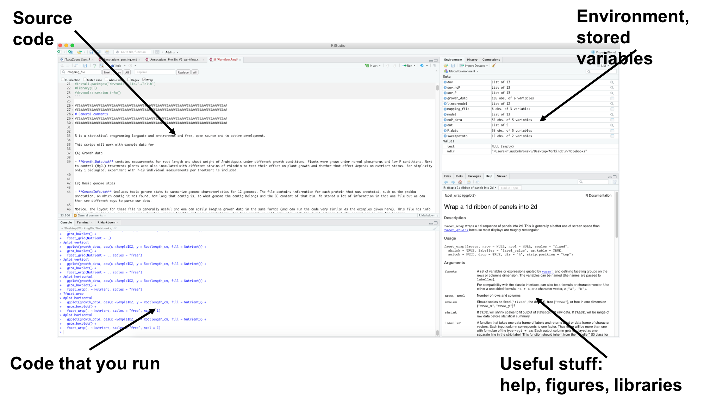
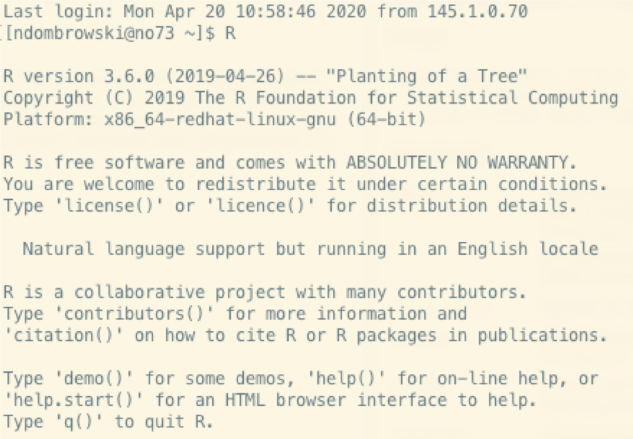
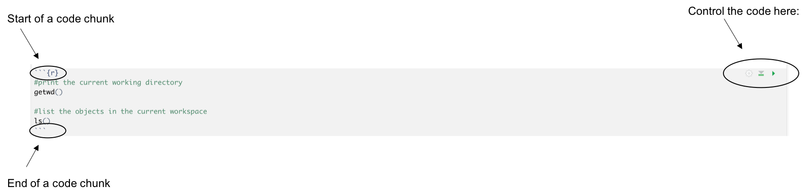
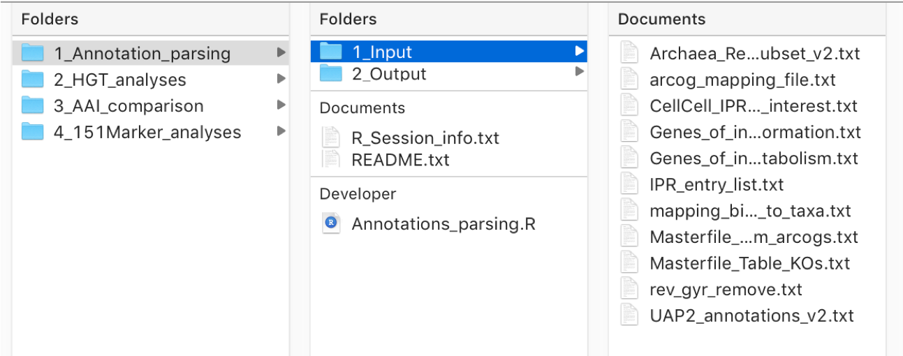

## list()1 Introduction into R
R is a statistical programming language and environment and free, open source and in active development. This tutorial will introduce into the basic concepts of R.
This tutorial will work with example data for two datasets:
1. Growth data
We have two data files that work with a similar experimental setup:
1.1. Growth_Data.txt
During this experiments, we are doing plant growth experiments and treated our plants with different microbes wondering if any microbe affects plant growth in a positive way.
This file contains measurements of root length and shoot fresh weight for plants grown under control treatments (=MgCL) or when treating with 4 different bacteria. For simplicity only 1 biological experiment with 7-10 individual measurements per treatment were included.
1.2. Timecourse.txt
We found positive effects for some of the strains tested above and now we want to know how long it takes for this effect to appear. To answer this, we measured root length of our plants when adding our microbe and compared it to control treatments at 5 different time points. Something unique with this dataframe is that we have empty cells (=NAs) and we need to deal with them as some R functions don’t like empty cells.
1.1 The example data
Let’s have a look at the data structure for our first dataframe:
The timecourse data looks similar, we just have an extra column for the different timepoints and we only have measurements for the root length.
2. Annotation data
This file is specific to the output of the Spang_team annotation pipeline but this workflow can be used for any type of categorical data one wants to summarize.
Using this workflow, we generated the file UAP2_Annotation_table_u.txt, which includes annotations for a set of 46 DPANN genomes. This includes annotations across several databases (arCOG, KO, PFAM, …) for each individual protein found across all these 46 genomes.
Specifically, we want to learn how to:
- Make a count table for each genome
- Make a count table for clusters of interest
- Make a heatmap for genes of interest
- Merge our results with some pre-sorted tables
For this to work we have some additional files to make our job easier:
- mapping.txt = a list that defines to what cluster (i.e. grouping based on a phylogenetic tree) or bins belong to
- Genes_of_interest = a list of genes we are interested in and that we want to plot in a heatmap
- ar14_arCOGdef19.txt = metadata for the arCOG annotations
- Metabolism_Table_KO_Apr2020.txt = metadata for KOs and sorted by pathways
The annotation table looks like this:
| accession | BinID | TaxString | NewContigID | OldContigId | ContigIdMerge | ContigNewLength | GC | ProteinID | ProteinGC | ProteinLength | Prokka | arcogs | arcogs_geneID | arcogs_Description | Pathway | arcogs_evalue | KO_hmm | e_value | bit_score | bit_score_cutoff | Definition | confidence | PFAM_hmm | PFAM_description | Pfam_Evalue | TIRGR | TIGR_description | EC | TIGR_Evalue | CAZy | CAZy_evalue | Description | TDBD_ID | TPDB_evalue | HydDB | Description.1 | HydDB_evalue | PFAM | PFAMdescription | IPR | IPRdescription | TopHit | E_value | PecID | TaxID | TaxString.1 |
|---|---|---|---|---|---|---|---|---|---|---|---|---|---|---|---|---|---|---|---|---|---|---|---|---|---|---|---|---|---|---|---|---|---|---|---|---|---|---|---|---|---|---|---|---|---|---|
| NIOZ119_mb_b5_2-PJFDGLDN_00010 | NIOZ119_mb_b5_2 | UAP2 | PJFDGLDN_1 | NIOZ119_sc1610046_1 | NIOZ119_mb_b5_2_contig_1 | 2539 | 0.432 | PJFDGLDN_00010 | 0.094 | 350 | Digeranylgeranylglycerophospholipid reductase | arCOG00570 | - | “Geranylgeranyl_reductase,_flavoprotein” | I | 2.80E-75 | K17830 | 2.10E-69 | 243.3 | 246.87 | digeranylgeranylglycerophospholipid_reductase_[EC:1.3.1.101_1.3.7.11] | - | PF01494 | FAD_binding_domain | 5.90E-09 | TIGR02032 | geranylgeranyl_reductase_family | 1.3.1.- | 1.40E-49 | - | - | - | - | - | - | - | - | IPR036188;_IPR002938 | FAD/NAD(P)-binding_domain_superfamily;_FAD-binding_domain | PF01494 | FAD_binding_domain | KYK22416.1_hypothetical_protein_AYK24_02275_[Thermoplasmatales_archaeon_SG8-52-4] | 2.80E-58 | 36.5 | 1803819 | “Archaea,Euryarchaeota,Thermoplasmata,Thermoplasmatales,none,none,Thermoplasmatales_archaeon_SG8-52-4” |
| NIOZ119_mb_b5_2-PJFDGLDN_00020 | NIOZ119_mb_b5_2 | UAP2 | PJFDGLDN_1 | NIOZ119_sc1610046_1 | NIOZ119_mb_b5_2_contig_1 | 2539 | 0.432 | PJFDGLDN_00020 | 0.057 | 105 | hypothetical protein | - | - | - | - | - | - | - | - | - | - | - | - | - | - | - | - | - | - | - | - | - | - | - | - | - | - | - | - | - | - | - | - | - | - | - |
| NIOZ119_mb_b5_2-PJFDGLDN_00030 | NIOZ119_mb_b5_2 | UAP2 | PJFDGLDN_1 | NIOZ119_sc1610046_1 | NIOZ119_mb_b5_2_contig_1 | 2539 | 0.432 | PJFDGLDN_00030 | 0.092 | 304 | tRNA-2-methylthio-N(6)-dimethylallyladenosine synthase | arCOG01358 | MiaB | 2-methylthioadenine_synthetase | J | 5.80E-90 | K15865 | 1.20E-109 | 375.8 | 343.7 | threonylcarbamoyladenosine_tRNA_methylthiotransferase_CDKAL1_[EC:2.8.4.5] | high_score | PF04055 | Radical_SAM_superfamily | 2.60E-21 | TIGR01578 | “MiaB-like_tRNA_modifying_enzyme,_archaeal-type” | - | 1.70E-104 | - | - | - | - | - | - | - | - | IPR005839;_IPR002792;_IPR006466;_IPR006638;_IPR007197;_IPR020612;_IPR023404 | “Methylthiotransferase;_TRAM_domain;_MiaB-like_tRNA_modifying_enzyme,_archaeal-type;_Elp3/MiaB/NifB;_Radical_SAM;_Methylthiotransferase,_conserved_site;_Radical_SAM,_alpha/beta_horseshoe” | PF01938;_PF04055 | TRAM_domain;_Radical_SAM_superfamily | OIO63284.1_hypothetical_protein_AUJ83_01460_[Candidatus_Woesearchaeota_archaeon_CG1_02_33_12] | 8.20E-91 | 55.6 | 1805422 | “Archaea,Candidatus_Woesearchaeota,none,none,none,none,Candidatus_Woesearchaeota_archaeon_CG1_02_33_12” |
| NIOZ119_mb_b5_2-PJFDGLDN_00040 | NIOZ119_mb_b5_2 | UAP2 | PJFDGLDN_2 | NIOZ119_sc560284_1 | NIOZ119_mb_b5_2_contig_2 | 4191 | 0.456 | PJFDGLDN_00040 | 0.065 | 92 | Enolase | arCOG01169 | Eno | Enolase | G | 4.00E-26 | K01689 | 5.10E-20 | 81 | 48.73 | enolase_[EC:4.2.1.11] | high_score | PF00113 | “Enolase,_C-terminal_TIM_barrel_domain” | 1.20E-20 | TIGR01060 | phosphopyruvate_hydratase | 4.2.1.11 | 1.10E-25 | - | - | - | - | - | - | - | - | IPR020810;_IPR036849;_IPR000941;_IPR020809 | “Enolase,_C-terminal_TIM_barrel_domain;_Enolase-like,_C-terminal_domain_superfamily;_Enolase;_Enolase,_conserved_site” | PF00113 | “Enolase,_C-terminal_TIM_barrel_domain” | BAW30993.1_2-phosphoglycerate_dehydratase_[Methanothermobacter_sp._MT-2] | 3.80E-23 | 70.7 | 1898379 | “Archaea,Euryarchaeota,Methanobacteria,Methanobacteriales,Methanobacteriaceae,Methanothermobacter,Methanothermobacter_sp._MT-2” |
| NIOZ119_mb_b5_2-PJFDGLDN_00050 | NIOZ119_mb_b5_2 | UAP2 | PJFDGLDN_2 | NIOZ119_sc560284_1 | NIOZ119_mb_b5_2_contig_2 | 4191 | 0.456 | PJFDGLDN_00050 | 0.059 | 218 | 30S ribosomal protein S2 | arCOG04245 | RpsB | Ribosomal_protein_S2 | J | 8.90E-64 | K02998 | 1.60E-46 | 167.8 | 210.97 | small_subunit_ribosomal_protein_SAe | - | PF00318 | Ribosomal_protein_S2 | 7.00E-24 | TIGR01012 | ribosomal_protein_uS2 | - | 1.00E-72 | - | - | - | - | - | - | - | - | IPR005707;_IPR023454;_IPR023591;_IPR018130;_IPR001865 | “Ribosomal_protein_S2,_eukaryotic/archaeal;_Ribosomal_protein_S2,_archaeal;_Ribosomal_protein_S2,_flavodoxin-like_domain_superfamily;_Ribosomal_protein_S2,_conserved_site;_Ribosomal_protein_S2” | PF00318 | Ribosomal_protein_S2 | A0B6E5.1_RecName:_Full=30S_ribosomal_protein_S2 | 1.20E-56 | 52.8 | 349307 | “Archaea,Euryarchaeota,Methanomicrobia,Methanosarcinales,Methanotrichaceae,Methanothrix,Methanothrix_thermoacetophila” |
| NIOZ119_mb_b5_2-PJFDGLDN_00060 | NIOZ119_mb_b5_2 | UAP2 | PJFDGLDN_2 | NIOZ119_sc560284_1 | NIOZ119_mb_b5_2_contig_2 | 4191 | 0.456 | PJFDGLDN_00060 | 0.100 | 280 | hypothetical protein | arCOG01728 | Mho1 | “Predicted_class_III_extradiol_dioxygenase,_MEMO1_family” | R | 8.80E-74 | K06990 | 1.40E-72 | 253.3 | 47 | MEMO1_family_protein | high_score | PF01875 | Memo-like_protein | 4.50E-77 | TIGR04336 | AmmeMemoRadiSam_system_protein_B | - | 5.30E-91 | - | - | - | - | - | - | - | - | IPR002737 | MEMO1_family | PF01875 | Memo-like_protein | OYT50994.1_AmmeMemoRadiSam_system_protein_B_[Candidatus_Bathyarchaeota_archaeon_ex4484_135] | 1.30E-66 | 47 | 2012509 | “Archaea,Candidatus_Bathyarchaeota,none,none,none,none,Candidatus_Bathyarchaeota_archaeon_ex4484_135” |
1.2 RStudio (everything in one place):
R is command-line only while RStudio is a GUI ((graphical user interface)) version of R.
RStudio includes the following:
- Script separate from command-line (left-hand screen)
- Lists your variables (upper, right-hand corner)
- Manual and an extensive help function
- Easy install of new packages
- Plots are shown within RStudio

1.3 Opening R via the terminal
If you work with linux or want to start R from the terminal then open your terminal, change your directory to the R_exercises folder and then just type R.
Then, you should see something like this:

To check your R version, start and quit R you can do the following:
#Ask what R version we have
R.version
#start R
R
#exit R
q()1.4 Documenting code via markdown
1.4.1 Software
1.4.1.1 Rmarkdown
One nice way to commend code is combine R-code with informative text in R markdown format (rmd).
R Markdown supports dozens of static and dynamic output formats including: HTML, PDF, MS Word, Beamer, HTML5 slides, Tufte-style handouts, books, dashboards, shiny applications, scientific articles, websites, and more.
The R markdown file specifies code chunks which will be executed in R (or python or bash) and plain text which will be written to the report as is. A report is created by rendering the file in R, then the R-code is executed and the results are merged in a pdf or html output.
How you create a Rmarkdown document in R:
- Open RStudio
- press
File/new File/R markdown
This will create an R markdown file that already contains some R code and text. You can also open this document (the rmd file) in RStudio and see how the code looks.
You can also open a new file in any text editor and save it with the .rmd extension.
1.4.1.2 Quarto
Quarto
- Create dynamic content with Python, R, Julia, and Observable.
- Author documents as plain text markdown or Jupyter notebooks.
- Publish high-quality articles, reports, presentations, websites, blogs, and books in HTML, PDF, MS Word, ePub, and more.
- Author with scientific markdown, including equations, citations, crossrefs, figure panels, callouts, advanced layout, and more.
If you installed the newest version of RStudio, Quarto is already installed and we can create a quarto document with
- Open RStudio
- press
File/New File/Quarto document
Same as with RMarkdown, we document with Markdown (and HTML if we want), so knowing some basics is very useful.
1.4.2 R code in Markdown
- The R-code is embedded in between the
```{r}and```symbols.
In Rstudio, on the top-right position of such a section you will find three symbols. Pressing the middle one will run all code chunks above, while the right symbol will run the current R-chunk.

An important menu-button is the Knit or Render button at the top, left-hand corner of RStudio. Pressing this button will create the final, rendered document (i.e. a HTML or PDF)
1.4.3 Text in markdown
- Headings are defined with ‘#’, or ‘##’, or ‘###’ for first, second and third level.
- Lists are created by using ’*’ for (bullets) and ‘1’,
<80> for numbered lists. - A lot of other options are possible, more information on these can be found in the following documents.
- The Rmarkdown website: https://rmarkdown.rstudio.com
- You can find more R cheat sheets on https://rstudio.com/resources/cheatsheets/
- Another info sheet with info how to modify code: https://www.rstudio.com/wp-content/uploads/2016/03/rmarkdown-cheatsheet-2.0.pdf
1.4.4 Execution options
There are a wide variety of options available for customizing output from executed code
- include = FALSE — prevents code and results from appearing in the finished file. R Markdown still runs the code in the chunk, and the results can be used by other chunks.
- echo = FALSE — prevents code, but not the results from appearing in the finished file. This is a useful way to embed figures.
- message = FALSE — prevents messages that are generated by code from appearing in the finished file.
- warning = FALSE — prevents warnings that are generated by code from appearing in the finished.
- fig.cap = “…” — adds a caption to graphical results.
For setting these options inside a quarto document, see more here.
1.4.5 Using languages other than R
R Markdown/Quarto support several languages, such as bash and python, and you can call them in the same way as R code.
This is useful if you for example modify a dataframe in bash but then want continue to work on the data R. With proper documenting you can document the code in the same file.
Below is just an example, we see that we only need to “tell” R to use bash instead of R
#run echo to print something to the screen
echo 'hello world'
#run echo and follow with a sed to modify text
echo 'a b c' | sed 's/ /\|/g'
#list qmd files we have in our directory
ls -l *qmd
#show whats in our data
head ../data/Growth_Data.txt
## hello world
## a|b|c
## -rw-r--r--@ 1 ninadombrowski staff 118003 Oct 5 12:26 1_intro.qmd
## -rw-r--r--@ 1 ninadombrowski staff 239 Sep 29 15:31 2_misc.qmd
## -rw-r--r--@ 1 ninadombrowski staff 4015 Oct 5 10:20 test.qmd
## SampleID Nutrient Condition FW_shoot_mg Rootlength
## noP noP MgCl 10.26 5.931015152
## noP noP MgCl 6.52 5.74344697
## noP noP MgCl 12.17 6.834719697
## noP noP MgCl 11.37 6.742734848
## noP noP MgCl 9.8 6.736886364
## noP noP MgCl 3.75 4.236348485
## noP noP MgCl 5.38 4.753484848
## noP noP MgCl 4.53 5.532333333
## noP noP MgCl 7.75 5.484363636A general introduction into bash and awk is provided in two separate tutorials that are also available on github.
1.5 Good practices for coding
These practices are useful regardless of the computational language you use.
- Record what program versions you used
- For each project, document who wrote the code, when you did it and why
- Put dependencies in the beginning (ie packages)
- Record the working directory (wdir)
- Document ALL your code and comment it (using the # symbol)
- Comment code in detail, so that you can still understand it after 5 years
- Break code into smaller pieces for better readability
- Test each line of code and build in control steps
- If you work with random numbers, report the seed
- Use sessionInfo() at the end of the script, which documents all the packages used within R for the current project
- For larger files: save objects not workspaces (for space reasons)
- Have descriptive names for objects, short and simple but easy enough to understand what they mean
1.6 General introduction into R
1.6.1 Getting help
- Some good places to check for things online are:
- www.r-project.org stack overflow many more
- Inside of R, we can get help on functions and other things with:
help(mean)
?mean1.6.2 What is a workspace?
The workspace is your current R working environment and includes any user-defined objects (i.e. vectors, matrices, data frames, lists, functions).
At the end of an R session, the user can save an image of the current workspace that is automatically reloaded the next time R is started.
- From now on the code is shown in the grey area.
- If you see a line symbol, such as
[1]then this shows the result of running our code. - For example, first we run the code
getwd()and the second box shows us the results.
#print the current working directory
getwd()
## [1] "/Users/ninadombrowski/Desktop/WorkingDir/Notebooks/Code_snippets/R/code"
#list the objects in the current workspace
ls()
## [1] "annotation_data" "growth_data"1.6.3 Setting your working directory (wdir)
The directory from which you work is usually first set from where you start R. But it can be re-set to find your data more easily. Ideally, you make one wdir per project and define the path in the script (see later below). It is recommended to have a similar format for these project folders, i.e. consider to create subfolders for input and output files. From the wdir you set you can load files using absolute and relative paths.
An example would be something with a structure like this:

In this example you see that we have 4 projects, and in each folder we have the R_script and folders for the required input and required output files. Also useful to have is a text file with the session info and if you plan to share this with others it is also good to have a README file that provides some background on the analysis done.
Options to see the working dir and set the working directory in R are:
#print your wdir
getwd()
#setting your wdir
setwd(getwd())1.6.4 Packages
Packages are a collection of functions and tools that can be added to R that are often contributed by the community. Careful: there might be incompatibilities and packages are updated frequently but updating can break dependencies.
You need to install packages and load them EVERY TIME you want to use them. Therefore, ideally add them at the beginning of your scripts.
1.6.4.1 Installing packages
We have two ways to install packages:
- Via the console by typing:
install.packages("package-name")
This will download a package from one of the CRAN mirrors assuming that a binary is available for your operating system. If you have not set a preferred CRAN mirror in your options(), then a menu will pop up asking you to choose a location.
Use old.packages() to list all your locally installed packages that are now out of date. update.packages() will update all packages in the known libraries interactively. This can take a while if you haven
- Using R studio:
Go to the lower right hand-side window and click on packages and then install. Find the packages your are interested in.
Notice: If libraries come with their own data (i.e. example tables), then the data needs to be loaded separately. I.e. via data(cars) to load the cars data from the cars package.
1.6.4.2 Loading packages into your current R session
R will not remember what libraries you have loaded after you closed R. Therefore, you need to load necessary libraries every time. Here, we will load some libraries that are usually quite helpful and it is recommended to make the libraries you load part of each of your scripts. For example like this:
#some example packages needed for Rmarkdown
library(knitr)
library(kableExtra)1.6.5 The assignment operator <-
The <- symbol assigns a value to a variable,
General rules for the syntax R uses:
- R is case sensitive
- If a variable exists, it will overwrite it with a new variable without asking
- If you work with characters, i.e. words like ‘hello’, then this need to written with quotes around it: “hello” (this will become clearer below)
- ls() shows all the variables that are known by the system at the moment
- you can remove individual objects with
rm()and remove all objectsrm(list=ls())
We can store more or less everything in a variable and use it later. For example, we can store numbers and do some math with them:
#store some numbers
x <- 1
y <-4
#do some simple math with the numbers we have stored
x+y
## [1] 51.6.6 Use build in functions
Functions are build in code that we can use to make our life easier, i.e. we can calculate lengths of vectors, do math or do statistical analyses.
Base R already knows many useful functions but loading new packages greatly increases our repertoire.
A list of most used functions can be found here
A function consists of:
- Function name
- Arguments (optional, some might be set with a default) = control how exactly the function behaves
- Body of the function = defines what the function does
As an example lets test some simple functions: print and log:
#use the print function
print(3+5)
## [1] 8
#use the log function
log(10)
## [1] 2.3025851.6.6.1 Call the default values of a function
Every function comes with a set of arguments that you can set but that usually also have some default values. In R Studio you can easily access all those details with the help function.
?allows us to first of all check exactly what a function is doing. If you scroll down to the bottom of the help page you also get some examples on how to use a function.- More specifically the help function also allows us to get details on the arguments of a function.
- For example, if we check the help page of read.table we see that by default this function does not read in a header and if we want to provide a header we have to change that argument.
#let's check what **log** is doing
?log
#lets check the default arguments of a function
?read.tableOther useful functions:
| Name | Function |
|---|---|
| ls() | List objects in your current workspace |
| rm(object) | Remove object from your current workspace |
| rm(list = ls()) | Remove all objects from your current workspace |
1.7 Read data into R
To work with any kind of data we need to first read the data into R to be able to work with it.
For tables, there are some things to be aware of:
- It matters what separator our table uses to specify individual columns. I.e. some programs store data using commas while others use tab as default delimiter. By default R assume we use a tab, but we can change this behavior when we read in the table.
- Do not have any hash symbols (#) in your table. R will read this as a commented cell and not read the table from that point onward
- Avoid empty cells, as these sometimes can mess up your data.
For now, let’s read in the table with our growth data and store it under the variable name growth_data. To read in this file we need to direct it to the correct path as we do not have the file in the working directory but in a subdirectory namd data.
Options that are good to keep in mind when reading in a table:
sep= define that our field separator is a tab. A tab is written like this/t. If your data is using a space or comma, you can change that here.header= tell R that our data comes with a custom header (the first row in your dataframe)quote= deals with some annoying issue with data formatting in excel files
General notice:
- To view data, the
head()command is extremely practical, use it always when you modify data to check if everything went alright dim()is another useful function that displays the dimensions of a table, i.e. how many rows and columns we have. Again, this is useful to verify our data after we have transformed it to check if everything went alright.colnames()allows to only we the column namesrownames()allows to only we the row names. Usually these are numbers, but we can also add anything else into the rows.
#read in data
timecourse <- read.table("../data/Timecourse.txt", sep="\t", header=T, quote = "")
growth_data <- read.table("../data/Growth_Data.txt", sep="\t", header=T, quote = "")
#check the first few lines of our data
head(growth_data)#check the dimensions of our data
dim(growth_data)
## [1] 105 5#check the column names
colnames(growth_data)
## [1] "SampleID" "Nutrient" "Condition" "FW_shoot_mg" "Rootlength"#check the row names
rownames(growth_data)
## [1] "1" "2" "3" "4" "5" "6" "7" "8" "9" "10" "11" "12"
## [13] "13" "14" "15" "16" "17" "18" "19" "20" "21" "22" "23" "24"
## [25] "25" "26" "27" "28" "29" "30" "31" "32" "33" "34" "35" "36"
## [37] "37" "38" "39" "40" "41" "42" "43" "44" "45" "46" "47" "48"
## [49] "49" "50" "51" "52" "53" "54" "55" "56" "57" "58" "59" "60"
## [61] "61" "62" "63" "64" "65" "66" "67" "68" "69" "70" "71" "72"
## [73] "73" "74" "75" "76" "77" "78" "79" "80" "81" "82" "83" "84"
## [85] "85" "86" "87" "88" "89" "90" "91" "92" "93" "94" "95" "96"
## [97] "97" "98" "99" "100" "101" "102" "103" "104" "105"Useful comments:
Sometimes we have to deal with really large data that take long to load with read.table. The function fread() from the data.table package is a very nice alternative. Below, we will explain how to read in R libraries to use additional functions.
This script always uses kable for plotting, which is just to make it visually attractive in html. Whenever you see a function using kable simply replace it with the head() function, i.e. write head(growth_data)
1.8 Store data from R on your computer as a text file
Now, if we would have modified the table we might want to store it on your computer. We can do this using write.table() and below we use a different output directory. Notice, we always start from the location we set as working directory.
write.table(growth_data, "../output_examples/growth_data_changed.txt", sep = "\t", row.names = T, quote =F)Arguments:
sep–> we define what delimiter we want to userow.names= T –> we want to include whatever is in the rownamesquote= F –> we do not want R to add any quotes around our columns.
1.9 What are objects?
In R, all types of data are treated as objects. As such objects are units that we work with, i.e. data and functions.
Roughly we distinguish between:
- Data types = For example: numeric, characters, factors, … You can identify your data type with the function
typeof() - Data structures = For example: vector, matrix, list. You can identify the structure with
class()oris() str()= defines what the indiv. components of your data are
Everything that exists is an object. Everything that happens is a function call.
Below, we introduce all these different types of objects.
1.10 Data classes
When programming, data,values,etc. are stored in different ways:
R has 6 atomic classes. Below you can find each class with an example
- character = “hello”
- numeric (real or decimal) = 3, 14, ….
- logical = TRUE
- complex = 1+4i
- integer = 2 (Must add a L at end to denote integer)
- double = a number class, like the integer but with double precision floating points
Here, is a quick example, how we can find out some things about our objects using:
c()= a function that will create a vector (a one dimensional array) and in our case store 3 numbers. We need to use this every time we deal with more than one number, character, etc….
class()= what class is our data?length()= how long is our data?
#create some objects
character_object <- "dataset"
number_object <- c(1,4,5)
#asking with what type we work
class(character_object)
## [1] "character"
class(number_object)
## [1] "numeric"#ask how long our objects are
length(character_object)
## [1] 1
length(number_object)
## [1] 31.11 Data structures
There are many types of data structures, the most frequently used ones being:
- Vectors
- Factors
- Matrices
- Lists
- Data frames
Certain operations only work on certain kind of structures, therefore, it is important to know what kind of data we are working with.
In R, you do not need to specify the type of data a variable will receive beforehand. You simply do the assignment, R will create a so called R-Object and assign a data type automatically.
1.11.1 Vectors
A vector is a collection of items of the same type (i.e characters, numbers). You can read in numbers and characters into the same vector, however, the number will be then seen as a character if you mix different classes.
#lets create a random vector
a_vector <- c(2, 3, 5, 7, 1)
#show the vector we just created
a_vector
## [1] 2 3 5 7 1#asking how long your vector is
length(a_vector)
## [1] 51.11.1.1 Vector indexing
If we want to only retrieve part of the data stored in a vector we can create a subset using the index as shown below.
- square brackets [] = allow us to retrieve certain elements of a vector, i.e. [3] retrieves the 3rd element
- we can combine
c()and [] if we want to retrieve several elements of a vector.
#retrieve the third element stored in a vector
a_vector[3]
## [1] 5#retrieve the 1st and 3rd element by combining ``c()`` and []
a_vector[c(1,3)]
## [1] 2 5#retrieve the 1-3rd element
a_vector[c(1:3)]
## [1] 2 3 5#we can also add vectors of the same length together
x <- c(1,2,3,4)
y <- c(1,2,3,4)
#and now we can combine our vectors
x + y
## [1] 2 4 6 8Beware: If we add two vectors of different length, the shorter vector is duplicated. This only works if the shorter vector is proportional to the longer one
#adding vectors of different lengths
x <- c(1,2)
y <- c(1,2,3,4)
#and now we can combine our vectors
x + y
## [1] 2 4 4 6Another way to extend vectors is:
append()–> Add elements to a vector.
#add another datapoint to our vector
a_vector <- append(a_vector, 13)
a_vector
## [1] 2 3 5 7 1 13#add +1 to all our four numbers
a_vector <- a_vector + 1
a_vector
## [1] 3 4 6 8 2 14#remove the first element of our vector
a_vector <- a_vector[-1]
a_vector
## [1] 4 6 8 2 14We not only can extract the nth element but if we have header names then we can also use these to retrieve data:
#create a vector and give it names (i.e. for counts from some microbes)
x <- c(300, 410, 531)
names(x) <- c("Ecoli","Archaeoglobus","Ignicoccus")
#check how our data looks
x
## Ecoli Archaeoglobus Ignicoccus
## 300 410 531#now we can retrieve part of the vector using the names
x[c("Ecoli","Ignicoccus")]
## Ecoli Ignicoccus
## 300 5311.11.1.2 Changing vectors
We can also change elements in our vector:
#create a vector
x <- 1:10
#change the second last positions to 5 and 9
x[9:10] <- c(5,9)
#check if this worked
x
## [1] 1 2 3 4 5 6 7 8 5 9#we can not only add things, we can also remove this using the minus/**-** symbol
x[-3]
## [1] 1 2 4 5 6 7 8 5 9
#if we want to remove more than one thing we can use the **c()**
x[-(4:10)]
## [1] 1 2 31.11.2 Matrix
Matrices are the R objects in which the elements are arranged in a two-dimensional rectangular layout. They contain elements of the same type. Although you can construct matrices with characters or logicals, matrices are generally used to store numeric data.
The basic syntax for creating a matrix is:
matrix(data, nrow, ncol, byrow, dimnames)
- data: input vector whose components become the data elements from the matrix.
- dnrow: number of rows to be created.
- dncol: number of columns to be created.
- dbyrow: logical. If FALSE,(the default) the matrix is filled by columns, otherwise the matrix is filled by rows.
- ddimnames: A
<80><98>dimnames <80><99> attribute for the matrix: NULL or a list of length 2 giving the row and column names respectively.
In contrast in a data frame (see below) the columns contain different types of data, while in a matrix all the elements are the same type of data. A matrix in R is like a mathematical matrix, containing all the same type of thing (usually numbers). R often but not always can use dataframes and a matrix used interchangably.
Individual elements in a matrix can be printed using [row,column]. For example [2,3] would pull out the value in the 2nd ROW and third COLUMN.
dim()is extremely useful to control whether our data was transformed correctly during different operations. For example, after we merge two files we would like to know that they still have the same number of rows as when we started the analysis. Same if we remove for example 10 samples, then we want to make sure that this is indeed what happened.head()is another useful function to check the first rows of a larger matrix (or dataframe)tail()same as head but showing the last rows
#define our row and column names
row.names = c("row1", "row2", "row3", "row4")
col.names = c("col1", "col2", "col3")
#create our matrix (check the help function to see what is happening)
matrix_A <- matrix(c(3:14), nrow = 4, byrow = T, dimnames = list(row.names,col.names))
#check how our matrix looks like
matrix_A
## col1 col2 col3
## row1 3 4 5
## row2 6 7 8
## row3 9 10 11
## row4 12 13 14#print the value in the 2row and 3rd column
matrix_A[2,3]
## [1] 8#print the values in the 3rd column
matrix_A[,3]
## row1 row2 row3 row4
## 5 8 11 14#print everything except the 1st row
matrix_A[-1,]
## col1 col2 col3
## row2 6 7 8
## row3 9 10 11
## row4 12 13 14#print everything except the 2nd column
matrix_A[,-2]
## col1 col3
## row1 3 5
## row2 6 8
## row3 9 11
## row4 12 14#see the dimensions of matrix, i.e. the nr of rows and columns
dim(matrix_A)
## [1] 4 3#check the first rows of our matrix, since our data is small, everything is shown
head(matrix_A)
## col1 col2 col3
## row1 3 4 5
## row2 6 7 8
## row3 9 10 11
## row4 12 13 141.11.3 Lists
Sometimes you need to store data of different types. For example, if you are collecting cell counts, you might want to have cell counts (numeric), the microbes investigated (character), their status (logical, with TRUE for alive and FALSE for dead, …. This kind of data can be stored in lists. Lists are the R objects which contain elements of different types (numeric, strings, vectors, even another list, or a matrix).
A list is created using the list() function.
For example, the following variable x is a list containing copies of three vectors n, s, b.
#define our vectors
n = c(20, 30, 50)
s = c("Ecoli", "Archaeoglobus", "Bacillus")
b = c(TRUE, FALSE, TRUE)
#combine the vectors in a list
our_list = list(counts=n, strain=s, status=b)
#show our list
our_list
## $counts
## [1] 20 30 50
##
## $strain
## [1] "Ecoli" "Archaeoglobus" "Bacillus"
##
## $status
## [1] TRUE FALSE TRUE#sublist the second element in a list
our_list[2]
## $strain
## [1] "Ecoli" "Archaeoglobus" "Bacillus"#retrieve the 2nd and 3rd member of our list
our_list[c(2, 3)]
## $strain
## [1] "Ecoli" "Archaeoglobus" "Bacillus"
##
## $status
## [1] TRUE FALSE TRUE#we can also retrieve elements of a list if we know the name using two different ways:
our_list$strain
## [1] "Ecoli" "Archaeoglobus" "Bacillus"
our_list[["strain"]]
## [1] "Ecoli" "Archaeoglobus" "Bacillus"In the last example we use the $ dollar symbol to extract data, i.e. to extract variables in a dataset (a matrix, list, dataframe). I.e. above the data we want to access is ‘our_list’ and the variable we want to extract is the strain.
1.11.4 Dataframes
Dataframes are tables in which each column contains values of one variable type and each row contains one set of values from each column. You can think of a data frame as a list of vectors of equal length. Most of our data very likely will be stored as dataframes.
A Dataframe usually follows these rules:
- The top line of the table, called the header, contains the column names.
- Column names (i.e. the header of our data) should be non-empty (if they are, R provides the object with default values).
- Row names should be unique
- Each column should contain the same number of data items
- Each horizontal line after the header is a data row, which begins with the name of the row, and then followed by the actual data.
- Each data member of a row is called a cell.
Importantly, most of the things we have learned before, i.e. how to subset data, apply here too.
The growth data that we have read into R will be used to explain how dataframes work.
1.11.4.1 Viewing data Dataframes
- We can use the brackets as before to extract certain rows or columns.
- We can use the dollar sign to again extract information as long as we know the column names. I.e. now we want to access the shoot fresh weight (FW_shoot_mg) in our ‘growth_data’ dataframe.
colnames()allows us to access the column names, i.e. the headersrownames()allows us to access the rownames of our data (usually these are numbered if not specified otherwise while reading the table)dim()allows us to check the dimensions (i.e. the number of rows and columns). This is useful to regullary check, especially if we modified our data somehow.head()shows the first rows of our dataframe
#view our table
head(growth_data)#check how many rows and columns our data has
dim(growth_data)
## [1] 105 5#extract the data from the 2nd row
growth_data[2,]#extract the first three columns
head(growth_data[,1:3])#extract a column of our data using the column name
head(growth_data$Condition)
## [1] "MgCl" "MgCl" "MgCl" "MgCl" "MgCl" "MgCl"#print our headers
colnames(growth_data)
## [1] "SampleID" "Nutrient" "Condition" "FW_shoot_mg" "Rootlength"#get the dimensions
dim(growth_data)
## [1] 105 5When we print the rownames, we see that we have numbers from 1-105. When reading in a table into R it is the default behaviour how rownames are generated. As a general rule, if you want o have other rownames, these must be unique.
1.11.4.2 Adding new columns to Dataframes
Below is a very basic way to add a new column (we name it newColumn) and fill all rows with the word comment
#expand a dataframe, functions data.frame or cbind (or see below)
growth_data$newColumn <- "comment"
#check if that worked
head(growth_data)There are more sophisticated ways to add columns based on conditions or even merge dataframes. Some of these we will discuss later.
1.12 How can we check what kind of structure our data has?
If we read in our own data, we should check as what type of class our table is stored. We have several ways to do this:
class()= determines as what kind of object is storedstr()= display the internal structure of an R object.
#check what kind of data we have:
class(growth_data)
## [1] "data.frame"#check how are different parts of our data stored?
str(growth_data)
## 'data.frame': 105 obs. of 6 variables:
## $ SampleID : chr "noP" "noP" "noP" "noP" ...
## $ Nutrient : chr "noP" "noP" "noP" "noP" ...
## $ Condition : chr "MgCl" "MgCl" "MgCl" "MgCl" ...
## $ FW_shoot_mg: num 10.26 6.52 12.17 11.37 9.8 ...
## $ Rootlength : num 5.93 5.74 6.83 6.74 6.74 ...
## $ newColumn : chr "comment" "comment" "comment" "comment" ...We see that
- our data is stored in a dataframe
- that the data stored in different formats, i.e. numeric and characters
- the first 3 columns are stored in something we call a factor.
1.13 Factors
Factors are data objects that are used to represent categorical data and store it in its different levels. They are an important class for statistical analysis and for plotting. Factors are stored as integers, and have labels associated with these unique integers. Once created, factors can only contain a pre-defined set values, known as levels. By default, R always sorts levels in alphabetical order.
factor()allows us to create our own factor
#lets make a vector
Nutrients <- c("P", "P", "noP", "noP")
#lets make our own simple factor
Nutrients_factor <- factor(c("P", "P", "noP", "noP"))
#lets compare the vector and factor we generated
Nutrients
## [1] "P" "P" "noP" "noP"
Nutrients_factor
## [1] P P noP noP
## Levels: P noPWhen we check our factor, we see that R assigns one level to P and another level to noP. We can also see, that R sorts the levels in an alphabetical way, even though in the initial code we first had P before noP.
1.13.1 Checking the behaviour of factors
Now, lets check how factors behave.
levels()= only prints the levels of a given factor. We can also run this on any column of our dataframe.nlevels()= check how many levels we have.- While factors look (and often behave) like character vectors, they are actually integers under the hood, and you need to be careful when treating them like strings. We can test this by looking at what type of object we generated.
#only print the levels
levels(Nutrients_factor)
## [1] "P" "noP"
levels(growth_data$Condition)
## NULL#check how many levels we have
nlevels(Nutrients_factor)
## [1] 2#what class do we have
class(Nutrients_factor)
## [1] "factor"
typeof(Nutrients_factor)
## [1] "integer"1.13.2 Ordering factor levels
For some things, the order of things might matter and then we need to order the factors ourselves.
#check our levels
levels(Nutrients_factor)
## [1] "P" "noP"#reorder levels
Nutrients_factor_reordered <- factor(Nutrients_factor, levels = c("P", "noP"))
#check our levels
levels(Nutrients_factor_reordered)
## [1] "P" "noP"1.13.3 Converting factors
Sometimes you need to explicitly convert factors to either text or numbers. Or numbers to characters, etc. To do this, you use the functions as.character() or as.numeric().
#convert our factor to a character
Nutrients_characters <- as.character(Nutrients_factor)
Nutrients_characters
## [1] "P" "P" "noP" "noP"1.14 Dealing with NAs in our data
1.14.1 Removing NAs
NAs are generated when our data contains a missing value. This can become problematic for certain programs and we can decide to remove all NAs.
The function to do this is is.na.
#create a vector that includes an NA
y <- c(1,2,3,NA,5)
#check whether we have NAs
is.na(y)
## [1] FALSE FALSE FALSE TRUE FALSE#remove NAs from our data
y[!is.na(y)]
## [1] 1 2 3 5- Exclamation marks in R –>
!=is “not equal to.” - The function is.na(z)gives a logical vector of the same size as z with value TRUE if and only if the corre-sponding element in z is NA.
- I.e. in this example we have FALSE FALSE FALSE TRUE FALSE
- When using y[!is.na(y)], retain the columns were is.na is False
1.14.1.1 Replacing NAs with something else
Another option might be to replace a NA with a 0 (or whatever else makes sense in a given context)
#create a vector that includes an NA
x <- c(1,2,3,NA,5)
#check whether we have NAs
is.na(x)
## [1] FALSE FALSE FALSE TRUE FALSE
#remove NAs from our data
x[is.na(x)] <- 0
#check data
x
## [1] 1 2 3 0 5Notice, that here we use a similar syntax compared to before. Now we do
- Find the NAs (I.e. in this example we have FALSE FALSE FALSE TRUE FALSE)
- If NA is TRUE then replace it with a 0
1.14.2 Replacing NAs in our dataframe
Remember, in the beginning we said that their are NAs in our timecourse data. Let’s have a look at this data, i.e. row 30, we will see that we have NAs.
Next, we want to remove all rows that have no values.
#check in which rows we have NAs inside the root length measurements
which(is.na(timecourse$Rootlength))
## [1] 29 30 233 234 235 236 237 238 239 240 268 269 270 330 360 374 375 376
## [19] 377 378 379 380 381 382 383 384 385 386 387 388 389 390 402 403 404 405
## [37] 406 407 408 409 410 411 412 413 414 415 416 417 418 419 420 444 445 446
## [55] 447 448 449 450 475 476 477 478 479 480 492 493 494 495 496 497 498 499
## [73] 500 515 516 517 518 519 520 533 534 535 536 537 538 539 540 550 551 552
## [91] 553 554 555 556 557 558 559 560 574 575 605#check a column
timecourse[29,]#remove rows that contain NAs
timecourse_noNA <- timecourse[!is.na(timecourse$Rootlength), ]
#check if that worked
timecourse_noNA[29,]1.15 Important code snippets
1.15.1 Print the session info:
This prints our session info (used R version, packages, etc) and is very important to store to reproduce our code for others
#|eval: false
sessionInfo()
## R version 4.2.1 (2022-06-23)
## Platform: x86_64-apple-darwin17.0 (64-bit)
## Running under: macOS Catalina 10.15.7
##
## Matrix products: default
## BLAS: /Library/Frameworks/R.framework/Versions/4.2/Resources/lib/libRblas.0.dylib
## LAPACK: /Library/Frameworks/R.framework/Versions/4.2/Resources/lib/libRlapack.dylib
##
## locale:
## [1] C
##
## attached base packages:
## [1] stats graphics grDevices utils datasets methods base
##
## other attached packages:
## [1] kableExtra_1.3.4 knitr_1.40
##
## loaded via a namespace (and not attached):
## [1] rstudioapi_0.14 xml2_1.3.3 magrittr_2.0.3 rvest_1.0.3
## [5] munsell_0.5.0 viridisLite_0.4.1 colorspace_2.0-3 R6_2.5.1
## [9] rlang_1.0.5 fastmap_1.1.0 highr_0.9 stringr_1.4.1
## [13] httr_1.4.4 tools_4.2.1 webshot_0.5.3 xfun_0.33
## [17] cli_3.4.0 htmltools_0.5.3 systemfonts_1.0.4 yaml_2.3.5
## [21] digest_0.6.29 lifecycle_1.0.2 vctrs_0.4.1 htmlwidgets_1.5.4
## [25] glue_1.6.2 evaluate_0.16 rmarkdown_2.16 stringi_1.7.8
## [29] compiler_4.2.1 scales_1.2.1 jsonlite_1.8.0 svglite_2.1.01.15.2 Clean-up the working environment
Notice: At the moment, we do not want to clean up the working directory, therefore, in our documentation we put a # in front of it. If you want to run the code just remove the #
#rm(list = ls()) 1.16 Basic operations
- R can work as a calculator and knows all basic operations
- In expressions and assignments, R does not care about spaces
- Another important character is the semicolon. R evaluates code line by line. A line break tells R that a statement has to be evaluated. Instead, you can use a semicolon to tell R where a statement ends
#add
3+2
## [1] 5#multiply
3.5*3
## [1] 10.5#divide
2.1/3
## [1] 0.7#exponentials
2^10
## [1] 1024#more complex functions also work
3*(5+2^1)
## [1] 21#combining two operations into one using a semicolon
5+9 ; 4+5
## [1] 14
## [1] 91.17 Logical operators
One important features of R (and of any programming language) are logical operators.
When R evaluates an expression containing logical operators, it will return either TRUE or FALSE. It follows a list of them:
| Operator | Meaning | Operator | Meaning |
|---|---|---|---|
| < | less than | == | equal |
| > | greater than | != | not equal |
| <= | less than or equal to | & | and |
| >= | greater than or equal to | | | or |
1.18 Examples for using operators:
1.18.1 Basic operators
#basic operators
1==1
## [1] TRUE2>1
## [1] TRUE1==1 & 1>2
## [1] FALSE(1==1& 1>2) | 5<6
## [1] TRUE1.18.2 Using operators to subset dataframes
#only print data for the normal P conditions
P_data <- growth_data[growth_data$Nutrient == "P", ]
#test that all went ok
dim(growth_data)
## [1] 105 6
dim(P_data)
## [1] 53 6#we can also subset our data by numbers, i.e. only keep rows were roots are longer than 5cm
growth_data_10cm <- growth_data[growth_data$Rootlength > 5, ]
dim(growth_data_10cm)
## [1] 101 6#instead of keeping rows with roots longer than 5cm we can also remove them using *!*
growth_data_no10cm <- growth_data[!growth_data$Rootlength > 5, ]
dim(growth_data_no10cm)
## [1] 4 6Above you see a good example why dim() can very useful as it allows us to quickly check that what we do actually works. Always check afterwards that your function did what you expect you to do since as long as R is able to do something it will do it regardless if that might be different that you want R to do.
1.19 Useful base functions in R
Apart from the elementary operations, all of the common arithmetic functions are available: log, exp, sin, cos, tan, sqrt, etc. Other useful functions one can use on vectors are:
| Name | Function |
|---|---|
| max | select smallest element |
| min | select largest element |
| length | gives the number of elements |
| sum | sums all elements |
| mean | obtains the mean value |
| var | unbiased sample variance |
| sort | see exercise 2c |
1.20 Subsetting our data
We already have seen important ways to subset data:
- Use of the index by using the square brackets
#subsetting rows and columns using the index
growth_data[1:3,2:4]- Use of operators
#subset using operators (only print rows if the Nutrient column equals P)
P_data <- growth_data[growth_data$Nutrient == "P", ]
head(P_data)Now we want to look at some other examples:
1.20.1 grep and grepl
Oftentimes you may need to filter a data set based on a partial character string that is beyond the scope of comparison operators.
R provides such functions (grep and grepl) that match character patterns in specified vector. While both of these functions find patterns, they return different output types based on those patterns.
- grep returns numeric values that correspond to the indexed locations of the patterns
- grepl returns a logical vector in which ‘TRUE’ represents a pattern match.
In our growth data, we only want to print measurements of our strains.
#grep return the index value of each matched pattern
grep("MgCl", growth_data$Condition)
## [1] 1 2 3 4 5 6 7 8 9 10 11 12 13 53 54 55 56 57 58 59 60 61 62 63 64
## [26] 65 66 67#grepl returns a logical output for each indices in the original vector
#with "TRUE" representing matched patterns
grepl("Strain", growth_data$Condition)
## [1] FALSE FALSE FALSE FALSE FALSE FALSE FALSE FALSE FALSE FALSE FALSE FALSE
## [13] FALSE TRUE TRUE TRUE TRUE TRUE TRUE TRUE TRUE TRUE TRUE TRUE
## [25] TRUE TRUE TRUE TRUE TRUE TRUE TRUE TRUE TRUE TRUE TRUE TRUE
## [37] TRUE TRUE TRUE TRUE TRUE TRUE TRUE TRUE TRUE TRUE TRUE TRUE
## [49] TRUE TRUE TRUE TRUE FALSE FALSE FALSE FALSE FALSE FALSE FALSE FALSE
## [61] FALSE FALSE FALSE FALSE FALSE FALSE FALSE TRUE TRUE TRUE TRUE TRUE
## [73] TRUE TRUE TRUE TRUE TRUE TRUE TRUE TRUE TRUE TRUE TRUE TRUE
## [85] TRUE TRUE TRUE TRUE TRUE TRUE TRUE TRUE TRUE TRUE TRUE TRUE
## [97] TRUE TRUE TRUE TRUE TRUE TRUE TRUE TRUE TRUENow lets use this to actually filter our data table for a pattern.
filter_for_value <-timecourse_noNA[grepl("MgC", timecourse_noNA$Condition),]
head(filter_for_value)#filter data set based on values that do not match the specified pattern (by using the minus symbol)
filter_for_not_a_value <- timecourse_noNA[-grepl("MgC", timecourse_noNA$Condition),]
head(filter_for_not_a_value)Other comments:
- Using regular expressions (programming symbol pattern) will increase their functionality
- Specified patterns are case sensitive (‘t’ does not equal ‘T’)
- Any matching pattern will be returned despite the context in which that pattern is located (i.e., grep(‘the’, data) with return matches for ‘the’, ‘theme’, ‘heather’, ‘breathe’, and so on
<80><93>this is where regular expressions are useful for specifying where in a string the pattern should appear.
Regular expressions are explained in the AWK and General notebook. But just to give an example lets just grep Strains that have a 3 letter number
filter_3letters <- growth_data[grepl("[0-9][0-9][0-9]", growth_data$Condition),]
#check the structure of our data
head(filter_3letters)Here, [0-9] searches for every number from 0-9 and we look for three numbers. One important thing with subsetting is that the levels are still kept. So with the command above we remove every row that is not Strain101 and Strain230. However, the levels are still kept. Let’s check this:
levels(filter_3letters$Condition)
## NULLSo we see that MgCl and Strain28 are still in the levels even if they do not occur in our table itself. Sometimes when working with subsetted dataframes, i.e. when doing stats or plotting, this can interfere with our analysis. Here, it is useful to drop empty levels.
filter_3letters_clean <- droplevels(filter_3letters)
levels(filter_3letters_clean$Condition)
## NULL1.21 The unique command
unique() allows to determine duplicate rows and allows us to subset our data for certain categories. For example, for very large dataframes we often can simplify things.
Here, if we have a lot of treatments and did the experiment a long time ago, we might want to ask for a table that lists the treatments.
#make unique contig list that still contains info of our bin ID
mapping_file <- unique(growth_data[,c("SampleID", "Nutrient", "Condition")])
#view data
head(mapping_file)1.22 The merge command
We can also add additional metadata to our growth data.
One way to do this is the cbind() or rbind() functions. However, these functions require the two dataframes to have the exact number of columns or rows, which we do not have.
Here, the merge() function of the data.table package is very useful to merge data with different dimensions as long as they have a common pattern (i.e. the SampleID).
First lets build an artificial mapping file that incldues the number of days we grew our plants:
#make mapping that contains our basic sample info
mapping_file <- unique(growth_data[,c("SampleID", "Nutrient", "Condition")])
#add a new column, where we list our experiment ID
mapping_file$Comment <- "FirstExperiment"
#view data
head(mapping_file)Now we can use this mapping file and merge it with our growth data as follows:
#load our package
library(plyr)
#merge our mapping file with our growth data
new_data_frame <- merge(growth_data, mapping_file, by = "SampleID")
#view data
head(new_data_frame)This now is a good example to check that all went fine and that the new dataframes has the same number of rows (=measurements) compared to the original dataframe.
#control that all went fine
dim(growth_data)
## [1] 105 6
dim(new_data_frame)
## [1] 105 9
#if there is no match between dataframe 1 and dataframe 2 columns will by default be deleted. If you want to keep all columns do:
#new_data_frame <- merge(growth_data, mapping_file, by = "SampleID". all.x = T)With dim we see that we still have 105 rows (i.e. measurements) and that we now added 3 new columns.
1.23 Combine commands into one line
While this gets more difficult to read, sometimes it might be useful to combine several commands into one go to condense code Generally, it is easier to just write line by line especially if you read your code months later.
What we want to do: - in the example above we duplicate the columns for Nutrient and Condition and before merging we might first subset the mapping file to only include the info we want to merge. - so our two steps are: a) trim the mapping file and b) merge
To do this, we use these two lines of code:
#make mapping file more simple
mapping_reduced <- mapping_file[,c("SampleID", "Comment")]
#merge
new_data_frame <- merge(growth_data, mapping_reduced, by = "SampleID")
head(new_data_frame)Now, this worked fine but requires a bit more code and we need to create one more object.
We could also combine these two kines of code into one line by subsetting our mapping file INSIDE the merge function as follows:
new_data_frame <- merge(growth_data, mapping_file[,c("SampleID", "Comment")], by = "SampleID")
head(new_data_frame)1.24 Add new columns to our data and combining values in different columns
We can also add new columns into original table, i.e. if we want to not show the fresh weight in mg but in g.
Below you can see that if we have numerical data in a column, we can use normal math operators (like +,-,/)
#convert mg to g
growth_data$FW_shoot_g <- growth_data$FW_shoot_mg/10
head(growth_data)#we can also round our data
growth_data$FW_shoot_g <- round(growth_data$FW_shoot_mg/10, digits = 2)
head(growth_data)We can also add (or substract, etc …) values from different columns. I.e. here we could calculate the ratios.
#we can also do math with the values in two columns, i.e. if we want to calculate the ration between root length and fresh weight
growth_data$ratio <- growth_data$Rootlength/growth_data$FW_shoot_mg
head(growth_data)1.25 STATS
A lot of helpful information that that was used here was inspired by a more detailed site that can be found here . And please take note, that the writer of this tutorial is no statistician and if you spot issues feel free to let me know!
1.25.1 Summary stats
To do some basic stats we use the nutrient growth data set, which you find in the R_exercises folder.
means()= print the mean of a certain columnsummary()= print the mean, median, max, min, … of a certain column.
#get the menas of our root length
mean(growth_data$Rootlength)
## [1] 9.046117#return summary stats for the root length
summary(growth_data$Rootlength)
## Min. 1st Qu. Median Mean 3rd Qu. Max.
## 4.236 6.721 8.099 9.046 11.793 14.716We can also summarize data of several columns
#return summary stats for the root length
summary(growth_data[,c("Rootlength", "FW_shoot_mg")])
## Rootlength FW_shoot_mg
## Min. : 4.236 Min. : 3.75
## 1st Qu.: 6.721 1st Qu.: 7.69
## Median : 8.099 Median :11.62
## Mean : 9.046 Mean :15.23
## 3rd Qu.:11.793 3rd Qu.:22.05
## Max. :14.716 Max. :39.39We can also run summary() on our complete dataframe.
#run summary on all our data
summary(growth_data)
## SampleID Nutrient Condition FW_shoot_mg
## Length:105 Length:105 Length:105 Min. : 3.75
## Class :character Class :character Class :character 1st Qu.: 7.69
## Mode :character Mode :character Mode :character Median :11.62
## Mean :15.23
## 3rd Qu.:22.05
## Max. :39.39
## Rootlength newColumn FW_shoot_g ratio
## Min. : 4.236 Length:105 Min. :0.380 Min. :0.2761
## 1st Qu.: 6.721 Class :character 1st Qu.:0.770 1st Qu.:0.5141
## Median : 8.099 Mode :character Median :1.160 Median :0.6874
## Mean : 9.046 Mean :1.523 Mean :0.7381
## 3rd Qu.:11.793 3rd Qu.:2.200 3rd Qu.:0.8801
## Max. :14.716 Max. :3.940 Max. :1.6901This way we do not only get summary stats for our values, but also we get some counts on how many measurements we have for different conditions.
1.25.2 The table command
The function table builds a contingency table of the counts at each factor level, or combinations of factor levels. This is quite useful to count the number of data points with certain metadata associated. So for example for our genome data we can ask how many measurements we made for each condition.
#summarize how many measurements we have for each treatment
table(growth_data$SampleID)
##
## P P_101 P_230 P_28 noP noP_101 noP_230 noP_28
## 15 12 13 13 13 13 11 15Here, we see that we have a slightly different number of measurements for each condition and timepoint. For this tutorial we can ignore them, but this might be relevant if we have huge differences for some statistical analyses. This approach allows you to for larger datasets to easily check for samples that might be outliers in terms of measurements per sample.
1.25.3 The ddply command
The table command can get rather slow and there are some useful packages to speed up things and run more complicated mathematical operations. One example is the ddply() function of the plyr package. A useful feature of ddply is that this tool stores the output as a dataframe instead of a table.
Below we see examples were we summarize the data for the root length across different nutrient conditions. I.e. we do not want to have the mean for all root lengths but we want to see if roots have different lengths under low and high P conditions.
#load our package
library(plyr)
#calculate the mean root length across our Sample IDs
growth_data_summarized <- ddply(growth_data, .(Nutrient), summarize, Mean_RootLength = mean(Rootlength))
#view data
head(growth_data_summarized)The structure of the command is as follows:
ddply(Input_Data, .(Colum_we_want_to_sum_arcoss), summarize, New_Column_name = mean(Column_we_want_to_calc_the_mean_for))
We can also summarize the data combining different conditions (i.e. nutrient and condition).
#Summarize our data across Nutrients and Conditions
growth_data_summarized <- ddply(growth_data, .(Nutrient, Condition), summarize, Mean_RootLength = mean(Rootlength))
#view data
head(growth_data_summarized)We can also calculate the mean, sd and se in one line of code
#and we can use even fancier functions (i.e. get the se and sd), check the plyr package for more details
growth_data_summarized <- ddply(growth_data, .(Nutrient, Condition), summarize, RootLength = mean(Rootlength), sd = sd (Rootlength), se = sd(Rootlength) / sqrt((length(Rootlength))))
#view data
head(growth_data_summarized)1.25.4 tidyr
Tydir is another package to summarize data but also to transform data. For now we will just discuss the basics to summarize data but we will try to add an extended section on this package later.
You notice here that the syntax is a bit unusual and we use the %>% symbol (a so-called forward pipe operator). This symbol is commonly used in the dplyr and tidyr packages. This function passes the left hand side of the operator to the first argument of the right hand side of the operator.
In the following example, the a subset of the growth_data data (only 3 columns, not the whole dataframe) gets passed to count()
New functions:
count()= A function of the dplyr package. Here, we count the unique protein IDs grouped by BinID and gene (i.e. roughly equivalent to the columns we want to keep)summarize()creates new data frame into one (or more) rows for each combination of grouping variables; if there are no grouping variables, the output will have a single row summarising all observations in the input. It will contain one column for each grouping variable and one column for each of the summary statistics that you have specified.mean()= calculate the arithmetic mean.
# | warning: false
#read in package
library(tidyverse)
## -- Attaching packages --------------------------------------- tidyverse 1.3.2 --
## v ggplot2 3.3.6 v purrr 0.3.4
## v tibble 3.1.8 v dplyr 1.0.10
## v tidyr 1.2.1 v stringr 1.4.1
## v readr 2.1.2 v forcats 0.5.2
## -- Conflicts ------------------------------------------ tidyverse_conflicts() --
## x dplyr::arrange() masks plyr::arrange()
## x purrr::compact() masks plyr::compact()
## x dplyr::count() masks plyr::count()
## x dplyr::failwith() masks plyr::failwith()
## x dplyr::filter() masks stats::filter()
## x dplyr::group_rows() masks kableExtra::group_rows()
## x dplyr::id() masks plyr::id()
## x dplyr::lag() masks stats::lag()
## x dplyr::mutate() masks plyr::mutate()
## x dplyr::rename() masks plyr::rename()
## x dplyr::summarise() masks plyr::summarise()
## x dplyr::summarize() masks plyr::summarize()#count how many measurements we have per conditions
growth_data %>% count(Condition, sort = FALSE)#count how many measurements we have per nutrient and conditions
growth_data %>% count(Nutrient, Condition, sort = FALSE)#get more comprehensive data stats and summarize for the whole dataset
growth_data %>% summarise(
count = n(),
mean_root = mean(Rootlength, na.rm = TRUE))Good things about tydir are:
- it is extremely fast, so is important for dealing with larger datasets
- we can combine several compands by using the pipe
I.e. below we can see that we first group the input data and then summarized the group data.
#get more comprehensive data stats and summarize and grouping for the different conditions
growth_data %>%
group_by(Nutrient, Condition) %>%
summarise(
count = n(),
mean_root = mean(Rootlength, na.rm = TRUE) ,.groups = 'drop')We can also do other stats than just calculating the mean:
#get more comprehensive data stats and summarize and grouping for the different conditions
growth_data %>%
group_by(Nutrient, Condition) %>%
summarise(
count = n(),
mean_root = mean(Rootlength, na.rm = TRUE),
sd_root = sd(Rootlength),.groups = 'drop')Other useful summary functions:
mean(x): sum of x divided by the lengthmedian(x): 50% of x is above and 50% is belowsd(x): standard deviationIQR(x): interquartile range (robust equivalent of sd when outliers are present in the data)mad(x): median absolute deviation (robust equivalent of sd when outliers are present in the data)min(x): minimum value of xmax(x): maximum value of xquantile(x, 0.25): 25% of x is below this valuefirst(x): equivalent to x[1]nth(x, 2): equivalent to n<-2; x[n]last(x): equivalent to x[length(x)]n(x): the number of elements in xsum(!is.na(x)): count non-missing valuesn_distinct(x): count the number of unique valuesum(x > 10): count the number of elements where x > 10mean(y == 0): proportion of elements where y = 0
1.25.5 More stats: tapply
Tapply is a base R function and allows to apply a function to each cell of a ragged array, that is to each (non-empty) group of values given by a unique combination of the levels of certain factors. It can be used as an alternative to ddply.
Suppose now we want to estimate the mean root length for each growth condition. Notice, how we can vary the index?
#index = factors we want to select
tapply(X = growth_data$Rootlength, INDEX = growth_data$Nutrient, FUN = mean,na.rm = TRUE)
## P noP
## 11.513931 6.530845#same but for two-way tables (this is not so useful here, but might be handy when you have different conditions for the same organism or a timecourse)
tapply(growth_data$Rootlength, INDEX = list(growth_data$Nutrient, growth_data$Condition),FUN = mean, na.rm = TRUE)
## MgCl Strain101 Strain230 Strain28
## P 9.853457 12.729133 11.814678 12.007390
## noP 5.805198 7.094616 7.172883 6.2003091.25.6 Linear models
1.25.7 Basics
It is very simple to investigate linear relationships among variables in R. We want to estimate how a quantitative dependent variable changes according to the levels of one or more categorical independent variables. In the command below, the linear relationship between Rootlength (the dependent variable, i.e. the one we
We need to use the function summary to see the results of that command; coef extracts the best-fit coefficients, anova performs an analysis of variance; there are many other extractor functions.
In this case lets work with the data were we do not have to deal with the different time points to simplify things.
#read in data were we have several measurements
growth_data <- read.table("../data/Growth_Data.txt", sep="\t", header=T, fill=TRUE, quote = "")
#is there a correlation between freshweight and root length?
linearmodel <- lm(Rootlength ~ FW_shoot_mg, data = growth_data)
linearmodel
##
## Call:
## lm(formula = Rootlength ~ FW_shoot_mg, data = growth_data)
##
## Coefficients:
## (Intercept) FW_shoot_mg
## 5.2912 0.2465#let's extract the entire t-table
summary(linearmodel)
##
## Call:
## lm(formula = Rootlength ~ FW_shoot_mg, data = growth_data)
##
## Residuals:
## Min 1Q Median 3Q Max
## -4.5263 -0.9978 -0.0181 1.0094 3.9292
##
## Coefficients:
## Estimate Std. Error t value Pr(>|t|)
## (Intercept) 5.29124 0.30469 17.37 <2e-16 ***
## FW_shoot_mg 0.24648 0.01712 14.40 <2e-16 ***
## ---
## Signif. codes: 0 '***' 0.001 '**' 0.01 '*' 0.05 '.' 0.1 ' ' 1
##
## Residual standard error: 1.615 on 103 degrees of freedom
## Multiple R-squared: 0.6681, Adjusted R-squared: 0.6649
## F-statistic: 207.4 on 1 and 103 DF, p-value: < 2.2e-16Here one of the values is the model p-Value (bottom last line) and the p-Value of individual predictor variables (extreme right column under
- Residuals: The section summarizes the residuals, the error between the prediction of the model and the actual results. Smaller residuals are better.
- Coefficients: For each variable and the intercept, a weight is produced and that weight has other attributes like the standard error, a t-test value and significance.
- Estimate: This is the weight given to the variable. In the simple regression case (one variable plus the intercept), for every increase in root length, the model predicts an increase of 0.24.
- Std. Error: Tells you how precisely was the estimate measured. It
<80><99>s really only useful for calculating the t-value. - t-value and Pr(>[t]): The t-value is calculated by taking the coefficient divided by the Std. Error. It is then used to test whether or not the coefficient is significantly different from zero. If it isn
<80><99>t significant, then the coefficient really isn <80><99>t adding anything to the model and could be dropped or investigated further. Pr(>|t|) is the significance level.
Performance Measures:
Three sets of measurements are provided.
- Residual Standard Error: This is the standard deviation of the residuals. Smaller is better.
- Multiple / Adjusted R-Square: For one variable, the distinction doesn
<80><99>t really matter. R-squared shows the amount of variance explained by the model. Adjusted R-Square takes into account the number of variables and is most useful for multiple-regression. - F-Statistic: The F-test checks if at least one variable
<80><99>s weight is significantly different than zero. This is a global test to help asses a model. If the p-value is not significant (e.g. greater than 0.05) than your model is essentially not doing anything.
We also can just print parts of the data:
#print only the coefficients
coef(summary(linearmodel))
## Estimate Std. Error t value Pr(>|t|)
## (Intercept) 5.2912436 0.30469198 17.36588 2.278273e-32
## FW_shoot_mg 0.2464783 0.01711628 14.40023 2.039703e-26#print only the anova stats
anova(linearmodel)#plot add the best line to a plot
with(growth_data, plot(Rootlength ~ FW_shoot_mg, col = 2))
abline(linearmodel)
If we look at the stats and the p value we see a nice correlation but also that we have two distinct clusters as well as more spread in the cluster that is more to the right. These clusters likely are the two different nutrient conditions and sometimes it might make sense to separate data to get a clearer picture. Something else to consider is to ask whether the data is normally distributed and based on that what statistical test to choose.
1.25.7.1 Analysing residuals
Anyone can fit a linear model in R. The real test is analyzing the residuals (the error or the difference between actual and predicted results).
There are four things we are looking for when analyzing residuals.
- The mean of the errors is zero (and the sum of the errors is zero)
- The distribution of the errors are normal.
- All of the errors are independent.
- Variance of errors is constant (Homoscedastic)
In R, you pull out the residuals by referencing the model and then the resid variable inside the model. Using the simple linear regression model (simple.fit) we
Below some examples:
simple.fit <- linearmodel
layout(matrix(c(1,1,2,3),2,2,byrow=T))
#Rootlength x Residuals Plot
plot(simple.fit$resid~growth_data$Rootlength[order(growth_data$Rootlength)],
main="Rootlength x Residuals\nfor Simple Regression",
xlab="Marketing Rootlength", ylab="Residuals")
abline(h=0,lty=2)
#Histogram of Residuals
hist(simple.fit$resid, main="Histogram of Residuals",
ylab="Residuals")
#Q-Q Plot
qqnorm(simple.fit$resid)
qqline(simple.fit$resid)
The histogram and QQ-plot are the ways to visually evaluate if the residual fit a normal distribution.
- If the histogram looks like a bell-curve it might be normally distributed.
- If the QQ-plot has the vast majority of points on or very near the line, the residuals may be normally distributed.
1.25.8 Normal distribution
1.25.8.0.1 Visualize our data via density plots
There are different ways to visualize this, one example is ggdensity of the ggpubr package.
library("ggpubr")
##
## Attaching package: 'ggpubr'
## The following object is masked from 'package:plyr':
##
## mutate
#is the data for my different variables normally distributed
ggdensity(growth_data$Rootlength)
We see nicely that we have two tails that likely represent the two nutrient conditions. To test this, we can simply subset the data as we have done before.
ggdensity(growth_data, x = "Rootlength",
add = "mean", rug = TRUE,
color = "Nutrient", palette = c("#00AFBB", "#E7B800"))
No we see that indeed the tool tails we see are seem to be due to our two nutrient conditions.
1.25.8.1 Visualize our data via Q-Q plots
Another way to represent data is in a Q-Q plot: Q-Q plot (or quantile-quantile plot) draws the correlation between a given sample and the normal distribution. A 45-degree reference line is also plotted.
#plot all data
ggqqplot(growth_data$Rootlength)
#plot by group
ggqqplot(growth_data, x = "Rootlength",
color = "Nutrient", palette = c("#00AFBB", "#E7B800"))
Again, here we see that our data for the indivdual growth conditions fit quite nicely into normal distribution.
1.25.8.2 Test for normality
#for all data
shapiro.test(growth_data$Rootlength)
##
## Shapiro-Wilk normality test
##
## data: growth_data$Rootlength
## W = 0.91773, p-value = 6.744e-06#separate nutrient conditions
noP_data <- growth_data[growth_data$Nutrient == "noP", ]
#test for noP only
shapiro.test(noP_data$Rootlength)
##
## Shapiro-Wilk normality test
##
## data: noP_data$Rootlength
## W = 0.96403, p-value = 0.1171We can use ddplyr and the dlookr package for doing a group-wise comparison
library(dplyr)
library(dlookr)
##
## Attaching package: 'dlookr'
## The following object is masked from 'package:tidyr':
##
## extract
## The following object is masked from 'package:base':
##
## transform
growth_data %>%
group_by(Nutrient) %>%
normality()The shapiro.test tests the NULL hypothesis that the samples came from a Normal distribution. This means that if your p-value <= 0.05, then you would reject the NULL hypothesis that the samples came from a normal distribution.
From the output, the p-value < 0.05 for our complete dataset implies that the distribution of the data is significantly different from normal distribution. In other words, we can not assume the normality. However, we expect quite some differences dependent on the growth pattern and once we only look at our low P data we see that our indeed is normally distributed.
Notice: Shapiro works only for sample sizes between 3-5000 numbers since when you feed it more data, the chances of the null hypothesis being rejected becomes larger. An alternative is the Anderson-Darling test that however has a similar problem with the Shapiro Wilk test. For large samples, you are most likely to reject the null hypothesis, so be aware of this.
library(nortest)
ad.test(noP_data$Rootlength)
##
## Anderson-Darling normality test
##
## data: noP_data$Rootlength
## A = 0.58838, p-value = 0.11871.25.9 ANOVA
When we visualize the data, we see that there is a difference between the nutrient conditions but we want to know whether it is significant and more importantly, whether there is also a difference based on our treatments with different strains of microbes.
#lets visually compare our data with ggpubr again
library("ggpubr")
ggboxplot(growth_data, x = "Condition", y = "Rootlength", color = "Nutrient",
palette = c("#00AFBB", "#E7B800"))
# We want to know whether root length depends on nutrient treatment
aov <- aov(Rootlength ~ Nutrient, data = growth_data)
summary(aov)
## Df Sum Sq Mean Sq F value Pr(>F)
## Nutrient 1 651.8 651.8 425 <2e-16 ***
## Residuals 103 157.9 1.5
## ---
## Signif. codes: 0 '***' 0.001 '**' 0.01 '*' 0.05 '.' 0.1 ' ' 1Here, we see that there are significant differences based on our nutrient treatments. Now lets see how we can look at both the nutrient treatment and growth conditions.
# We want to know if root length depends on condition and nutrient
aov <- aov(Rootlength ~ Nutrient + Condition, data = growth_data)
summary(aov)
## Df Sum Sq Mean Sq F value Pr(>F)
## Nutrient 1 651.8 651.8 712.58 < 2e-16 ***
## Condition 3 66.5 22.2 24.23 7.27e-12 ***
## Residuals 100 91.5 0.9
## ---
## Signif. codes: 0 '***' 0.001 '**' 0.01 '*' 0.05 '.' 0.1 ' ' 1From the ANOVA table we can conclude that both nutrient condition and treatment are statistically significant. Nutrient treatment is the most significant factor variable.
Not the above fitted model is called additive model. It makes an assumption that the two factor variables are independent. If you think that these two variables might interact to create an synergistic effect, replace the plus symbol (+) by an asterisk (*), as follows.
# Two-way ANOVA with interaction effect
# These two calls are equivalent
aov <- aov(Rootlength ~ Nutrient * Condition, data = growth_data)
aov <- aov(Rootlength ~ Nutrient + Condition + Nutrient:Condition, data = growth_data)
#summarize the aov
summary(aov)
## Df Sum Sq Mean Sq F value Pr(>F)
## Nutrient 1 651.8 651.8 817.131 < 2e-16 ***
## Condition 3 66.5 22.2 27.780 4.72e-13 ***
## Nutrient:Condition 3 14.1 4.7 5.891 0.000976 ***
## Residuals 97 77.4 0.8
## ---
## Signif. codes: 0 '***' 0.001 '**' 0.01 '*' 0.05 '.' 0.1 ' ' 1It can be seen that the two main effects (Nutrient and Condition) are statistically significant, as well as their interaction.
Note that, in the situation where the interaction is not significant you should use the additive model.
1.25.10 TUKEY
In ANOVA test, a significant p-value indicates that some of the group means are different, but we don
As the ANOVA test is significant, we can compute Tukey HSD (Tukey Honest Significant Differences). Tukey test is a single-step multiple comparison procedure and statistical test. It is a post-hoc analysis, what means that it is used in conjunction with an ANOVA.
#test with anova
aov <- aov(Rootlength ~ Nutrient * Condition, data = growth_data)
#run tukey
TukeyHSD(aov)
## Tukey multiple comparisons of means
## 95% family-wise confidence level
##
## Fit: aov(formula = Rootlength ~ Nutrient * Condition, data = growth_data)
##
## $Nutrient
## diff lwr upr p adj
## noP-P -4.983086 -5.329067 -4.637105 0
##
## $Condition
## diff lwr upr p adj
## Strain101-MgCl 2.1029052 1.4604930 2.7453173 0.0000000
## Strain230-MgCl 1.6836191 1.0341749 2.3330633 0.0000000
## Strain28-MgCl 1.2784796 0.6545138 1.9024455 0.0000034
## Strain230-Strain101 -0.4192861 -1.0864726 0.2479004 0.3597470
## Strain28-Strain101 -0.8244256 -1.4668377 -0.1820134 0.0061445
## Strain28-Strain230 -0.4051395 -1.0545837 0.2443048 0.3663501
##
## $`Nutrient:Condition`
## diff lwr upr p adj
## noP:MgCl-P:MgCl -4.0482585 -5.0967311 -2.9997859 0.0000000
## P:Strain101-P:MgCl 2.8756763 1.8040558 3.9472967 0.0000000
## noP:Strain101-P:MgCl -2.7588405 -3.8073131 -1.7103679 0.0000000
## P:Strain230-P:MgCl 1.9612207 0.9127482 3.0096933 0.0000023
## noP:Strain230-P:MgCl -2.6805735 -3.7789218 -1.5822252 0.0000000
## P:Strain28-P:MgCl 2.1539326 1.1054600 3.2024052 0.0000002
## noP:Strain28-P:MgCl -3.6531484 -4.6634819 -2.6428149 0.0000000
## P:Strain101-noP:MgCl 6.9239348 5.8162834 8.0315861 0.0000000
## noP:Strain101-noP:MgCl 1.2894180 0.2041458 2.3746903 0.0087961
## P:Strain230-noP:MgCl 6.0094793 4.9242070 7.0947515 0.0000000
## noP:Strain230-noP:MgCl 1.3676850 0.2341551 2.5012149 0.0073003
## P:Strain28-noP:MgCl 6.2021911 5.1169189 7.2874633 0.0000000
## noP:Strain28-noP:MgCl 0.3951101 -0.6533625 1.4435827 0.9391499
## noP:Strain101-P:Strain101 -5.6345168 -6.7421681 -4.5268654 0.0000000
## P:Strain230-P:Strain101 -0.9144555 -2.0221069 0.1931958 0.1845494
## noP:Strain230-P:Strain101 -5.5562498 -6.7112241 -4.4012755 0.0000000
## P:Strain28-P:Strain101 -0.7217437 -1.8293950 0.3859077 0.4749256
## noP:Strain28-P:Strain101 -6.5288247 -7.6004451 -5.4572042 0.0000000
## P:Strain230-noP:Strain101 4.7200613 3.6347890 5.8053335 0.0000000
## noP:Strain230-noP:Strain101 0.0782670 -1.0552629 1.2117969 0.9999989
## P:Strain28-noP:Strain101 4.9127731 3.8275008 5.9980453 0.0000000
## noP:Strain28-noP:Strain101 -0.8943079 -1.9427805 0.1541647 0.1537008
## noP:Strain230-P:Strain230 -4.6417943 -5.7753242 -3.5082644 0.0000000
## P:Strain28-P:Strain230 0.1927118 -0.8925604 1.2779841 0.9993212
## noP:Strain28-P:Strain230 -5.6143692 -6.6628417 -4.5658966 0.0000000
## P:Strain28-noP:Strain230 4.8345061 3.7009762 5.9680360 0.0000000
## noP:Strain28-noP:Strain230 -0.9725749 -2.0709232 0.1257734 0.1223122
## noP:Strain28-P:Strain28 -5.8070810 -6.8555536 -4.7586084 0.0000000We can see that most differences are significant, with the exception of Strain28, which in most cases does not show an effect.
For some representations it is useful to plot significant letters. We can do this using some extra packages as follows:
#load library
library(agricolae)
##
## Attaching package: 'agricolae'
## The following objects are masked from 'package:dlookr':
##
## kurtosis, skewness
#separate nutrient conditions
noP_data <- growth_data[growth_data$Nutrient == "noP", ]
#run an anova
aov_noP <- aov(Rootlength ~ Condition, data = noP_data)
#run test
HSD.test(aov_noP,"Condition", group=TRUE,console=TRUE)
##
## Study: aov_noP ~ "Condition"
##
## HSD Test for Rootlength
##
## Mean Square Error: 0.606883
##
## Condition, means
##
## Rootlength std r Min Max
## MgCl 5.805198 0.7738124 13 4.236348 6.834720
## Strain101 7.094616 0.5939804 13 5.947965 7.973207
## Strain230 7.172883 0.6117203 11 6.120089 8.197116
## Strain28 6.200309 0.9988989 15 4.384756 7.428674
##
## Alpha: 0.05 ; DF Error: 48
## Critical Value of Studentized Range: 3.763749
##
## Groups according to probability of means differences and alpha level( 0.05 )
##
## Treatments with the same letter are not significantly different.
##
## Rootlength groups
## Strain230 7.172883 a
## Strain101 7.094616 a
## Strain28 6.200309 b
## MgCl 5.805198 b1.25.11 Check the homogeneity of variances
The residuals versus fits plot is used to check the homogeneity of variances. In the plot below, there is no evident relationships between residuals and fitted values (the mean of each groups), which is good. So, we can assume the homogeneity of variances. Only a few points (41, 58 and 77 are detected as outliers, which can severely normality and homogeneity of variance. It can be useful to remove outliers to meet the test assumptions.)
#check for homogeneity
plot(aov, 1)
#Use the Levene<e2><80><99>s test to check the homogeneity of variances.
library(car)
## Loading required package: carData
##
## Attaching package: 'car'
## The following object is masked from 'package:dplyr':
##
## recode
## The following object is masked from 'package:purrr':
##
## some
leveneTest(Rootlength ~ Nutrient * Condition, data = growth_data)From the output above we can see that the p-value is not less than the significance level of 0.05. This means that there is no evidence to suggest that the variance across groups is statistically significantly different. Therefore, we can assume the homogeneity of variances in the different treatment groups.
1.25.12 Check for normality v2
Normality plot of the residuals. In the plot below, the quantiles of the residuals are plotted against the quantiles of the normal distribution. A 45-degree reference line is also plotted. The normal probability plot of residuals is used to verify the assumption that the residuals are normally distributed.
The normal probability plot of the residuals should approximately follow a straight line. which we can see below. Again, we see the points marked as potential outliers.
## plot
plot(aov, 2)
1.26 Control Structures
1.26.1 Loops
Sometimes it is necessary to repeat a calculation multiple times, e.g. calculate the sum of each row of a matrix. You can use for loops to do this.
In the first loop, we:
- define that we want to loop through rows 1 to 5 (1:5)
- for (i in 1:5) –> we say that we want to run a for loop, in which we name our variable i
- {} –> defines the operation we want to loop through
- in our case we want to sum a specific row (rows 1 trhough 5)
- so in i we store the numbers 1,2,3,4 and 5 and then run through the sum functions 5x
#build a dataframe
m <- matrix(1:15, 5)
m
## [,1] [,2] [,3]
## [1,] 1 6 11
## [2,] 2 7 12
## [3,] 3 8 13
## [4,] 4 9 14
## [5,] 5 10 15#sum rows without a loop --> sum row 1
sum(m[1, ])
## [1] 18#sum rows without a loop --> sum row 2, ...
sum(m[2, ])
## [1] 21#run a loop to get the sum for all five rows
for (i in 1:5) {
print(sum(m[i, ]))
}
## [1] 18
## [1] 21
## [1] 24
## [1] 27
## [1] 30In the second loop we store our results in a new dataframe and do not just print them to the screen. Therefore, we:
- define a variable (named results) in which we store an empty vector
- we need this empty vector to have something to store our results in
- start the foor loop and define i as before
- run the sum as before but now store the results for each interation in
results
#store the results, Note that here, the variable results had to be created before as an empty vector.
results <- c()
for (i in 1:5) {
results[i] <- sum(m[i, ])
}
results
## [1] 18 21 24 27 30Very often, there are some R packages or functions that are faster than loops. The apply() function is such an example. apply() applies a function, i.e. sum, across a matrix.
However, since loops are also a very useful feature in bash or python it is useful to understand their general concept.
#way to do the same using the apply function (faster than loops)
results2 <- apply(m, 1, sum)
results2
## [1] 18 21 24 27 30The first argument of apply() has to be a matrix, the second argument specifies the dimension of the matrix (1 means rows and 2 means columns) on which the function should be applied, and the third argument has to be a function that takes a vector as argument. Here, the function sum is applied to each row of m.
Actually, there is a family of apply functions, depending on the object you pass as an input, and/or the object you want as output. You can read a brief tutorial under this link.
I.e. apply(data, 1, mean) = apply mean on each row apply(data, 2, mean) = apply mean on each column
Two other examples are sapply and lapply, which work on lists.
1.26.2 if-else
One can also create a decision making structure in R. A decision making structure has at least one condition to be evaluated together with a statement or statements to be evaluated if the condition is TRUE, and optionally, other statements to be executed if the condition is FALSE, as we can see in the figure.
The test_expression has to be logical, i.e., it has to be a expression that, when evaluated, is either TRUE or FALSE. The logical operators listed above can be used to construct them. For example, we can use an if-else statement to check if a number is positive or negative,
#store a random number
x <- -5
#write a loop and ask if our number is positive or negative
if (x > 0) {
print("Positive number")
} else if (x == 0) {
print("Number is zero")
} else {
print("Negative number")
}
## [1] "Negative number"Note that in the example there was an else if. In that way we can check more than 2 conditions.
This of course is a very simplistic example. But if-else statements can be useful if we want to deal with larger dataframes, i.e. our growth data.
#apply ifelse
growth_data$category <- ifelse(growth_data$Rootlength<=10.0, "small", "large")
#check the structure of our data
kable(growth_data) %>%
kable_styling() %>%
scroll_box(width = "700px", height = "400px")| SampleID | Nutrient | Condition | FW_shoot_mg | Rootlength | category |
|---|---|---|---|---|---|
| noP | noP | MgCl | 10.26 | 5.931015 | small |
| noP | noP | MgCl | 6.52 | 5.743447 | small |
| noP | noP | MgCl | 12.17 | 6.834720 | small |
| noP | noP | MgCl | 11.37 | 6.742735 | small |
| noP | noP | MgCl | 9.80 | 6.736886 | small |
| noP | noP | MgCl | 3.75 | 4.236349 | small |
| noP | noP | MgCl | 5.38 | 4.753485 | small |
| noP | noP | MgCl | 4.53 | 5.532333 | small |
| noP | noP | MgCl | 7.75 | 5.484364 | small |
| noP | noP | MgCl | 8.64 | 5.963254 | small |
| noP | noP | MgCl | 10.36 | 5.359044 | small |
| noP | noP | MgCl | 7.69 | 5.725348 | small |
| noP | noP | MgCl | 8.57 | 6.424601 | small |
| noP_101 | noP | Strain101 | 10.49 | 7.143667 | small |
| noP_101 | noP | Strain101 | 8.91 | 7.669841 | small |
| noP_101 | noP | Strain101 | 9.32 | 7.807710 | small |
| noP_101 | noP | Strain101 | 6.76 | 7.508370 | small |
| noP_101 | noP | Strain101 | 5.99 | 6.607630 | small |
| noP_101 | noP | Strain101 | 8.26 | 7.269267 | small |
| noP_101 | noP | Strain101 | 7.61 | 7.973207 | small |
| noP_101 | noP | Strain101 | 7.56 | 7.399504 | small |
| noP_101 | noP | Strain101 | 7.90 | 6.717792 | small |
| noP_101 | noP | Strain101 | 6.69 | 6.721007 | small |
| noP_101 | noP | Strain101 | 8.14 | 7.070333 | small |
| noP_101 | noP | Strain101 | 6.07 | 5.947965 | small |
| noP_101 | noP | Strain101 | 8.19 | 6.393722 | small |
| noP_230 | noP | Strain230 | 4.96 | 7.166174 | small |
| noP_230 | noP | Strain230 | 6.20 | 7.515659 | small |
| noP_230 | noP | Strain230 | 5.97 | 7.250036 | small |
| noP_230 | noP | Strain230 | 5.32 | 7.134681 | small |
| noP_230 | noP | Strain230 | 5.45 | 6.917319 | small |
| noP_230 | noP | Strain230 | 6.03 | 6.120089 | small |
| noP_230 | noP | Strain230 | 5.70 | 7.665526 | small |
| noP_230 | noP | Strain230 | 6.04 | 7.809111 | small |
| noP_230 | noP | Strain230 | 5.22 | 6.601296 | small |
| noP_230 | noP | Strain230 | 3.99 | 6.524710 | small |
| noP_230 | noP | Strain230 | 4.85 | 8.197116 | small |
| noP_28 | noP | Strain28 | 8.63 | 6.160052 | small |
| noP_28 | noP | Strain28 | 7.27 | 4.720711 | small |
| noP_28 | noP | Strain28 | 9.51 | 6.917185 | small |
| noP_28 | noP | Strain28 | 7.46 | 4.384756 | small |
| noP_28 | noP | Strain28 | 7.91 | 6.069185 | small |
| noP_28 | noP | Strain28 | 7.40 | 7.113879 | small |
| noP_28 | noP | Strain28 | 9.36 | 5.428766 | small |
| noP_28 | noP | Strain28 | 9.74 | 6.694142 | small |
| noP_28 | noP | Strain28 | 4.15 | 5.270298 | small |
| noP_28 | noP | Strain28 | 8.60 | 6.811773 | small |
| noP_28 | noP | Strain28 | 5.41 | 5.106644 | small |
| noP_28 | noP | Strain28 | 8.30 | 7.413519 | small |
| noP_28 | noP | Strain28 | 9.93 | 7.112385 | small |
| noP_28 | noP | Strain28 | 9.44 | 7.428674 | small |
| noP_28 | noP | Strain28 | 7.85 | 6.372659 | small |
| P | P | MgCl | 32.42 | 11.286793 | large |
| P | P | MgCl | 21.03 | 10.456630 | large |
| P | P | MgCl | 18.35 | 11.106341 | large |
| P | P | MgCl | 21.04 | 10.816896 | large |
| P | P | MgCl | 16.61 | 10.608252 | large |
| P | P | MgCl | 25.79 | 7.121587 | small |
| P | P | MgCl | 31.00 | 9.165891 | small |
| P | P | MgCl | 36.13 | 11.053978 | large |
| P | P | MgCl | 17.50 | 8.271196 | small |
| P | P | MgCl | 21.42 | 8.649225 | small |
| P | P | MgCl | 19.60 | 10.313985 | large |
| P | P | MgCl | 11.62 | 8.098859 | small |
| P | P | MgCl | 18.76 | 10.061778 | large |
| P | P | MgCl | 21.55 | 11.048822 | large |
| P | P | MgCl | 19.05 | 9.741622 | small |
| P_101 | P | Strain101 | 20.91 | 12.119304 | large |
| P_101 | P | Strain101 | 23.48 | 12.057252 | large |
| P_101 | P | Strain101 | 17.47 | 12.064659 | large |
| P_101 | P | Strain101 | 24.49 | 13.576118 | large |
| P_101 | P | Strain101 | 25.70 | 10.983965 | large |
| P_101 | P | Strain101 | 28.24 | 12.935397 | large |
| P_101 | P | Strain101 | 17.70 | 11.921333 | large |
| P_101 | P | Strain101 | 32.90 | 13.030630 | large |
| P_101 | P | Strain101 | 22.80 | 12.644756 | large |
| P_101 | P | Strain101 | 32.47 | 14.715830 | large |
| P_101 | P | Strain101 | 22.05 | 13.186593 | large |
| P_101 | P | Strain101 | 23.47 | 13.513763 | large |
| P_230 | P | Strain230 | 23.46 | 10.981978 | large |
| P_230 | P | Strain230 | 22.93 | 12.563616 | large |
| P_230 | P | Strain230 | 17.08 | 12.174456 | large |
| P_230 | P | Strain230 | 15.95 | 13.151797 | large |
| P_230 | P | Strain230 | 15.03 | 12.072456 | large |
| P_230 | P | Strain230 | 13.00 | 10.692603 | large |
| P_230 | P | Strain230 | 18.30 | 12.236482 | large |
| P_230 | P | Strain230 | 17.80 | 11.792879 | large |
| P_230 | P | Strain230 | 17.43 | 11.914695 | large |
| P_230 | P | Strain230 | 14.93 | 11.281731 | large |
| P_230 | P | Strain230 | 22.75 | 11.502507 | large |
| P_230 | P | Strain230 | 37.90 | 13.170210 | large |
| P_230 | P | Strain230 | 13.27 | 10.055399 | large |
| P_28 | P | Strain28 | 37.14 | 11.908378 | large |
| P_28 | P | Strain28 | 39.39 | 12.612785 | large |
| P_28 | P | Strain28 | 28.27 | 12.434356 | large |
| P_28 | P | Strain28 | 29.50 | 12.559904 | large |
| P_28 | P | Strain28 | 27.29 | 11.585637 | large |
| P_28 | P | Strain28 | 22.82 | 11.925326 | large |
| P_28 | P | Strain28 | 25.05 | 12.831222 | large |
| P_28 | P | Strain28 | 17.48 | 11.644037 | large |
| P_28 | P | Strain28 | 15.85 | 11.900193 | large |
| P_28 | P | Strain28 | 9.54 | 10.698752 | large |
| P_28 | P | Strain28 | 27.91 | 11.668794 | large |
| P_28 | P | Strain28 | 26.63 | 12.555404 | large |
| P_28 | P | Strain28 | 29.96 | 11.771277 | large |
Here, we:
- Create a new column, with the name category
- If a value in our Rootlength column is equal to or smaller than 10, we want to say this category is small.
- If that is not the case, we want to say it is large
So the function works like this:
ifelse(our_test, value_to_return_if_test_is_true, value_to_return_if_test_is_false)
We can also combine diffent statements with the & (AND) or | (OR) symbol. I.e. we only send things in the big category if the roots are longer than 10cm AND the shoot weight is larger than 15mg
#apply ifelse
growth_data$category <- ifelse(growth_data$Rootlength>10 & growth_data$FW_shoot_mg>15, "large", "small")
#check the structure of our data
kable(growth_data) %>%
kable_styling() %>%
scroll_box(width = "700px", height = "400px")| SampleID | Nutrient | Condition | FW_shoot_mg | Rootlength | category |
|---|---|---|---|---|---|
| noP | noP | MgCl | 10.26 | 5.931015 | small |
| noP | noP | MgCl | 6.52 | 5.743447 | small |
| noP | noP | MgCl | 12.17 | 6.834720 | small |
| noP | noP | MgCl | 11.37 | 6.742735 | small |
| noP | noP | MgCl | 9.80 | 6.736886 | small |
| noP | noP | MgCl | 3.75 | 4.236349 | small |
| noP | noP | MgCl | 5.38 | 4.753485 | small |
| noP | noP | MgCl | 4.53 | 5.532333 | small |
| noP | noP | MgCl | 7.75 | 5.484364 | small |
| noP | noP | MgCl | 8.64 | 5.963254 | small |
| noP | noP | MgCl | 10.36 | 5.359044 | small |
| noP | noP | MgCl | 7.69 | 5.725348 | small |
| noP | noP | MgCl | 8.57 | 6.424601 | small |
| noP_101 | noP | Strain101 | 10.49 | 7.143667 | small |
| noP_101 | noP | Strain101 | 8.91 | 7.669841 | small |
| noP_101 | noP | Strain101 | 9.32 | 7.807710 | small |
| noP_101 | noP | Strain101 | 6.76 | 7.508370 | small |
| noP_101 | noP | Strain101 | 5.99 | 6.607630 | small |
| noP_101 | noP | Strain101 | 8.26 | 7.269267 | small |
| noP_101 | noP | Strain101 | 7.61 | 7.973207 | small |
| noP_101 | noP | Strain101 | 7.56 | 7.399504 | small |
| noP_101 | noP | Strain101 | 7.90 | 6.717792 | small |
| noP_101 | noP | Strain101 | 6.69 | 6.721007 | small |
| noP_101 | noP | Strain101 | 8.14 | 7.070333 | small |
| noP_101 | noP | Strain101 | 6.07 | 5.947965 | small |
| noP_101 | noP | Strain101 | 8.19 | 6.393722 | small |
| noP_230 | noP | Strain230 | 4.96 | 7.166174 | small |
| noP_230 | noP | Strain230 | 6.20 | 7.515659 | small |
| noP_230 | noP | Strain230 | 5.97 | 7.250036 | small |
| noP_230 | noP | Strain230 | 5.32 | 7.134681 | small |
| noP_230 | noP | Strain230 | 5.45 | 6.917319 | small |
| noP_230 | noP | Strain230 | 6.03 | 6.120089 | small |
| noP_230 | noP | Strain230 | 5.70 | 7.665526 | small |
| noP_230 | noP | Strain230 | 6.04 | 7.809111 | small |
| noP_230 | noP | Strain230 | 5.22 | 6.601296 | small |
| noP_230 | noP | Strain230 | 3.99 | 6.524710 | small |
| noP_230 | noP | Strain230 | 4.85 | 8.197116 | small |
| noP_28 | noP | Strain28 | 8.63 | 6.160052 | small |
| noP_28 | noP | Strain28 | 7.27 | 4.720711 | small |
| noP_28 | noP | Strain28 | 9.51 | 6.917185 | small |
| noP_28 | noP | Strain28 | 7.46 | 4.384756 | small |
| noP_28 | noP | Strain28 | 7.91 | 6.069185 | small |
| noP_28 | noP | Strain28 | 7.40 | 7.113879 | small |
| noP_28 | noP | Strain28 | 9.36 | 5.428766 | small |
| noP_28 | noP | Strain28 | 9.74 | 6.694142 | small |
| noP_28 | noP | Strain28 | 4.15 | 5.270298 | small |
| noP_28 | noP | Strain28 | 8.60 | 6.811773 | small |
| noP_28 | noP | Strain28 | 5.41 | 5.106644 | small |
| noP_28 | noP | Strain28 | 8.30 | 7.413519 | small |
| noP_28 | noP | Strain28 | 9.93 | 7.112385 | small |
| noP_28 | noP | Strain28 | 9.44 | 7.428674 | small |
| noP_28 | noP | Strain28 | 7.85 | 6.372659 | small |
| P | P | MgCl | 32.42 | 11.286793 | large |
| P | P | MgCl | 21.03 | 10.456630 | large |
| P | P | MgCl | 18.35 | 11.106341 | large |
| P | P | MgCl | 21.04 | 10.816896 | large |
| P | P | MgCl | 16.61 | 10.608252 | large |
| P | P | MgCl | 25.79 | 7.121587 | small |
| P | P | MgCl | 31.00 | 9.165891 | small |
| P | P | MgCl | 36.13 | 11.053978 | large |
| P | P | MgCl | 17.50 | 8.271196 | small |
| P | P | MgCl | 21.42 | 8.649225 | small |
| P | P | MgCl | 19.60 | 10.313985 | large |
| P | P | MgCl | 11.62 | 8.098859 | small |
| P | P | MgCl | 18.76 | 10.061778 | large |
| P | P | MgCl | 21.55 | 11.048822 | large |
| P | P | MgCl | 19.05 | 9.741622 | small |
| P_101 | P | Strain101 | 20.91 | 12.119304 | large |
| P_101 | P | Strain101 | 23.48 | 12.057252 | large |
| P_101 | P | Strain101 | 17.47 | 12.064659 | large |
| P_101 | P | Strain101 | 24.49 | 13.576118 | large |
| P_101 | P | Strain101 | 25.70 | 10.983965 | large |
| P_101 | P | Strain101 | 28.24 | 12.935397 | large |
| P_101 | P | Strain101 | 17.70 | 11.921333 | large |
| P_101 | P | Strain101 | 32.90 | 13.030630 | large |
| P_101 | P | Strain101 | 22.80 | 12.644756 | large |
| P_101 | P | Strain101 | 32.47 | 14.715830 | large |
| P_101 | P | Strain101 | 22.05 | 13.186593 | large |
| P_101 | P | Strain101 | 23.47 | 13.513763 | large |
| P_230 | P | Strain230 | 23.46 | 10.981978 | large |
| P_230 | P | Strain230 | 22.93 | 12.563616 | large |
| P_230 | P | Strain230 | 17.08 | 12.174456 | large |
| P_230 | P | Strain230 | 15.95 | 13.151797 | large |
| P_230 | P | Strain230 | 15.03 | 12.072456 | large |
| P_230 | P | Strain230 | 13.00 | 10.692603 | small |
| P_230 | P | Strain230 | 18.30 | 12.236482 | large |
| P_230 | P | Strain230 | 17.80 | 11.792879 | large |
| P_230 | P | Strain230 | 17.43 | 11.914695 | large |
| P_230 | P | Strain230 | 14.93 | 11.281731 | small |
| P_230 | P | Strain230 | 22.75 | 11.502507 | large |
| P_230 | P | Strain230 | 37.90 | 13.170210 | large |
| P_230 | P | Strain230 | 13.27 | 10.055399 | small |
| P_28 | P | Strain28 | 37.14 | 11.908378 | large |
| P_28 | P | Strain28 | 39.39 | 12.612785 | large |
| P_28 | P | Strain28 | 28.27 | 12.434356 | large |
| P_28 | P | Strain28 | 29.50 | 12.559904 | large |
| P_28 | P | Strain28 | 27.29 | 11.585637 | large |
| P_28 | P | Strain28 | 22.82 | 11.925326 | large |
| P_28 | P | Strain28 | 25.05 | 12.831222 | large |
| P_28 | P | Strain28 | 17.48 | 11.644037 | large |
| P_28 | P | Strain28 | 15.85 | 11.900193 | large |
| P_28 | P | Strain28 | 9.54 | 10.698752 | small |
| P_28 | P | Strain28 | 27.91 | 11.668794 | large |
| P_28 | P | Strain28 | 26.63 | 12.555404 | large |
| P_28 | P | Strain28 | 29.96 | 11.771277 | large |
1.27 Plotting
1.27.1 Basic Plots
1.27.1.1 Scatter plots
The examples below are part of base R, i.e. we can plot without using any packages. However, there are some nice packages that let you control a lot of parameters, which are good to learn for more sophisticates plots.
Plotting in base R is simple, we just need to define, what we plot against the x- and y-axis.
# lets plot our root length against our shoot weight
x <- growth_data$FW_shoot_mg
y <- growth_data$Rootlength
plot(x, y)
Now, lets add some more axis labels to make it more informative and lets startt the plot at 0:
# lets plot our root length against our shoot weight
x <- growth_data$FW_shoot_mg
y <- growth_data$Rootlength
plot(x, y, xlab = "Shoot_weight_mg", ylab = "Rootlength_cm", ylim = c(0, 15), xlim = c(0, 50))
A useful thing to know is that you can add plots together, i.e. we can add a regression line:
#lets do the stats running a linear model (lm)
lm(growth_data$Rootlength ~ growth_data$FW_shoot_mg)
##
## Call:
## lm(formula = growth_data$Rootlength ~ growth_data$FW_shoot_mg)
##
## Coefficients:
## (Intercept) growth_data$FW_shoot_mg
## 5.2912 0.2465Here, the intercept is 5.2912 and the slope is 0.2465 .
# lets plot our root length against our shoot weight
x <- growth_data$FW_shoot_mg
y <- growth_data$Rootlength
#plot
plot(x, y, xlab = "Shoot_weight_mg", ylab = "Rootlength_cm", ylim = c(0, 15), xlim = c(0, 50))
#add the info from ln (both lines of code do the same thing)
abline(lm(growth_data$Rootlength ~ growth_data$FW_shoot_mg))
We can even add the stats, but therefore we need to prepare the stats a bit better:
#to stats
modl = lm(growth_data$Rootlength ~ growth_data$FW_shoot_mg)
#get summary
modsum = summary(modl)
#get R2
r2 = modsum$adj.r.squared
#look at the coefficients
modsum$coefficients
## Estimate Std. Error t value Pr(>|t|)
## (Intercept) 5.2912436 0.30469198 17.36588 2.278273e-32
## growth_data$FW_shoot_mg 0.2464783 0.01711628 14.40023 2.039703e-26
#get the p-value (its in the coefficient table, in the 2nd row and 4th column)
my.p = modsum$coefficients[2,4]Now we can plot this:
#add a label, in which we store the text we want to add
mylabel = bquote(italic(R)^2 == .(format(r2, digits = 3)))
#plot
plot(x, y, xlab = "Shoot_weight_mg", ylab = "Rootlength_cm", ylim = c(0, 15), xlim = c(0, 50))
#add the info from ln (both lines of code do the same thing)
abline(lm(growth_data$Rootlength ~ growth_data$FW_shoot_mg))
#add the text
text(x = 45, y =14, labels = mylabel)
If we want to add the other value, it gets a bit more complicated esp. if we want to have first the R2 and then, in a new line, the p-value.
For this, lets first prepare a new label
#make an empty vecotr
rp = vector('expression',2)
rp
## expression(NULL, NULL)
#add our two values into the vector
rp[1] = substitute(expression(italic(R)^2 == MYVALUE),
list(MYVALUE = format(r2,dig=3)))[2]
rp[2] = substitute(expression(italic(p) == MYOTHERVALUE),
list(MYOTHERVALUE = format(my.p, digits = 2)))[2]
rp
## expression(italic(R)^2 == "0.665", italic(p) == "2e-26")Lets plot this:
#plot
plot(x, y, xlab = "Shoot_weight_mg", ylab = "Rootlength_cm", ylim = c(0, 15), xlim = c(0, 50))
#add the info from ln (both lines of code do the same thing)
abline(lm(growth_data$Rootlength ~ growth_data$FW_shoot_mg))
#add the text as a legend and remove the border with bty
legend("topright", legend = rp, bty = 'n')
1.27.1.2 Lineplots
Now, lets work with our time course data to draw some line plots. I.e. lineplots are ideal if we have measurements over time.
Lets first summarize our time course data to make it easier to plot.
library(dplyr)
#first filter to only print P data, then summarize the data by condition and timepoint and calculate the mean
timecourse_summary <- timecourse_noNA %>%
filter(Nutrient == "P") %>%
group_by(Condition, Timepoint) %>%
summarise(mean_root = mean(Rootlength))
## `summarise()` has grouped output by 'Condition'. You can override using the
## `.groups` argument.
head(timecourse_summary)
#split the data into our two categories
timecourse_summary_Control <- timecourse_summary[timecourse_summary$Condition == 'MgCl',]
timecourse_summary_350 <- timecourse_summary[timecourse_summary$Condition == '350',]Useful comments:
- type= It controls the type (p for points, l for lines, b for both,
<80> ). - pch= integer [0,25]. Controls the plot symbol.
- log= It causes the x axis x, y axis y or both xy to be logarithmic.
- xlab=, ylab= string, labels for the x and y axis, respectively.
- xlim=, ylim= length 2 vector, x-axis, y-axis limits.
- main= string, title of the plot.
- col = hexadecimal or string, colour of the points/lines.
x <- 0:5
y <- timecourse_summary_Control$mean_root
plot(x, y, type = "b", pch = 19, xlab = "Timepoints", ylab = "Rootlength (cm)", col = "#7700BB", main = "Growth measurements")
plot() always overwrites the content for the current graphics window.
To add elements to an existing plot, one can use points, lines, abline, text,
In the previous graph eith out growth measurements let us add the root growth of our microbe treatment.
x <- 0:5
y <- timecourse_summary_Control$mean_root
z <- timecourse_summary_350$mean_root
plot(x, y, type = "b", pch = 19, xlab = "Timepoints", ylab = "Rootlength (cm)",col = "#7700BB", ylim = c(0, 15), main = "Growth measurements")
lines(x, z, type = "b", col = "#5555DD")
legend("topright", c("control", "microbe"), col = c("#7700BB", "#5555DD"),pch = c(19, 1))
We can see nicely, that our roots grow longer past the 3rd timepoint.
1.27.2 info on using par
To change graphical parameters globally you can use par. R allows for n
- mfrow = c(3, 1) –> we have 3 plots distributed across 3 rows and one column
- par(mai = c(2, 0.82, 0.82, 0.42)) –> sets the bottom, left, top and right margins respectively of the plot region in number of lines of text. If we change the margins it is recommended to reset them to the default after plotting with
par(mai = c(1.02, 0.82, 0.82, 0.42)).
par(mfrow = c(n, m)) # n: number of figures in rows, m: ... in columns.
plot(x1, y1)
plot(x1, y2)
...
plot(xn, ym)
#save a file
png("../output_examples/filename.png")
plot(x, y)
dev.off()In the above code chunk, you first open a png file, then plot directly to that file, and finally explicitly close the plotting device with dev.off(). Thus, you do not see the plot on the graphics window. The Cairo package is supposed to be superior to these basic plotting functions, but it does not come with the base installation of R, therefore you will have to install it to try it out (if you are interested, or at a later time).
1.27.2.1 Printing our results using par
Now lets generate a png file plot.png containing three plots in three different rows.
- The data for our control treatment
- The data for our microbe treatment
- The data combined in one plot
x <- 0:5
control <- timecourse_summary_Control$mean_root
Microbe <- timecourse_summary_350$mean_root
#define what we want to print
png("../output_examples/filename2.png", width = 240, height = 480)
#define how we want to order our 3 plots into rows and columns
par(mfrow = c(3, 1))
#build plot1
plot(x, control, type = "b", pch = 19, xlab = "Timepoints", ylab = "Rootlength (cm)",col = "#7700BB", main = "Growth measurements")
#build plot2
plot(x, Microbe, type = "b", pch = 19, xlab = "Timepoints", ylab = "Rootlength (cm)",col = "#5555DD", main = "Growth measurements")
#build plot3
plot(x, control, type = "b", pch = 19, xlab = "Timepoints", ylab = "Rootlength (cm)",col = "#7700BB", ylim = c(0, 15), main = "Growth measurements")
lines(x, Microbe, type = "b", col = "#5555DD")
legend("topright", c("control", "microbe"), col = c("#7700BB", "#5555DD"),pch = c(19, 1))
#closes the specified plot
dev.off()1.27.3 Histograms
A histogram shows the frequency of data values in equally sized intervals. Density plots are an alternative, but because of the smoothing between data points, histograms provide a more
As an example, lets plot the distribution of our root length measurements across our data.
hist(growth_data[, "Rootlength"], cex = 0.6, main = "Data distribution", breaks = 10, density = 100, col = "lightblue", border = "darkblue", xlab = "Rootlength", labels =T)
1.27.4 Boxplots
Boxplots represent a compact summary of a data vector in graphical form.
As we
The boxplot displays these values graphically (except the mean) as follows:
- the thick line in the middle of the box represents the median,
- the lower bound of the box the first quartile and the upper bound the third quartile. Thus, 50% of the data are within the range of the box.
- The whiskers (thin lines below and above the box) represent the minimum and maximum.
- Points more extreme than the min. and max. are considered outliers and the help page describes how they are defined.
We will first make a boxplot of all measurements and then check for differences between the two nutrient conditions.. Play around with the parameters and add colors and labels.
# all data
boxplot(growth_data$Rootlength, cex = 0.8, ylab = "Root length (cm)")
# data by nutrient condition
boxplot(growth_data$Rootlength ~ growth_data$Nutrient, las = 2, cex = 0.8, ylab = "Root length (cm)")
# data by nutrient and growth condition
boxplot(growth_data$Rootlength ~ growth_data$Nutrient * growth_data$Condition, las = 2, cex = 0.8, ylab = "Root length (cm)")
1.27.5 Ggplot2
Gplot2 is a system for declaratively creating graphics, based on The Grammar of Graphics. You provide the data, tell ggplot2 how to map variables to aesthetics, what graphical primitives to use, and it takes care of the details.
Detailed info can be found here: https://ggplot2.tidyverse.org
One important difference to basic plots is that argument can be given in separate blocks that are separated by a +
1.27.5.1 Start with a basic bargraph
library(ggplot2)
#make a bargraph
myplot <-
ggplot(growth_data, aes(x =Nutrient, y = Rootlength)) + #here we provide the dimensions of our plot
geom_bar(stat="identity") #here, we say what kind of plot we want
myplot
We see that the default behavior is to sum everything, which is not what we want. Luckily switching different graph types is very quick
#make a boxplot instead of bargrpah
myplot <-
ggplot(growth_data, aes(x =Nutrient, y = Rootlength)) +
geom_boxplot()
myplot
#do a histogram
myplot <-
ggplot(growth_data, aes(Rootlength)) +
geom_histogram()
myplot
## `stat_bin()` using `bins = 30`. Pick better value with `binwidth`.
The only thing we might want to watch out for is that depending on what data we plot the astethics might need to be adopted. I.e. for a histogram there is no need to provide a x and y value, but we only need to define for what data we want to plot a histogram.
Another useful feature is to add colors by groupings, i.e. nutrient conditions, using the fill option.
myplot <-
ggplot(growth_data, aes(x =Nutrient, y = Rootlength, fill = Nutrient)) +
geom_boxplot()
myplot
1.27.5.2 Prettify
By default the basic design of a ggplot2 is not ready for publication but we can control every aspects to make it look nicer. A cheat sheet for all the options can be found here
myplot <-
ggplot(growth_data, aes(x =Nutrient, y = Rootlength, fill = Nutrient)) +
geom_boxplot() +
scale_fill_manual(values=c("black", "grey")) + #add some other colors
scale_y_continuous(expand = c(0, 0), limits = c(0, 16)) + #make the axis start at 0
theme_bw() + #remove the grey background
ylab("Root length (cm)") + #change the label for the y-axis
xlab("") + #remove the label for the x axis
theme(panel.grid.major = element_blank(), panel.grid.minor = element_blank(), #modify the grid lines
panel.background = element_blank(), axis.line = element_line(colour = "black")) +
theme(legend.position="right", #move the legend around
axis.text.x=element_text(angle=45,hjust = 1, size=12)) #control size and orientation of the axis labels
myplot
1.27.5.3 Sort data
By default most programs sort alpha in an alphabetical way. We can reorder this using vectors (which we can write ourselves or use a mapping file to create them)
#reorder the nutrient levels in our factors
growth_data$Nutrient2 <- factor(growth_data$Nutrient, levels = c("P", "noP"))
#plot in our new order
myplot <-
ggplot(growth_data, aes(x =Nutrient2, y = Rootlength, fill = Nutrient)) +
geom_boxplot()
myplot
1.27.5.4 Printing data
With pdf() we tell R that we want to print something to our computer. Inside the function we can define the name of the pdf to generate, the size and other things. After adding the plot we want to print it is important to run dev.off() in order to tell R to stop the “printing mode” and go back to the default mode.
#lets first generate two plots
myplot_root <-
ggplot(growth_data, aes(x =Nutrient2, y = Rootlength, fill = Nutrient)) +
geom_boxplot()
myplot_shoot <-
ggplot(growth_data, aes(x =Nutrient2, y = FW_shoot_mg, fill = Nutrient)) +
geom_boxplot()
#plot one graph
pdf("../output_examples/Plot_root_length.pdf", width=3, height=3, family = "Times")
myplot_root
dev.off()
## quartz_off_screen
## 21.27.5.5 Combining and printing multiple plots
The ggpubr package is nice to combine multiple plots onto one plot. Some more information on this package can be found here
How it works:
- First list the plots we want to print
- the labels argument allows us to add labels
- the ncol and nrow arguments allow us to control how many plots go into a row and a column
#load package
library(ggpubr)
#view how ggarrange deals with two plots
ggarrange(myplot_root, myplot_shoot,
labels = c("A", "B"),
ncol = 2, nrow = 1)
#we can also plot two graphs and print them in one pdf
pdf("../output_examples/Two_plots.pdf", width=3, height=3, family = "Times")
ggarrange(myplot_root, myplot_shoot,
labels = c("A", "B"),
ncol = 2, nrow = 1)
dev.off()
## quartz_off_screen
## 21.27.5.6 Sorting data v2
If we have multiple conditions, i.e. nutrient conditions and other treatments there are several ways to plot these
- Plot them side by side and color by nutrient conditions.
#pdf("Plot_root_length.pdf", width=3, height=3, family = "Times")
ggplot(growth_data, aes(x =SampleID, y = Rootlength, fill = Nutrient)) +
geom_boxplot()
#dev.off()- Change the order.
Now, here the order is not nice, but as mentioned we can use mapping files to sort our data. Lets try.
#lets check how our mapping file looked like
kable((mapping_file), format='markdown')| SampleID | Nutrient | Condition | Comment | |
|---|---|---|---|---|
| 1 | noP | noP | MgCl | FirstExperiment |
| 14 | noP_101 | noP | Strain101 | FirstExperiment |
| 27 | noP_230 | noP | Strain230 | FirstExperiment |
| 38 | noP_28 | noP | Strain28 | FirstExperiment |
| 53 | P | P | MgCl | FirstExperiment |
| 68 | P_101 | P | Strain101 | FirstExperiment |
| 80 | P_230 | P | Strain230 | FirstExperiment |
| 93 | P_28 | P | Strain28 | FirstExperiment |
We can use this simpler table to define how we want to resort our growth data. First, lets reorder the metadata first by nutrient and then condition:
#lets sort the file first conditon an the nutrient (in reverse order, by using the rev() function )
mapping_file <- mapping_file[with(mapping_file, order(Condition, rev(Nutrient))), ]
#check whether we like how things are ordered (look at the order of the first line)
mapping_file$SampleID
## [1] "noP" "P" "noP_101" "P_101" "noP_230" "P_230" "noP_28"
## [8] "P_28"Now, we can use the order of this file to re-order our larger dataframe with the growth data.
#reorder the levels of our growth data using the mapping file
growth_data$SampleID2 <- factor(growth_data$SampleID, levels = as.character(mapping_file$SampleID))
head(growth_data)
#plot (for now lets do this side by side)
ggplot(growth_data, aes(x =SampleID2, y = Rootlength, fill = Nutrient)) +
geom_boxplot()
1.27.5.7 Bargraphs with error bars
For bargraphs we can also make them nice looking with errorbars, however, the values for the mean, sd and so one ideally should be listed in a summary table.
Luckily we have learned before how we can use ddply to create such a table again and then blot it:
#summarize
growth_data_summarized <- ddply(growth_data, .(SampleID, Nutrient), summarize, RootLength = mean(Rootlength), sd = sd (Rootlength), se = sd(Rootlength) / sqrt((length(Rootlength))))
#order levels
growth_data_summarized$SampleID2 <- factor(growth_data_summarized$SampleID, levels = as.character(mapping_file$SampleID))
#plot
ggplot(growth_data_summarized, aes(x=SampleID2, y=RootLength, fill=Nutrient)) +
geom_bar(stat="identity", color="black",
position=position_dodge()) +
geom_errorbar(aes(ymin=RootLength-sd, ymax=RootLength+sd), width=.2,
position=position_dodge(.9)) 
1.27.5.8 Faceting data
Sometimes, we might to plot data into separate plots. This can be done in ggplot with one extra command. Facetting can do this for you.
Options: - Scales “free” tells ggplot that the scales can be different between plots. I.e. axis height. - ncol = allows to control the dimensions of the plot
#plot horizontal
ggplot(growth_data, aes(x =SampleID2, y = Rootlength, fill = Nutrient)) +
geom_boxplot() +
facet_wrap(. ~ Nutrient, scales = "free", ncol = 2)
1.28 Working with annotation data
As mentioned in the beginning section, if working with genomes we often have large lists of proteins and their annotations, often from different databases.
Here, we might be interested in condensing this information for each genome or for each phylum etc . OR we want to merge our data with other tables that are ordered differently. We might also want to plot the data to compare the presence absence levels of different genomes. This section with discuss how to do this in a step by step manner.
1.28.1 Load essential packages
# | warning: false
library("ggplot2")
library("plyr")
library("dplyr")
library("grid")
library("gplots")
##
## Attaching package: 'gplots'
## The following object is masked from 'package:stats':
##
## lowess
library("gridExtra")
##
## Attaching package: 'gridExtra'
## The following object is masked from 'package:dplyr':
##
## combine
library("multcomp")
## Loading required package: mvtnorm
## Loading required package: survival
## Loading required package: TH.data
## Loading required package: MASS
##
## Attaching package: 'MASS'
## The following object is masked from 'package:dplyr':
##
## select
##
## Attaching package: 'TH.data'
## The following object is masked from 'package:MASS':
##
## geyser
library("reshape2")
##
## Attaching package: 'reshape2'
## The following object is masked from 'package:tidyr':
##
## smiths
library("RColorBrewer")
library('tidyr')
library('tidyverse')
library(data.table)
##
## Attaching package: 'data.table'
## The following objects are masked from 'package:reshape2':
##
## dcast, melt
## The following objects are masked from 'package:dplyr':
##
## between, first, last
## The following object is masked from 'package:purrr':
##
## transpose1.28.2 Deal with the mapping file for our genomes
1.28.2.1 Load mapping file
mapping file = a table that has the metadata for our genomes. In this specific example it lists our 46 DPANN genomes into clusters based on their phylogenetic placement.
We later want to summarize our data by individual bins and the phylogenetic clusters defined in the mapping file.
Notice: We can also sort our mapping file beforehand and use this order to order our tables, graph, etc…
#read in the mapping file
design <- read.table("../data/mapping.txt", sep="\t", header=T, fill=TRUE, quote = "")
#check the structure of the mapping file
kable(head(design), format='markdown')| BinID | Cluster |
|---|---|
| NIOZ132_cc_b51_2 | Basal |
| NIOZ134_mx_b281_2 | Basal |
| SRR2090153_bin1042 | Aquifer |
| SRR2090153_bin461 | Aquifer |
| SRR2090159_bin1129 | Aquifer |
| SRR2090159_bin1288 | Aquifer |
1.28.3 Clean mapping file
Here, we want to add an extra column that summarizes how many genomes are in each phylogenetic cluster.
First lets summarize how many bins we hav for each cluster:
ddply()= summarize our data by counting the number of bins we have in each clusterorder()= next, we order our data based on the clusters with the greated number of bins
#add a new column that links the BinID and the taxonomic cluster
design$NewName2 <-paste(design$BinID, design$Cluster, sep = "-")
kable((design), format='markdown')| BinID | Cluster | NewName2 |
|---|---|---|
| NIOZ132_cc_b51_2 | Basal | NIOZ132_cc_b51_2-Basal |
| NIOZ134_mx_b281_2 | Basal | NIOZ134_mx_b281_2-Basal |
| SRR2090153_bin1042 | Aquifer | SRR2090153_bin1042-Aquifer |
| SRR2090153_bin461 | Aquifer | SRR2090153_bin461-Aquifer |
| SRR2090159_bin1129 | Aquifer | SRR2090159_bin1129-Aquifer |
| SRR2090159_bin1288 | Aquifer | SRR2090159_bin1288-Aquifer |
| GCA_002494525 | Marine | GCA_002494525-Marine |
| GCA_002495465 | Marine | GCA_002495465-Marine |
| GCA_002501985 | Marine | GCA_002501985-Marine |
| SRR4028224_bin17 | Marine | SRR4028224_bin17-Marine |
| SRR5007147_bin71 | Marine | SRR5007147_bin71-Marine |
| U_76725 | Marine | U_76725-Marine |
| NIOZ124_cc_b247_2 | Clade1 | NIOZ124_cc_b247_2-Clade1 |
| NIOZ125_mb_b254_2 | Clade1 | NIOZ125_mb_b254_2-Clade1 |
| NIOZ129_mb_b262_2 | Clade1 | NIOZ129_mb_b262_2-Clade1 |
| NIOZ126_mb_b401_2 | Clade1 | NIOZ126_mb_b401_2-Clade1 |
| NIOZ122_mb_b319_2 | Clade1 | NIOZ122_mb_b319_2-Clade1 |
| NIOZ134_mb_b41_2 | Clade1 | NIOZ134_mb_b41_2-Clade1 |
| NIOZ132_mb_b282_2 | Clade1 | NIOZ132_mb_b282_2-Clade1 |
| NIOZ127_mb_b161_2 | Clade1 | NIOZ127_mb_b161_2-Clade1 |
| NIOZ123_bs_b5_2 | Clade1 | NIOZ123_bs_b5_2-Clade1 |
| NIOZ121_cc_b94_2 | Clade1 | NIOZ121_cc_b94_2-Clade1 |
| NIOZ136_cc_b15_2 | Clade1 | NIOZ136_cc_b15_2-Clade1 |
| GCA_002502135 | Clade2 | GCA_002502135-Clade2 |
| NIOZ134_mb_b293_2 | Clade2 | NIOZ134_mb_b293_2-Clade2 |
| NIOZ132_mb_b260_2 | Clade2 | NIOZ132_mb_b260_2-Clade2 |
| NIOZ126_mb_b137_2 | Clade2 | NIOZ126_mb_b137_2-Clade2 |
| NIOZ129_mb_b254_2 | Clade2 | NIOZ129_mb_b254_2-Clade2 |
| NIOZ127_mb_b282_2 | Clade2 | NIOZ127_mb_b282_2-Clade2 |
| NIOZ122_mb_b305_2 | Clade2 | NIOZ122_mb_b305_2-Clade2 |
| NIOZ136_mb_b335_2 | Clade2 | NIOZ136_mb_b335_2-Clade2 |
| NIOZ132_mb_b198_2 | Clade2 | NIOZ132_mb_b198_2-Clade2 |
| NIOZ136_mb_b104_2 | Clade2 | NIOZ136_mb_b104_2-Clade2 |
| NIOZ125_mb_b178_2 | Clade2 | NIOZ125_mb_b178_2-Clade2 |
| NIOZ121_mb_b48_2 | Clade2 | NIOZ121_mb_b48_2-Clade2 |
| NIOZ134_cc_b149_2 | Clade2 | NIOZ134_cc_b149_2-Clade2 |
| NIOZ134_mb_b361_2 | Clade2 | NIOZ134_mb_b361_2-Clade2 |
| NIOZ136_mb_b226_2 | Clade2 | NIOZ136_mb_b226_2-Clade2 |
| NIOZ123_bs_b392_2 | Clade2 | NIOZ123_bs_b392_2-Clade2 |
| NIOZ124_mb_b130_2 | Clade2 | NIOZ124_mb_b130_2-Clade2 |
| NIOZ132_cc_b149_2 | Clade2 | NIOZ132_cc_b149_2-Clade2 |
| NIOZ125_cc_b75_2 | Clade2 | NIOZ125_cc_b75_2-Clade2 |
| NIOZ132_mx_b314_2 | Clade2 | NIOZ132_mx_b314_2-Clade2 |
| NIOZ120_mb_b229_2 | Clade2 | NIOZ120_mb_b229_2-Clade2 |
| NIOZ126_mb_b304_2 | Clade2 | NIOZ126_mb_b304_2-Clade2 |
| NIOZ119_mb_b5_2 | Clade2 | NIOZ119_mb_b5_2-Clade2 |
#transform mapping file and summarize how many genomes we have/cluster
Number_of_taxa <- ddply(design, .(Cluster), summarize, NrGenomes = length(Cluster))
#order our data
Number_of_taxa <- Number_of_taxa[order(Number_of_taxa$NrGenomes, decreasing = TRUE),]
#view data
kable((Number_of_taxa), format='markdown')| Cluster | NrGenomes | |
|---|---|---|
| 4 | Clade2 | 23 |
| 3 | Clade1 | 11 |
| 5 | Marine | 6 |
| 1 | Aquifer | 4 |
| 2 | Basal | 2 |
Next, add this information into our original mapping file:
paste()= paste together different columns. With sep we can control what delimiter we want to use when combining info
#add a new column with the cluster count info into mapping file (then it can be added as a label into figures)
design_2 <- merge(design, Number_of_taxa, by = "Cluster" )
#view wheter all went fine
kable(head(design_2), format='markdown')| Cluster | BinID | NewName2 | NrGenomes |
|---|---|---|---|
| Aquifer | SRR2090153_bin1042 | SRR2090153_bin1042-Aquifer | 4 |
| Aquifer | SRR2090153_bin461 | SRR2090153_bin461-Aquifer | 4 |
| Aquifer | SRR2090159_bin1129 | SRR2090159_bin1129-Aquifer | 4 |
| Aquifer | SRR2090159_bin1288 | SRR2090159_bin1288-Aquifer | 4 |
| Basal | NIOZ132_cc_b51_2 | NIOZ132_cc_b51_2-Basal | 2 |
| Basal | NIOZ134_mx_b281_2 | NIOZ134_mx_b281_2-Basal | 2 |
Next, let’s merge all relevant into one column using paste() again:
#generate a new column into the mapping file that links the cluster name with the number of genomes of clusters in each cluster
design_2$ClusterName <- paste(design_2$Cluster, " (", design_2$NrGenomes, ")", sep = "")
#view data
kable(head(design_2), format='markdown')| Cluster | BinID | NewName2 | NrGenomes | ClusterName |
|---|---|---|---|---|
| Aquifer | SRR2090153_bin1042 | SRR2090153_bin1042-Aquifer | 4 | Aquifer (4) |
| Aquifer | SRR2090153_bin461 | SRR2090153_bin461-Aquifer | 4 | Aquifer (4) |
| Aquifer | SRR2090159_bin1129 | SRR2090159_bin1129-Aquifer | 4 | Aquifer (4) |
| Aquifer | SRR2090159_bin1288 | SRR2090159_bin1288-Aquifer | 4 | Aquifer (4) |
| Basal | NIOZ132_cc_b51_2 | NIOZ132_cc_b51_2-Basal | 2 | Basal (2) |
| Basal | NIOZ134_mx_b281_2 | NIOZ134_mx_b281_2-Basal | 2 | Basal (2) |
1.28.4 Generate lists to order dataframes
The default behaviour of a lot of R functions is to order data alphabetically but this is not what we might want. I.e. we want to order by different columns or simply order by the initial order in our mapping file. To do this it is useful to have vectors that are order our bins, clusters, etc… like we want them.
In this example the mapping file was ordered like this
- The basal group
- Groups from an older dataset (marine and aquifer)
- two black sea clades
Lets first check, whether our new mapping file still has that order
#check the old data
design$Cluster
## [1] "Basal" "Basal" "Aquifer" "Aquifer" "Aquifer" "Aquifer" "Marine"
## [8] "Marine" "Marine" "Marine" "Marine" "Marine" "Clade1" "Clade1"
## [15] "Clade1" "Clade1" "Clade1" "Clade1" "Clade1" "Clade1" "Clade1"
## [22] "Clade1" "Clade1" "Clade2" "Clade2" "Clade2" "Clade2" "Clade2"
## [29] "Clade2" "Clade2" "Clade2" "Clade2" "Clade2" "Clade2" "Clade2"
## [36] "Clade2" "Clade2" "Clade2" "Clade2" "Clade2" "Clade2" "Clade2"
## [43] "Clade2" "Clade2" "Clade2" "Clade2"
#check the new data
design_2$Cluster
## [1] "Aquifer" "Aquifer" "Aquifer" "Aquifer" "Basal" "Basal" "Clade1"
## [8] "Clade1" "Clade1" "Clade1" "Clade1" "Clade1" "Clade1" "Clade1"
## [15] "Clade1" "Clade1" "Clade1" "Clade2" "Clade2" "Clade2" "Clade2"
## [22] "Clade2" "Clade2" "Clade2" "Clade2" "Clade2" "Clade2" "Clade2"
## [29] "Clade2" "Clade2" "Clade2" "Clade2" "Clade2" "Clade2" "Clade2"
## [36] "Clade2" "Clade2" "Clade2" "Clade2" "Clade2" "Marine" "Marine"
## [43] "Marine" "Marine" "Marine" "Marine"If we check the individual factors, we can see that the new dataframe is order by alphabet. Since this is not what we want, lets correct this
match(design_2$BinID, design$BinID)= We check what positions in design_2 match with design. Here, the first argument are the values to be matched and the second are the values to be matched against.order()= we reorder our dataframe based on the results frommatch()
#reorder our old dataframe by the original one
design_2 <- design_2[ order(match(design_2$BinID, design$BinID)), ]
#check, if the basal clade is now in the correct order
design_2$Cluster
## [1] "Basal" "Basal" "Aquifer" "Aquifer" "Aquifer" "Aquifer" "Marine"
## [8] "Marine" "Marine" "Marine" "Marine" "Marine" "Clade1" "Clade1"
## [15] "Clade1" "Clade1" "Clade1" "Clade1" "Clade1" "Clade1" "Clade1"
## [22] "Clade1" "Clade1" "Clade2" "Clade2" "Clade2" "Clade2" "Clade2"
## [29] "Clade2" "Clade2" "Clade2" "Clade2" "Clade2" "Clade2" "Clade2"
## [36] "Clade2" "Clade2" "Clade2" "Clade2" "Clade2" "Clade2" "Clade2"
## [43] "Clade2" "Clade2" "Clade2" "Clade2"Now, that the basal clade is in the first position, lets make vectors of the bins and clusters in order this we use:
unique()= we use unique on all ClusterNames in our mapping file. That way instead of having repeated names, we only have the unique onesas.character()= we make sure that our R object we generated is a character (so has words).
#make a list to order our bins
Bin_order <- as.character(unique(design_2$BinID))
Bin_order
## [1] "NIOZ132_cc_b51_2" "NIOZ134_mx_b281_2" "SRR2090153_bin1042"
## [4] "SRR2090153_bin461" "SRR2090159_bin1129" "SRR2090159_bin1288"
## [7] "GCA_002494525" "GCA_002495465" "GCA_002501985"
## [10] "SRR4028224_bin17" "SRR5007147_bin71" "U_76725"
## [13] "NIOZ124_cc_b247_2" "NIOZ125_mb_b254_2" "NIOZ129_mb_b262_2"
## [16] "NIOZ126_mb_b401_2" "NIOZ122_mb_b319_2" "NIOZ134_mb_b41_2"
## [19] "NIOZ132_mb_b282_2" "NIOZ127_mb_b161_2" "NIOZ123_bs_b5_2"
## [22] "NIOZ121_cc_b94_2" "NIOZ136_cc_b15_2" "GCA_002502135"
## [25] "NIOZ134_mb_b293_2" "NIOZ132_mb_b260_2" "NIOZ126_mb_b137_2"
## [28] "NIOZ129_mb_b254_2" "NIOZ127_mb_b282_2" "NIOZ122_mb_b305_2"
## [31] "NIOZ136_mb_b335_2" "NIOZ132_mb_b198_2" "NIOZ136_mb_b104_2"
## [34] "NIOZ125_mb_b178_2" "NIOZ121_mb_b48_2" "NIOZ134_cc_b149_2"
## [37] "NIOZ134_mb_b361_2" "NIOZ136_mb_b226_2" "NIOZ123_bs_b392_2"
## [40] "NIOZ124_mb_b130_2" "NIOZ132_cc_b149_2" "NIOZ125_cc_b75_2"
## [43] "NIOZ132_mx_b314_2" "NIOZ120_mb_b229_2" "NIOZ126_mb_b304_2"
## [46] "NIOZ119_mb_b5_2"
#make cluster order
Cluster_order <- as.character(unique(design_2$ClusterName))
Cluster_order
## [1] "Basal (2)" "Aquifer (4)" "Marine (6)" "Clade1 (11)" "Clade2 (23)"1.29 Deal with mapping files for the annotations
The mapping files (Arcog_mapping and Metabolism_file_KEGG) that are provided with this tutorial give extra information and order our KO and arCOG annotations. Genes_of_interest is a list of key metabolic genes we want to look at more closely.
1.29.1 Load and view the tables
#general mapping file for arcog IDs
Arcog_mapping <- read.table("../data/ar14_arCOGdef19.txt", sep="\t", header=T, fill=TRUE, quote = "")
kable((head(Arcog_mapping)), format='markdown')| arcog | Pathway | GeneID | Gene | COG | PFAM | CD | TIGR |
|---|---|---|---|---|---|---|---|
| arCOG00001 | K | - | “Transcriptional regulator, PadR family” | COG01695 | pfam03551 | ||
| arCOG00002 | K | - | “Transcriptional regulator, PadR family” | COG01695 | pfam03551 | TIGR03433 | |
| arCOG00004 | K | - | “Transcriptional regulator, PadR family” | COG01695 | pfam03551 | ||
| arCOG00005 | K | - | “Transcriptional regulator, PadR family” | COG01695 | pfam03551 | ||
| arCOG00006 | K | - | “Transcriptional regulator, PadR family” | COG01695 | pfam03551 | ||
| arCOG00007 | K | - | “Transcriptional regulator, PadR family” | COG01695 |
#pathway mapping file
Metabolism_file_KEGG <- read.table("../data/Metabolism_Table_KO_Apr2020.txt", sep="\t", header=T, fill=TRUE, quote = "")
kable((head(Metabolism_file_KEGG)), format='markdown')| IDs | KO | pathway_A | order | Gene | Comment.Uniprot.comment |
|---|---|---|---|---|---|
| ID1 | Nitrogen | ||||
| ID2 | K02567 | Nitrogen | N1 | napA; periplasmic nitrate reductase NapA [EC:1.7.99.4] | Dissimilatory |
| ID3 | TIGR01706 | Nitrogen | N1 | “napA, periplasmic nitrate reductase” | Dissimilatory |
| ID4 | K02573 | no_pathway | napG; ferredoxin-type protein NapG | ||
| ID5 | K02574 | no_pathway | |||
| ID6 | K00367 | Nitrogen | N1 | narB; ferredoxin-nitrate reductase [EC:1.7.7.2] | Assimilatory |
#load the genes of interest
Genes_of_interest <- read.table("../data/Genes_of_interest.txt", sep="\t", header=T, fill=TRUE, quote = "")
kable((head(Arcog_mapping)), format='markdown')| arcog | Pathway | GeneID | Gene | COG | PFAM | CD | TIGR |
|---|---|---|---|---|---|---|---|
| arCOG00001 | K | - | “Transcriptional regulator, PadR family” | COG01695 | pfam03551 | ||
| arCOG00002 | K | - | “Transcriptional regulator, PadR family” | COG01695 | pfam03551 | TIGR03433 | |
| arCOG00004 | K | - | “Transcriptional regulator, PadR family” | COG01695 | pfam03551 | ||
| arCOG00005 | K | - | “Transcriptional regulator, PadR family” | COG01695 | pfam03551 | ||
| arCOG00006 | K | - | “Transcriptional regulator, PadR family” | COG01695 | pfam03551 | ||
| arCOG00007 | K | - | “Transcriptional regulator, PadR family” | COG01695 |
1.29.2 Make a vector to order our genes of interest
- We use
unique()to remove any duplicate gene names arrange()can be used to order our dataframe by more than one column.
You notice here that the syntax for arrange() is a bit unusual and we use the %>% symbol (a so-called forward pipe operator). This symbol is commonly used in the dplyr and tidyr packages which are extremely useful to summarize data. This function passes the left hand side of the operator to the first argument of the right hand side of the operator. In the following example, the data frame Genes_of_interest gets passed to arrange()
#order metabolic genes
Genes_Metabolism_order_temp <- Genes_of_interest %>% arrange(Order, Order2)
#make a unique vector for our genes of interest
Genes_Metabolism_order <- as.character(unique(Genes_Metabolism_order_temp$Gene))
Genes_Metabolism_order
## [1] "HmgB" "HmgA"
## [3] "MvK" "M3k"
## [5] "M3P5K" "mvaD"
## [7] "Ipk" "GFPS"
## [9] "EgsA" "GGGP_synthase"
## [11] "UbiA" "GGR"
## [13] "CarS" "PgsA"
## [15] "ASS" "Asd"
## [17] "Pol-B1" "Pol-B2"
## [19] "Pol-B3" "PolB-casposon-associated"
## [21] "PolD_small" "PolD_large"
## [23] "Pol4" "PolX"
## [25] "Orc1" "SSB/RPA1"
## [27] "RPA2" "RPA3"
## [29] "GinS" "PriS"
## [31] "PriL" "DnaG"
## [33] "Lig " "LigN"
## [35] "Pcn1" "RfcS"
## [37] "RfcL" "FEN1"
## [39] "RnhA" "RnhB"
## [41] "MCM2" "MPH1"
## [43] "BRR2" "MUS81"
## [45] "SrmB" "Dna2"
## [47] "TopA" "GyrA"
## [49] "GyrB" "Rgy"
## [51] "TopB" "Top6A"
## [53] "Top6B" "RecJ/Cdc45"
## [55] "SbcC" "SbcD"
## [57] "NurA" "Nth"
## [59] "Nfo" "Nfi"
## [61] "NucS" "XthA"
## [63] "DinG" "SSO0112"
## [65] "HerA" "RadA"
## [67] "RadB" "Udg1 "
## [69] "AlkD" "Ogt"
## [71] "Ogg" "hjc"
## [73] "UvrA" "UvrB"
## [75] "UvrC" "MthTI"
## [77] "MthZI" "MjaII"
## [79] "MjaIII" "MjaV"
## [81] "Dcm" "DNA_met"
## [83] "HmfAB" "HmvA"
## [85] "ScpA" "ScpB"
## [87] "MC1" "Smc"
## [89] "Alba1" "ELP3"
## [91] "FtsZ" "MinD"
## [93] "Cren-1" "actin_like"
## [95] "Rkd1" "Rkd2"
## [97] "CetZ1" "CdvA"
## [99] "CdvB" "Vps4"
## [101] "RpoC/Rpo3" "RpoC/Rpo11"
## [103] "RpoB/Rpo2" "RpoA/Rpo1"
## [105] "Rpo6/RpoZ" "RPB11"
## [107] "Rpo4" "RPB5"
## [109] "RPB7" "RPB8"
## [111] "RPB10" "RPC12"
## [113] "Rpo13" "TBP"
## [115] "TFB" "TFE"
## [117] "TFS" "LysM"
## [119] "Spt4" "NusG"
## [121] "NusA" "EGD2"
## [123] "L1" "L2"
## [125] "L3" "L4"
## [127] "L5" "L6P"
## [129] "L7AE" "L10"
## [131] "L10AE/L16" "L11"
## [133] "L12E/L44/L45/RPP1/RPP2" "L13"
## [135] "L13E" "L14"
## [137] "L14E/L6E/L27E" "L15"
## [139] "L15E" "L18"
## [141] "L18E" "L19E"
## [143] "L20A" "L21E"
## [145] "L22" "L23"
## [147] "L24" "L24E"
## [149] "L29" "L30"
## [151] "L30E" "L31E"
## [153] "L32E" "L34E"
## [155] "L35AE/L33A" "L37AE/L43A"
## [157] "L37E" "L38E"
## [159] "L39E" "L40E"
## [161] "L41E" "L44E"
## [163] "S2" "S3"
## [165] "S3AE" "S4"
## [167] "S4E" "S5"
## [169] "S6E/S10" "S7"
## [171] "S8" "S8E"
## [173] "S9" "S10"
## [175] "S11" "S12"
## [177] "S13" "S14"
## [179] "S15P" "S17"
## [181] "S17E" "S19"
## [183] "S19E" "S24E"
## [185] "S25" "S26"
## [187] "S27AE" "S27E"
## [189] "S28E/S33" "S30"
## [191] "PelA" "RsgA"
## [193] "HflX" "AlaS"
## [195] "ArgS" "AsnS"
## [197] "CysS" "GlnS"
## [199] "GRS1" "HisS"
## [201] "IleS" "LeuS"
## [203] "LysS" "LysU"
## [205] "MetG" "PheS"
## [207] "SerS" "ProS"
## [209] "ThrS" "TrpS"
## [211] "TyrS" "ValS"
## [213] "EIF1A" "InfB"
## [215] "SUI1" "EIF2A"
## [217] "EIF2B " "EIF2B-like"
## [219] "EIF2G" "EIF4A"
## [221] "EIF5a" "EIF6"
## [223] "Tuf" "EFB1"
## [225] "FusA" "eRF1"
## [227] "Rli1" "Csl4"
## [229] "Rrp4" "Rrp41"
## [231] "Rrp42" "Dph2"
## [233] "Dph5" "Dph6"
## [235] "Trm5" "TYW1"
## [237] "TYW2" "TYW3"
## [239] "EndA" "Fau1"
## [241] "LigT" "Nob1"
## [243] "RtcB" "Archaease"
## [245] "RCL1" "RnjA"
## [247] "Rnz" "Rnp1"
## [249] "Rnp2" "Rnp3"
## [251] "Rnp4" "TgtA"
## [253] "DnaJ" "DnaK"
## [255] "GrpE" "GroL"
## [257] "HtpX" "Hsp16"
## [259] "Hsp19" "PsmA"
## [261] "PRE1" "Pan1"
## [263] "Pcm" "ThsA"
#define a order for metabolic pathways
Pathway_order <- as.character(unique(Genes_of_interest$pathway_2))
Pathway_order
## [1] "DNA_Polymerase" "RFs" "Helicase"
## [4] "Topoisomerase" "Repair_Recombination" "Methylase"
## [7] "Chromatin" "Cell_cycle" "RNA_Polymerase"
## [10] "TFs" "Transcription" "Ribosome"
## [13] "tRNA_synthetase" "Exosome" "Diphthamide_BS"
## [16] "Wybutosine_BS" "Translation" "Posttranslation"
## [19] "Mevalonate" "Lipids"1.30 Deal with annotation file
1.30.1 Read in table
You already here notice that this takes a bit longer and we just work with 46 bins. This is a good reason to keep python in mind as depending on your computer the more memory heavy operations might get challenging. Another alternative would be to run R on the clusters.
#read in data and view it
Input <- read.table("../data/UAP2_Annotation_table_u.txt", sep="\t", header=T, fill=TRUE, quote = "")
kable((head(Input)), format='markdown')| accession | BinID | TaxString | NewContigID | OldContigId | ContigIdMerge | ContigNewLength | GC | ProteinID | ProteinGC | ProteinLength | Prokka | arcogs | arcogs_geneID | arcogs_Description | Pathway | arcogs_evalue | KO_hmm | e_value | bit_score | bit_score_cutoff | Definition | confidence | PFAM_hmm | PFAM_description | Pfam_Evalue | TIRGR | TIGR_description | EC | TIGR_Evalue | CAZy | CAZy_evalue | Description | TDBD_ID | TPDB_evalue | HydDB | Description.1 | HydDB_evalue | PFAM | PFAMdescription | IPR | IPRdescription | TopHit | E_value | PecID | TaxID | TaxString.1 |
|---|---|---|---|---|---|---|---|---|---|---|---|---|---|---|---|---|---|---|---|---|---|---|---|---|---|---|---|---|---|---|---|---|---|---|---|---|---|---|---|---|---|---|---|---|---|---|
| NIOZ119_mb_b5_2-PJFDGLDN_00010 | NIOZ119_mb_b5_2 | UAP2 | PJFDGLDN_1 | NIOZ119_sc1610046_1 | NIOZ119_mb_b5_2_contig_1 | 2539 | 0.432 | PJFDGLDN_00010 | 0.094 | 350 | Digeranylgeranylglycerophospholipid reductase | arCOG00570 | - | “Geranylgeranyl_reductase,_flavoprotein” | I | 2.80E-75 | K17830 | 2.10E-69 | 243.3 | 246.87 | digeranylgeranylglycerophospholipid_reductase_[EC:1.3.1.101_1.3.7.11] | - | PF01494 | FAD_binding_domain | 5.90E-09 | TIGR02032 | geranylgeranyl_reductase_family | 1.3.1.- | 1.40E-49 | - | - | - | - | - | - | - | - | IPR036188;_IPR002938 | FAD/NAD(P)-binding_domain_superfamily;_FAD-binding_domain | PF01494 | FAD_binding_domain | KYK22416.1_hypothetical_protein_AYK24_02275_[Thermoplasmatales_archaeon_SG8-52-4] | 2.80E-58 | 36.5 | 1803819 | “Archaea,Euryarchaeota,Thermoplasmata,Thermoplasmatales,none,none,Thermoplasmatales_archaeon_SG8-52-4” |
| NIOZ119_mb_b5_2-PJFDGLDN_00020 | NIOZ119_mb_b5_2 | UAP2 | PJFDGLDN_1 | NIOZ119_sc1610046_1 | NIOZ119_mb_b5_2_contig_1 | 2539 | 0.432 | PJFDGLDN_00020 | 0.057 | 105 | hypothetical protein | - | - | - | - | - | - | - | - | - | - | - | - | - | - | - | - | - | - | - | - | - | - | - | - | - | - | - | - | - | - | - | - | - | - | - |
| NIOZ119_mb_b5_2-PJFDGLDN_00030 | NIOZ119_mb_b5_2 | UAP2 | PJFDGLDN_1 | NIOZ119_sc1610046_1 | NIOZ119_mb_b5_2_contig_1 | 2539 | 0.432 | PJFDGLDN_00030 | 0.092 | 304 | tRNA-2-methylthio-N(6)-dimethylallyladenosine synthase | arCOG01358 | MiaB | 2-methylthioadenine_synthetase | J | 5.80E-90 | K15865 | 1.20E-109 | 375.8 | 343.7 | threonylcarbamoyladenosine_tRNA_methylthiotransferase_CDKAL1_[EC:2.8.4.5] | high_score | PF04055 | Radical_SAM_superfamily | 2.60E-21 | TIGR01578 | “MiaB-like_tRNA_modifying_enzyme,_archaeal-type” | - | 1.70E-104 | - | - | - | - | - | - | - | - | IPR005839;_IPR002792;_IPR006466;_IPR006638;_IPR007197;_IPR020612;_IPR023404 | “Methylthiotransferase;_TRAM_domain;_MiaB-like_tRNA_modifying_enzyme,_archaeal-type;_Elp3/MiaB/NifB;_Radical_SAM;_Methylthiotransferase,_conserved_site;_Radical_SAM,_alpha/beta_horseshoe” | PF01938;_PF04055 | TRAM_domain;_Radical_SAM_superfamily | OIO63284.1_hypothetical_protein_AUJ83_01460_[Candidatus_Woesearchaeota_archaeon_CG1_02_33_12] | 8.20E-91 | 55.6 | 1805422 | “Archaea,Candidatus_Woesearchaeota,none,none,none,none,Candidatus_Woesearchaeota_archaeon_CG1_02_33_12” |
| NIOZ119_mb_b5_2-PJFDGLDN_00040 | NIOZ119_mb_b5_2 | UAP2 | PJFDGLDN_2 | NIOZ119_sc560284_1 | NIOZ119_mb_b5_2_contig_2 | 4191 | 0.456 | PJFDGLDN_00040 | 0.065 | 92 | Enolase | arCOG01169 | Eno | Enolase | G | 4.00E-26 | K01689 | 5.10E-20 | 81 | 48.73 | enolase_[EC:4.2.1.11] | high_score | PF00113 | “Enolase,_C-terminal_TIM_barrel_domain” | 1.20E-20 | TIGR01060 | phosphopyruvate_hydratase | 4.2.1.11 | 1.10E-25 | - | - | - | - | - | - | - | - | IPR020810;_IPR036849;_IPR000941;_IPR020809 | “Enolase,_C-terminal_TIM_barrel_domain;_Enolase-like,_C-terminal_domain_superfamily;_Enolase;_Enolase,_conserved_site” | PF00113 | “Enolase,_C-terminal_TIM_barrel_domain” | BAW30993.1_2-phosphoglycerate_dehydratase_[Methanothermobacter_sp._MT-2] | 3.80E-23 | 70.7 | 1898379 | “Archaea,Euryarchaeota,Methanobacteria,Methanobacteriales,Methanobacteriaceae,Methanothermobacter,Methanothermobacter_sp._MT-2” |
| NIOZ119_mb_b5_2-PJFDGLDN_00050 | NIOZ119_mb_b5_2 | UAP2 | PJFDGLDN_2 | NIOZ119_sc560284_1 | NIOZ119_mb_b5_2_contig_2 | 4191 | 0.456 | PJFDGLDN_00050 | 0.059 | 218 | 30S ribosomal protein S2 | arCOG04245 | RpsB | Ribosomal_protein_S2 | J | 8.90E-64 | K02998 | 1.60E-46 | 167.8 | 210.97 | small_subunit_ribosomal_protein_SAe | - | PF00318 | Ribosomal_protein_S2 | 7.00E-24 | TIGR01012 | ribosomal_protein_uS2 | - | 1.00E-72 | - | - | - | - | - | - | - | - | IPR005707;_IPR023454;_IPR023591;_IPR018130;_IPR001865 | “Ribosomal_protein_S2,_eukaryotic/archaeal;_Ribosomal_protein_S2,_archaeal;_Ribosomal_protein_S2,_flavodoxin-like_domain_superfamily;_Ribosomal_protein_S2,_conserved_site;_Ribosomal_protein_S2” | PF00318 | Ribosomal_protein_S2 | A0B6E5.1_RecName:_Full=30S_ribosomal_protein_S2 | 1.20E-56 | 52.8 | 349307 | “Archaea,Euryarchaeota,Methanomicrobia,Methanosarcinales,Methanotrichaceae,Methanothrix,Methanothrix_thermoacetophila” |
| NIOZ119_mb_b5_2-PJFDGLDN_00060 | NIOZ119_mb_b5_2 | UAP2 | PJFDGLDN_2 | NIOZ119_sc560284_1 | NIOZ119_mb_b5_2_contig_2 | 4191 | 0.456 | PJFDGLDN_00060 | 0.100 | 280 | hypothetical protein | arCOG01728 | Mho1 | “Predicted_class_III_extradiol_dioxygenase,_MEMO1_family” | R | 8.80E-74 | K06990 | 1.40E-72 | 253.3 | 47 | MEMO1_family_protein | high_score | PF01875 | Memo-like_protein | 4.50E-77 | TIGR04336 | AmmeMemoRadiSam_system_protein_B | - | 5.30E-91 | - | - | - | - | - | - | - | - | IPR002737 | MEMO1_family | PF01875 | Memo-like_protein | OYT50994.1_AmmeMemoRadiSam_system_protein_B_[Candidatus_Bathyarchaeota_archaeon_ex4484_135] | 1.30E-66 | 47 | 2012509 | “Archaea,Candidatus_Bathyarchaeota,none,none,none,none,Candidatus_Bathyarchaeota_archaeon_ex4484_135” |
1.30.2 Make a mapping file that links all annotation IDs to their descriptions
What we do:
- separate columns we are interested in for each Database of interest, i.e. arCOGs, and remove duplicate rows by using
unique() - change the column names using
colnames(). Here, we want to make sure that all the 6 new objects we generate have the same columns - combine our 6 dataframes using
rbind(). For this to work we need the same number of columns.
In theory that would be a nice example for a loop as well, since we do exactly the same thing for 6x.
#generate Description table for all DBs of interest
Arcogs_Description <- unique(Input[,c("arcogs","arcogs_Description" )])
colnames(Arcogs_Description) <- c("Gene", "Description")
kable((head(Arcogs_Description)), format='markdown')| Gene | Description |
|---|---|
| arCOG00570 | “Geranylgeranyl_reductase,_flavoprotein” |
| - | - |
| arCOG01358 | 2-methylthioadenine_synthetase |
| arCOG01169 | Enolase |
| arCOG04245 | Ribosomal_protein_S2 |
| arCOG01728 | “Predicted_class_III_extradiol_dioxygenase,_MEMO1_family” |
KOs_Description <- Input[,c("KO_hmm","Definition" )]
colnames(KOs_Description) <- c("Gene", "Description")
kable((head(KOs_Description)), format='markdown')| Gene | Description |
|---|---|
| K17830 | digeranylgeranylglycerophospholipid_reductase_[EC:1.3.1.101_1.3.7.11] |
| - | - |
| K15865 | threonylcarbamoyladenosine_tRNA_methylthiotransferase_CDKAL1_[EC:2.8.4.5] |
| K01689 | enolase_[EC:4.2.1.11] |
| K02998 | small_subunit_ribosomal_protein_SAe |
| K06990 | MEMO1_family_protein |
Pfam_Description <- unique(Input[,c("PFAM_hmm","PFAM_description" )])
colnames(Pfam_Description) <- c("Gene", "Description")
kable((head(Pfam_Description)), format='markdown')| Gene | Description |
|---|---|
| PF01494 | FAD_binding_domain |
| - | - |
| PF04055 | Radical_SAM_superfamily |
| PF00113 | “Enolase,_C-terminal_TIM_barrel_domain” |
| PF00318 | Ribosomal_protein_S2 |
| PF01875 | Memo-like_protein |
TIRGR_Description <- unique(Input[,c("TIRGR","TIGR_description" )])
colnames(TIRGR_Description) <- c("Gene", "Description")
kable((head(TIRGR_Description)), format='markdown')| Gene | Description |
|---|---|
| TIGR02032 | geranylgeranyl_reductase_family |
| - | - |
| TIGR01578 | “MiaB-like_tRNA_modifying_enzyme,_archaeal-type” |
| TIGR01060 | phosphopyruvate_hydratase |
| TIGR01012 | ribosomal_protein_uS2 |
| TIGR04336 | AmmeMemoRadiSam_system_protein_B |
Cazy_Description <- unique(Input[,c("CAZy","Description" )])
colnames(Cazy_Description) <- c("Gene", "Description")
kable((head(Cazy_Description)), format='markdown')| Gene | Description | |
|---|---|---|
| 1 | - | - |
| 81 | GH119 | __alpha-amylase_(EC_3.2.1.1) |
| 245 | GT4 | “__sucrose_synthase_(EC_2.4.1.13);sucrose-phosphate_synthase(EC_2.4.1.14);alpha-glucosyltransferase(EC_2.4.1.52);lipopolysaccharide_N-acetylglucosaminyltransferase(EC_2.4.1.56);phosphatidylinositol_alpha-mannosyltransferase(EC_2.4.1.57);_GDP-Man:Man1GlcNAc2-PP-dolichol_alpha-1,3-mannosyltransferase(EC_2.4.1.132);_GDP-Man:Man3GlcNAc2-PP-dolichol/Man4GlcNAc2-PP-dolichol_alpha-1,2-mannosyltransferase(EC_2.4.1.131);digalactosyldiacylglycerol_synthase(EC_2.4.1.141);1,2-diacylglycerol_3-glucosyltransferase(EC_2.4.1.157);__diglucosyl_diacylglycerol_synthase_(EC_2.4.1.208);trehalose_phosphorylase(EC_2.4.1.231);_NDP-Glc:alpha-glucose_alpha-glucosyltransferase/alpha,alpha-trehalose_synthase(EC_2.4.1.245);_GDP-Man:Man2GlcNAc2-PP-dolichol_alpha-1,6-mannosyltransferase(EC_2.4.1.257);_UDP-GlcNAc:2-deoxystreptamine_alpha-N-acetylglucosaminyltransferase(EC_2.4.1.283);_UDP-GlcNAc:ribostamycin_alpha-N-acetylglucosaminyltransferase(EC_2.4.1.285);UDP-Gal_alpha-galactosyltransferase(EC_2.4.1.-);UDP-Xyl_alpha-xylosyltransferase(EC_2.4.2.-);UDP-GlcA_alpha-glucuronyltransferase(EC_2.4.1.-);UDP-Glc_alpha-glucosyltransferase(EC_2.4.1.-);_UDP-GalNAc:GalNAc-PP-Und_alpha-1,3-N-acetylgalactosaminyltransferase(EC_2.4.1.306);_UDP-GalNAc:N,N’-diacetylbacillosaminyl-PP-Und_alpha-1,3-N-acetylgalactosaminyltransferase(EC_2.4.1.290);ADP-dependent_alpha-maltose-1-phosphate_synthase(2.4.1.342)” |
| 291 | GT2_Glycos_transf_2 | - |
| 613 | GT83 | __undecaprenyl_phosphate-alpha-L-Ara4N:4-amino-4-deoxy-beta-L-arabinosyltransferase(EC_2.4.2.43);_dodecaprenyl_phosphate-beta-galacturonic_acid:lipopolysaccharide_core_alpha-galacturonosyl_transferase(EC_2.4.1.-) |
| 1357 | GT66 | __dolichyl-diphosphooligosaccharide |
HydDB_Description <- unique(Input[,c("Description.1","Description.1" )])
colnames(HydDB_Description) <- c("Gene", "Description")
kable((head(HydDB_Description)), format='markdown')| Gene | Description | |
|---|---|---|
| 1 | - | - |
| 4787 | [FeFe]_Group_A1 | [FeFe]_Group_A1 |
| 18935 | [NiFe]_Group_4g | [NiFe]_Group_4g |
| 19355 | [NiFe]_Group_3b | [NiFe]_Group_3b |
| 37081 | [FeFe]_Group_C3 | [FeFe]_Group_C3 |
#make a file with a description of all the ids for each search
All_Genes_Description <- rbind(Arcogs_Description,KOs_Description,Pfam_Description,TIRGR_Description, Cazy_Description, HydDB_Description)1.30.3 Parse table to make it easier to work with it
Here we:
- Subset the data for the columns we are interested in. Esp. for larger dataframes this will make the operations a bit quicker. For very large dataframes, i.e. 5000 genomes, it might be better to switch to python
- Convert data from wide to long format
- Clean factors. After subsetting often factors are not removed, we clean them up in that step
Info:
Converting a wide to a long dataframe
- Wide dataframe: The Input data in this example is considered as a wide dataframe. I.e. all the gene IDs we are interested in are spread out into different columns
- Long dataframe: The gene IDs we are interested in are found all in the same column. Important, most R functions work with long dataframes.
#print the column names to subset our datatable
colnames(Input)
## [1] "accession" "BinID" "TaxString"
## [4] "NewContigID" "OldContigId" "ContigIdMerge"
## [7] "ContigNewLength" "GC" "ProteinID"
## [10] "ProteinGC" "ProteinLength" "Prokka"
## [13] "arcogs" "arcogs_geneID" "arcogs_Description"
## [16] "Pathway" "arcogs_evalue" "KO_hmm"
## [19] "e_value" "bit_score" "bit_score_cutoff"
## [22] "Definition" "confidence" "PFAM_hmm"
## [25] "PFAM_description" "Pfam_Evalue" "TIRGR"
## [28] "TIGR_description" "EC" "TIGR_Evalue"
## [31] "CAZy" "CAZy_evalue" "Description"
## [34] "TDBD_ID" "TPDB_evalue" "HydDB"
## [37] "Description.1" "HydDB_evalue" "PFAM"
## [40] "PFAMdescription" "IPR" "IPRdescription"
## [43] "TopHit" "E_value" "PecID"
## [46] "TaxID" "TaxString.1"
#only keep the columns we actually want to work with
Input_subset = Input[,c('BinID','accession','arcogs','KO_hmm','PFAM_hmm','TIRGR','CAZy','Description.1' )]
kable((head(Input_subset)), format='markdown')| BinID | accession | arcogs | KO_hmm | PFAM_hmm | TIRGR | CAZy | Description.1 |
|---|---|---|---|---|---|---|---|
| NIOZ119_mb_b5_2 | NIOZ119_mb_b5_2-PJFDGLDN_00010 | arCOG00570 | K17830 | PF01494 | TIGR02032 | - | - |
| NIOZ119_mb_b5_2 | NIOZ119_mb_b5_2-PJFDGLDN_00020 | - | - | - | - | - | - |
| NIOZ119_mb_b5_2 | NIOZ119_mb_b5_2-PJFDGLDN_00030 | arCOG01358 | K15865 | PF04055 | TIGR01578 | - | - |
| NIOZ119_mb_b5_2 | NIOZ119_mb_b5_2-PJFDGLDN_00040 | arCOG01169 | K01689 | PF00113 | TIGR01060 | - | - |
| NIOZ119_mb_b5_2 | NIOZ119_mb_b5_2-PJFDGLDN_00050 | arCOG04245 | K02998 | PF00318 | TIGR01012 | - | - |
| NIOZ119_mb_b5_2 | NIOZ119_mb_b5_2-PJFDGLDN_00060 | arCOG01728 | K06990 | PF01875 | TIGR04336 | - | - |
#convert dataframe from wide to long
Input_long <- reshape2::melt(Input_subset, id=c("accession","BinID"))
#give informative headers
colnames(Input_long) <- c("accession", "BinID", "DB", "gene")
#clean factors, to remove issues when counting
Input_long$gene <- as.factor(Input_long$gene)
kable((head(Input_long)), format='markdown')| accession | BinID | DB | gene |
|---|---|---|---|
| NIOZ119_mb_b5_2-PJFDGLDN_00010 | NIOZ119_mb_b5_2 | arcogs | arCOG00570 |
| NIOZ119_mb_b5_2-PJFDGLDN_00020 | NIOZ119_mb_b5_2 | arcogs | - |
| NIOZ119_mb_b5_2-PJFDGLDN_00030 | NIOZ119_mb_b5_2 | arcogs | arCOG01358 |
| NIOZ119_mb_b5_2-PJFDGLDN_00040 | NIOZ119_mb_b5_2 | arcogs | arCOG01169 |
| NIOZ119_mb_b5_2-PJFDGLDN_00050 | NIOZ119_mb_b5_2 | arcogs | arCOG04245 |
| NIOZ119_mb_b5_2-PJFDGLDN_00060 | NIOZ119_mb_b5_2 | arcogs | arCOG01728 |
1.31 Make count tables
1.31.1 Generate a count table for our genomes of interest
Now we want to count, how often does a genome (i.e. NIOZ134_mb_b41_2) have a gene. I.e. how often do we want arCOG00570, arCOG01358, …
1.31.1.0.1 Do this via a loop (not executed, just an example)
Notice:
Since we run this chunk with , eval = FALSE we can still see the code but it is not executed. This is done because some computations take some time, which we do not want to spend, but I still want to show the code to give some alternative examples.
#count the number of proteins for each genome of interest
y <- c()
for (i in Bin_order) {
x <- table(subset(Input_long, BinID %in% paste(i))$gene)
y <- cbind (y,x)
}
#clean-up the table
Counts_Table_loop <- y
colnames(Counts_Table_loop) <- Bin_order
Counts_Table_loop <- as.data.frame(Counts_Table_loop)
kable((head(Counts_Table_loop)), format='markdown')
#the '-' (=not identified genes) is also counted and listed in the first column and removed at this step
Counts_Table_loop <- Counts_Table_loop[-1,]
kable((head(Counts_Table_loop)), format='markdown')1.31.1.0.2 Do this via ddply ((not executed, just an example))
New functions:
spread()= converts our long to a wide dataframe by using the BinIDs as new column names, the count table as values to populate our dataframe and with missing values we print a 0.
#count data and clean header
Counts_Table_long <- ddply(Input_long, .(BinID, gene), summarize, GeneCount = length(gene))
colnames(Counts_Table_long) <- c("BinID", "geneID", "count")
kable((head(Counts_Table_long)), format='markdown')
#transform to wide format, with fill = 0 instead of a NA we add a 0
Counts_Table_wide <- spread(Counts_Table_long, BinID, count, fill = 0 )
#view data
kable((head(Counts_Table_wide)), format='markdown')1.31.1.0.3 Do this via tidyr (usually a bit faster than ddplyr, which is why we use this way)
Here, we use the %>% symbol again: In the following example, the a subset of the Input_long data (only 3 columns, not the whole dataframe) gets passed to count()
New functions:
count()= A function of the dplyr package. Here, we count the unique protein IDs grouped by BinID and gene (i.e. roughly equivalent to the columns we want to keep)
#count data and clean header
Counts_Table_long <- Input_long[,c('accession', 'BinID','gene')] %>% count(BinID, gene, sort = FALSE)
colnames(Counts_Table_long) <- c("BinID", "geneID", "count")
kable((head(Counts_Table_long)), format='markdown')| BinID | geneID | count |
|---|---|---|
| GCA_002494525 | - | 2350 |
| GCA_002494525 | GT2_Glyco_tranf_2_3 | 1 |
| GCA_002494525 | GT2_Glycos_transf_2 | 2 |
| GCA_002494525 | GT4 | 2 |
| GCA_002494525 | GT66 | 1 |
| GCA_002494525 | GT83 | 1 |
When viewing the data we also see that proteins with no annotations are counted (the minus symbol), since we do not care about this at this stage, lets remove everything with a minus symbol
#delete rows with a minus symbol
Counts_Table_long <- Counts_Table_long[Counts_Table_long$geneID!= "-", ]
#clean factors
Counts_Table_long$geneID <- factor(Counts_Table_long$geneID)
#view data
kable((head(Counts_Table_long)), format='markdown')| BinID | geneID | count | |
|---|---|---|---|
| 2 | GCA_002494525 | GT2_Glyco_tranf_2_3 | 1 |
| 3 | GCA_002494525 | GT2_Glycos_transf_2 | 2 |
| 4 | GCA_002494525 | GT4 | 2 |
| 5 | GCA_002494525 | GT66 | 1 |
| 6 | GCA_002494525 | GT83 | 1 |
| 7 | GCA_002494525 | K00012 | 1 |
Now, we can convert the long to a wide table, since this format is a bit easier to read in excel later.
#transform to wide format, with fill = 0 instead of a NA we add a 0
Counts_Table_wide <- spread(Counts_Table_long, BinID, count, fill = 0 )
kable((head(Counts_Table_wide)), format='markdown')| geneID | GCA_002494525 | GCA_002495465 | GCA_002501985 | GCA_002502135 | NIOZ119_mb_b5_2 | NIOZ120_mb_b229_2 | NIOZ121_cc_b94_2 | NIOZ121_mb_b48_2 | NIOZ122_mb_b305_2 | NIOZ122_mb_b319_2 | NIOZ123_bs_b392_2 | NIOZ123_bs_b5_2 | NIOZ124_cc_b247_2 | NIOZ124_mb_b130_2 | NIOZ125_cc_b75_2 | NIOZ125_mb_b178_2 | NIOZ125_mb_b254_2 | NIOZ126_mb_b137_2 | NIOZ126_mb_b304_2 | NIOZ126_mb_b401_2 | NIOZ127_mb_b161_2 | NIOZ127_mb_b282_2 | NIOZ129_mb_b254_2 | NIOZ129_mb_b262_2 | NIOZ132_cc_b149_2 | NIOZ132_cc_b51_2 | NIOZ132_mb_b198_2 | NIOZ132_mb_b260_2 | NIOZ132_mb_b282_2 | NIOZ132_mx_b314_2 | NIOZ134_cc_b149_2 | NIOZ134_mb_b293_2 | NIOZ134_mb_b361_2 | NIOZ134_mb_b41_2 | NIOZ134_mx_b281_2 | NIOZ136_cc_b15_2 | NIOZ136_mb_b104_2 | NIOZ136_mb_b226_2 | NIOZ136_mb_b335_2 | SRR2090153_bin1042 | SRR2090153_bin461 | SRR2090159_bin1129 | SRR2090159_bin1288 | SRR4028224_bin17 | SRR5007147_bin71 | U_76725 |
|---|---|---|---|---|---|---|---|---|---|---|---|---|---|---|---|---|---|---|---|---|---|---|---|---|---|---|---|---|---|---|---|---|---|---|---|---|---|---|---|---|---|---|---|---|---|---|
| CBM44 | 0 | 0 | 0 | 0 | 0 | 0 | 0 | 0 | 0 | 1 | 0 | 0 | 0 | 0 | 0 | 0 | 0 | 0 | 0 | 0 | 0 | 0 | 0 | 0 | 0 | 0 | 0 | 0 | 1 | 0 | 0 | 0 | 0 | 0 | 0 | 0 | 0 | 0 | 0 | 0 | 0 | 0 | 0 | 0 | 0 | 0 |
| CE4 | 0 | 0 | 0 | 0 | 0 | 0 | 0 | 0 | 0 | 0 | 0 | 0 | 0 | 0 | 0 | 0 | 0 | 0 | 0 | 0 | 0 | 0 | 0 | 0 | 0 | 0 | 0 | 0 | 0 | 0 | 0 | 0 | 0 | 0 | 2 | 0 | 0 | 0 | 0 | 0 | 0 | 0 | 0 | 0 | 0 | 0 |
| GH119 | 0 | 0 | 0 | 1 | 1 | 1 | 0 | 1 | 0 | 0 | 1 | 0 | 0 | 0 | 1 | 1 | 0 | 0 | 0 | 0 | 0 | 1 | 0 | 0 | 0 | 0 | 0 | 0 | 0 | 1 | 0 | 1 | 0 | 0 | 0 | 0 | 0 | 1 | 1 | 0 | 0 | 0 | 0 | 0 | 0 | 0 |
| GH130 | 0 | 0 | 0 | 0 | 0 | 0 | 0 | 0 | 0 | 0 | 0 | 0 | 0 | 0 | 0 | 0 | 0 | 0 | 0 | 0 | 0 | 0 | 0 | 0 | 0 | 0 | 0 | 0 | 0 | 0 | 0 | 0 | 0 | 0 | 1 | 0 | 0 | 0 | 0 | 0 | 0 | 0 | 0 | 0 | 0 | 0 |
| GH95 | 0 | 0 | 0 | 0 | 0 | 0 | 0 | 0 | 0 | 0 | 0 | 0 | 0 | 0 | 0 | 0 | 0 | 0 | 0 | 0 | 0 | 0 | 0 | 0 | 0 | 0 | 0 | 0 | 0 | 0 | 0 | 0 | 0 | 0 | 1 | 0 | 0 | 0 | 0 | 0 | 0 | 0 | 0 | 0 | 0 | 0 |
| GT2_Glyco_tranf_2_3 | 1 | 1 | 1 | 0 | 0 | 0 | 0 | 0 | 0 | 0 | 0 | 0 | 0 | 0 | 0 | 0 | 0 | 0 | 0 | 0 | 0 | 0 | 0 | 0 | 0 | 0 | 0 | 0 | 0 | 0 | 0 | 0 | 0 | 0 | 0 | 0 | 0 | 0 | 0 | 0 | 0 | 0 | 0 | 1 | 0 | 1 |
Also, we want our geneIDs to be the new rownames and we do this by using the rownames() functions. We do this since some functions do not like to have characters in their dataframe.
#change the rownames
rownames(Counts_Table_wide) <- Counts_Table_wide$geneID
#view data
kable((head(Counts_Table_wide)), format='markdown')| geneID | GCA_002494525 | GCA_002495465 | GCA_002501985 | GCA_002502135 | NIOZ119_mb_b5_2 | NIOZ120_mb_b229_2 | NIOZ121_cc_b94_2 | NIOZ121_mb_b48_2 | NIOZ122_mb_b305_2 | NIOZ122_mb_b319_2 | NIOZ123_bs_b392_2 | NIOZ123_bs_b5_2 | NIOZ124_cc_b247_2 | NIOZ124_mb_b130_2 | NIOZ125_cc_b75_2 | NIOZ125_mb_b178_2 | NIOZ125_mb_b254_2 | NIOZ126_mb_b137_2 | NIOZ126_mb_b304_2 | NIOZ126_mb_b401_2 | NIOZ127_mb_b161_2 | NIOZ127_mb_b282_2 | NIOZ129_mb_b254_2 | NIOZ129_mb_b262_2 | NIOZ132_cc_b149_2 | NIOZ132_cc_b51_2 | NIOZ132_mb_b198_2 | NIOZ132_mb_b260_2 | NIOZ132_mb_b282_2 | NIOZ132_mx_b314_2 | NIOZ134_cc_b149_2 | NIOZ134_mb_b293_2 | NIOZ134_mb_b361_2 | NIOZ134_mb_b41_2 | NIOZ134_mx_b281_2 | NIOZ136_cc_b15_2 | NIOZ136_mb_b104_2 | NIOZ136_mb_b226_2 | NIOZ136_mb_b335_2 | SRR2090153_bin1042 | SRR2090153_bin461 | SRR2090159_bin1129 | SRR2090159_bin1288 | SRR4028224_bin17 | SRR5007147_bin71 | U_76725 | |
|---|---|---|---|---|---|---|---|---|---|---|---|---|---|---|---|---|---|---|---|---|---|---|---|---|---|---|---|---|---|---|---|---|---|---|---|---|---|---|---|---|---|---|---|---|---|---|---|
| CBM44 | CBM44 | 0 | 0 | 0 | 0 | 0 | 0 | 0 | 0 | 0 | 1 | 0 | 0 | 0 | 0 | 0 | 0 | 0 | 0 | 0 | 0 | 0 | 0 | 0 | 0 | 0 | 0 | 0 | 0 | 1 | 0 | 0 | 0 | 0 | 0 | 0 | 0 | 0 | 0 | 0 | 0 | 0 | 0 | 0 | 0 | 0 | 0 |
| CE4 | CE4 | 0 | 0 | 0 | 0 | 0 | 0 | 0 | 0 | 0 | 0 | 0 | 0 | 0 | 0 | 0 | 0 | 0 | 0 | 0 | 0 | 0 | 0 | 0 | 0 | 0 | 0 | 0 | 0 | 0 | 0 | 0 | 0 | 0 | 0 | 2 | 0 | 0 | 0 | 0 | 0 | 0 | 0 | 0 | 0 | 0 | 0 |
| GH119 | GH119 | 0 | 0 | 0 | 1 | 1 | 1 | 0 | 1 | 0 | 0 | 1 | 0 | 0 | 0 | 1 | 1 | 0 | 0 | 0 | 0 | 0 | 1 | 0 | 0 | 0 | 0 | 0 | 0 | 0 | 1 | 0 | 1 | 0 | 0 | 0 | 0 | 0 | 1 | 1 | 0 | 0 | 0 | 0 | 0 | 0 | 0 |
| GH130 | GH130 | 0 | 0 | 0 | 0 | 0 | 0 | 0 | 0 | 0 | 0 | 0 | 0 | 0 | 0 | 0 | 0 | 0 | 0 | 0 | 0 | 0 | 0 | 0 | 0 | 0 | 0 | 0 | 0 | 0 | 0 | 0 | 0 | 0 | 0 | 1 | 0 | 0 | 0 | 0 | 0 | 0 | 0 | 0 | 0 | 0 | 0 |
| GH95 | GH95 | 0 | 0 | 0 | 0 | 0 | 0 | 0 | 0 | 0 | 0 | 0 | 0 | 0 | 0 | 0 | 0 | 0 | 0 | 0 | 0 | 0 | 0 | 0 | 0 | 0 | 0 | 0 | 0 | 0 | 0 | 0 | 0 | 0 | 0 | 1 | 0 | 0 | 0 | 0 | 0 | 0 | 0 | 0 | 0 | 0 | 0 |
| GT2_Glyco_tranf_2_3 | GT2_Glyco_tranf_2_3 | 1 | 1 | 1 | 0 | 0 | 0 | 0 | 0 | 0 | 0 | 0 | 0 | 0 | 0 | 0 | 0 | 0 | 0 | 0 | 0 | 0 | 0 | 0 | 0 | 0 | 0 | 0 | 0 | 0 | 0 | 0 | 0 | 0 | 0 | 0 | 0 | 0 | 0 | 0 | 0 | 0 | 0 | 0 | 1 | 0 | 1 |
When we change the rownames and view the data, we see that the geneID is now both in the rownames as well as the first column. Since that is a bit messy, we next remove the first column.
#delete the first column
Counts_Table_wide <- Counts_Table_wide[,-1]
kable((head(Counts_Table_wide)), format='markdown')| GCA_002494525 | GCA_002495465 | GCA_002501985 | GCA_002502135 | NIOZ119_mb_b5_2 | NIOZ120_mb_b229_2 | NIOZ121_cc_b94_2 | NIOZ121_mb_b48_2 | NIOZ122_mb_b305_2 | NIOZ122_mb_b319_2 | NIOZ123_bs_b392_2 | NIOZ123_bs_b5_2 | NIOZ124_cc_b247_2 | NIOZ124_mb_b130_2 | NIOZ125_cc_b75_2 | NIOZ125_mb_b178_2 | NIOZ125_mb_b254_2 | NIOZ126_mb_b137_2 | NIOZ126_mb_b304_2 | NIOZ126_mb_b401_2 | NIOZ127_mb_b161_2 | NIOZ127_mb_b282_2 | NIOZ129_mb_b254_2 | NIOZ129_mb_b262_2 | NIOZ132_cc_b149_2 | NIOZ132_cc_b51_2 | NIOZ132_mb_b198_2 | NIOZ132_mb_b260_2 | NIOZ132_mb_b282_2 | NIOZ132_mx_b314_2 | NIOZ134_cc_b149_2 | NIOZ134_mb_b293_2 | NIOZ134_mb_b361_2 | NIOZ134_mb_b41_2 | NIOZ134_mx_b281_2 | NIOZ136_cc_b15_2 | NIOZ136_mb_b104_2 | NIOZ136_mb_b226_2 | NIOZ136_mb_b335_2 | SRR2090153_bin1042 | SRR2090153_bin461 | SRR2090159_bin1129 | SRR2090159_bin1288 | SRR4028224_bin17 | SRR5007147_bin71 | U_76725 | |
|---|---|---|---|---|---|---|---|---|---|---|---|---|---|---|---|---|---|---|---|---|---|---|---|---|---|---|---|---|---|---|---|---|---|---|---|---|---|---|---|---|---|---|---|---|---|---|
| CBM44 | 0 | 0 | 0 | 0 | 0 | 0 | 0 | 0 | 0 | 1 | 0 | 0 | 0 | 0 | 0 | 0 | 0 | 0 | 0 | 0 | 0 | 0 | 0 | 0 | 0 | 0 | 0 | 0 | 1 | 0 | 0 | 0 | 0 | 0 | 0 | 0 | 0 | 0 | 0 | 0 | 0 | 0 | 0 | 0 | 0 | 0 |
| CE4 | 0 | 0 | 0 | 0 | 0 | 0 | 0 | 0 | 0 | 0 | 0 | 0 | 0 | 0 | 0 | 0 | 0 | 0 | 0 | 0 | 0 | 0 | 0 | 0 | 0 | 0 | 0 | 0 | 0 | 0 | 0 | 0 | 0 | 0 | 2 | 0 | 0 | 0 | 0 | 0 | 0 | 0 | 0 | 0 | 0 | 0 |
| GH119 | 0 | 0 | 0 | 1 | 1 | 1 | 0 | 1 | 0 | 0 | 1 | 0 | 0 | 0 | 1 | 1 | 0 | 0 | 0 | 0 | 0 | 1 | 0 | 0 | 0 | 0 | 0 | 0 | 0 | 1 | 0 | 1 | 0 | 0 | 0 | 0 | 0 | 1 | 1 | 0 | 0 | 0 | 0 | 0 | 0 | 0 |
| GH130 | 0 | 0 | 0 | 0 | 0 | 0 | 0 | 0 | 0 | 0 | 0 | 0 | 0 | 0 | 0 | 0 | 0 | 0 | 0 | 0 | 0 | 0 | 0 | 0 | 0 | 0 | 0 | 0 | 0 | 0 | 0 | 0 | 0 | 0 | 1 | 0 | 0 | 0 | 0 | 0 | 0 | 0 | 0 | 0 | 0 | 0 |
| GH95 | 0 | 0 | 0 | 0 | 0 | 0 | 0 | 0 | 0 | 0 | 0 | 0 | 0 | 0 | 0 | 0 | 0 | 0 | 0 | 0 | 0 | 0 | 0 | 0 | 0 | 0 | 0 | 0 | 0 | 0 | 0 | 0 | 0 | 0 | 1 | 0 | 0 | 0 | 0 | 0 | 0 | 0 | 0 | 0 | 0 | 0 |
| GT2_Glyco_tranf_2_3 | 1 | 1 | 1 | 0 | 0 | 0 | 0 | 0 | 0 | 0 | 0 | 0 | 0 | 0 | 0 | 0 | 0 | 0 | 0 | 0 | 0 | 0 | 0 | 0 | 0 | 0 | 0 | 0 | 0 | 0 | 0 | 0 | 0 | 0 | 0 | 0 | 0 | 0 | 0 | 0 | 0 | 0 | 0 | 1 | 0 | 1 |
#order our data so that the bins start first with the bins from the basal group
Counts_Table_wide <- Counts_Table_wide[,Bin_order]
#view data
kable((head(Counts_Table_wide)), format='markdown')| NIOZ132_cc_b51_2 | NIOZ134_mx_b281_2 | SRR2090153_bin1042 | SRR2090153_bin461 | SRR2090159_bin1129 | SRR2090159_bin1288 | GCA_002494525 | GCA_002495465 | GCA_002501985 | SRR4028224_bin17 | SRR5007147_bin71 | U_76725 | NIOZ124_cc_b247_2 | NIOZ125_mb_b254_2 | NIOZ129_mb_b262_2 | NIOZ126_mb_b401_2 | NIOZ122_mb_b319_2 | NIOZ134_mb_b41_2 | NIOZ132_mb_b282_2 | NIOZ127_mb_b161_2 | NIOZ123_bs_b5_2 | NIOZ121_cc_b94_2 | NIOZ136_cc_b15_2 | GCA_002502135 | NIOZ134_mb_b293_2 | NIOZ132_mb_b260_2 | NIOZ126_mb_b137_2 | NIOZ129_mb_b254_2 | NIOZ127_mb_b282_2 | NIOZ122_mb_b305_2 | NIOZ136_mb_b335_2 | NIOZ132_mb_b198_2 | NIOZ136_mb_b104_2 | NIOZ125_mb_b178_2 | NIOZ121_mb_b48_2 | NIOZ134_cc_b149_2 | NIOZ134_mb_b361_2 | NIOZ136_mb_b226_2 | NIOZ123_bs_b392_2 | NIOZ124_mb_b130_2 | NIOZ132_cc_b149_2 | NIOZ125_cc_b75_2 | NIOZ132_mx_b314_2 | NIOZ120_mb_b229_2 | NIOZ126_mb_b304_2 | NIOZ119_mb_b5_2 | |
|---|---|---|---|---|---|---|---|---|---|---|---|---|---|---|---|---|---|---|---|---|---|---|---|---|---|---|---|---|---|---|---|---|---|---|---|---|---|---|---|---|---|---|---|---|---|---|
| CBM44 | 0 | 0 | 0 | 0 | 0 | 0 | 0 | 0 | 0 | 0 | 0 | 0 | 0 | 0 | 0 | 0 | 1 | 0 | 1 | 0 | 0 | 0 | 0 | 0 | 0 | 0 | 0 | 0 | 0 | 0 | 0 | 0 | 0 | 0 | 0 | 0 | 0 | 0 | 0 | 0 | 0 | 0 | 0 | 0 | 0 | 0 |
| CE4 | 0 | 2 | 0 | 0 | 0 | 0 | 0 | 0 | 0 | 0 | 0 | 0 | 0 | 0 | 0 | 0 | 0 | 0 | 0 | 0 | 0 | 0 | 0 | 0 | 0 | 0 | 0 | 0 | 0 | 0 | 0 | 0 | 0 | 0 | 0 | 0 | 0 | 0 | 0 | 0 | 0 | 0 | 0 | 0 | 0 | 0 |
| GH119 | 0 | 0 | 0 | 0 | 0 | 0 | 0 | 0 | 0 | 0 | 0 | 0 | 0 | 0 | 0 | 0 | 0 | 0 | 0 | 0 | 0 | 0 | 0 | 1 | 1 | 0 | 0 | 0 | 1 | 0 | 1 | 0 | 0 | 1 | 1 | 0 | 0 | 1 | 1 | 0 | 0 | 1 | 1 | 1 | 0 | 1 |
| GH130 | 0 | 1 | 0 | 0 | 0 | 0 | 0 | 0 | 0 | 0 | 0 | 0 | 0 | 0 | 0 | 0 | 0 | 0 | 0 | 0 | 0 | 0 | 0 | 0 | 0 | 0 | 0 | 0 | 0 | 0 | 0 | 0 | 0 | 0 | 0 | 0 | 0 | 0 | 0 | 0 | 0 | 0 | 0 | 0 | 0 | 0 |
| GH95 | 0 | 1 | 0 | 0 | 0 | 0 | 0 | 0 | 0 | 0 | 0 | 0 | 0 | 0 | 0 | 0 | 0 | 0 | 0 | 0 | 0 | 0 | 0 | 0 | 0 | 0 | 0 | 0 | 0 | 0 | 0 | 0 | 0 | 0 | 0 | 0 | 0 | 0 | 0 | 0 | 0 | 0 | 0 | 0 | 0 | 0 |
| GT2_Glyco_tranf_2_3 | 0 | 0 | 0 | 0 | 0 | 0 | 1 | 1 | 1 | 1 | 0 | 1 | 0 | 0 | 0 | 0 | 0 | 0 | 0 | 0 | 0 | 0 | 0 | 0 | 0 | 0 | 0 | 0 | 0 | 0 | 0 | 0 | 0 | 0 | 0 | 0 | 0 | 0 | 0 | 0 | 0 | 0 | 0 | 0 | 0 | 0 |
If you run these three examples yourself, take not how different the speed is.
1.31.2 Generate a count table for our clusters of interest
Same as above, but now we want to know for our 4 aquifer genomes, how many have Gene Xx and show this as percent. I.e. if 1/4 genomes have a gene, then 25% have it.
First, lets merge in our taxa info into our count table, we need this to summarize our data by clusters.
#merge the count table with mapping file to add in the taxa info (might take a while depending on size)
Counts_Table_long_Tax <- merge(Counts_Table_long, design_2[,c("BinID", "ClusterName", "NrGenomes")], by = "BinID")
kable((head(Counts_Table_long_Tax)), format='markdown')| BinID | geneID | count | ClusterName | NrGenomes |
|---|---|---|---|---|
| GCA_002494525 | GT2_Glyco_tranf_2_3 | 1 | Marine (6) | 6 |
| GCA_002494525 | GT2_Glycos_transf_2 | 2 | Marine (6) | 6 |
| GCA_002494525 | GT4 | 2 | Marine (6) | 6 |
| GCA_002494525 | GT66 | 1 | Marine (6) | 6 |
| GCA_002494525 | GT83 | 1 | Marine (6) | 6 |
| GCA_002494525 | K00012 | 1 | Marine (6) | 6 |
Next, whenever we have a value higher than one, we replace it with 1. That way we deal with our data like it is a presence/absence data. I.e. 0 = no genes present & 1 = gene present
#convert counts to presence/absence matrix (just using 0/1) (this is needed to calculate the percentage across clusters)
Counts_Table_long_Tax$count[Counts_Table_long_Tax$count > 1] <- 1
kable((head(Counts_Table_long_Tax)), format='markdown')| BinID | geneID | count | ClusterName | NrGenomes |
|---|---|---|---|---|
| GCA_002494525 | GT2_Glyco_tranf_2_3 | 1 | Marine (6) | 6 |
| GCA_002494525 | GT2_Glycos_transf_2 | 1 | Marine (6) | 6 |
| GCA_002494525 | GT4 | 1 | Marine (6) | 6 |
| GCA_002494525 | GT66 | 1 | Marine (6) | 6 |
| GCA_002494525 | GT83 | 1 | Marine (6) | 6 |
| GCA_002494525 | K00012 | 1 | Marine (6) | 6 |
Now, we can use tidyr to count of how many genomes in a cluster have a gene.
#count data and clean header
Counts_Table_long_Tax_sum <- Counts_Table_long_Tax[,c('ClusterName', 'geneID','NrGenomes', 'count')] %>% count(ClusterName, geneID, NrGenomes, sort = FALSE)
colnames(Counts_Table_long_Tax_sum) <- c("ClusterName", "geneID", "NrGenomes", "quantity")
kable((head(Counts_Table_long_Tax_sum)), format='markdown')| ClusterName | geneID | NrGenomes | quantity |
|---|---|---|---|
| Aquifer (4) | GT2_Glycos_transf_2 | 4 | 4 |
| Aquifer (4) | GT4 | 4 | 3 |
| Aquifer (4) | GT66 | 4 | 2 |
| Aquifer (4) | GT83 | 4 | 3 |
| Aquifer (4) | K00003 | 4 | 2 |
| Aquifer (4) | K00008 | 4 | 3 |
Next, we want to calculate the percentage. I.e. in the first example, we have 4 aquifer genomes, two of which [FeFe]_Group_C3 (=50%).
#calculate of the percentage to answer of the total genomes per cluster how many have a certain gene
#notice: if running for your own data check here that your percentage makes sense. I.e. we do not want values above 100
Counts_Table_long_Tax_sum$percentage <- round(Counts_Table_long_Tax_sum$quantity/Counts_Table_long_Tax_sum$NrGenomes*100, digits = 0)
kable((head(Counts_Table_long_Tax_sum)), format='markdown')| ClusterName | geneID | NrGenomes | quantity | percentage |
|---|---|---|---|---|
| Aquifer (4) | GT2_Glycos_transf_2 | 4 | 4 | 100 |
| Aquifer (4) | GT4 | 4 | 3 | 75 |
| Aquifer (4) | GT66 | 4 | 2 | 50 |
| Aquifer (4) | GT83 | 4 | 3 | 75 |
| Aquifer (4) | K00003 | 4 | 2 | 50 |
| Aquifer (4) | K00008 | 4 | 3 | 75 |
For printing this, we want to convert our long to a wide table by using spread(). Also, we want our geneIDs to be the new rownames and we do this by using the rownames() functions. We do this since some functions do not like to have characters in their dataframe.
#convert long to wide format and clean table (i.e. place the rownames)
Counts_Table_long_Tax_sum_wide <- spread(Counts_Table_long_Tax_sum[,c("geneID", "ClusterName", "percentage")], ClusterName, percentage)
#change the rownames
rownames(Counts_Table_long_Tax_sum_wide) <- Counts_Table_long_Tax_sum_wide$geneID
#view data
kable((head(Counts_Table_long_Tax_sum_wide)), format='markdown')| geneID | Aquifer (4) | Basal (2) | Clade1 (11) | Clade2 (23) | Marine (6) | |
|---|---|---|---|---|---|---|
| CBM44 | CBM44 | NA | NA | 18 | NA | NA |
| CE4 | CE4 | NA | 50 | NA | NA | NA |
| GH119 | GH119 | NA | NA | NA | 52 | NA |
| GH130 | GH130 | NA | 50 | NA | NA | NA |
| GH95 | GH95 | NA | 50 | NA | NA | NA |
| GT2_Glyco_tranf_2_3 | GT2_Glyco_tranf_2_3 | NA | NA | NA | NA | 83 |
When we change the rownames and view the data, we see that the geneID is now both in the rownames as well as the first column. Since that is a bit messy, we next remove the first column.
#delete the first column
Counts_Table_long_Tax_sum_wide <- Counts_Table_long_Tax_sum_wide[,-1]
kable((head(Counts_Table_long_Tax_sum_wide)), format='markdown')| Aquifer (4) | Basal (2) | Clade1 (11) | Clade2 (23) | Marine (6) | |
|---|---|---|---|---|---|
| CBM44 | NA | NA | 18 | NA | NA |
| CE4 | NA | 50 | NA | NA | NA |
| GH119 | NA | NA | NA | 52 | NA |
| GH130 | NA | 50 | NA | NA | NA |
| GH95 | NA | 50 | NA | NA | NA |
| GT2_Glyco_tranf_2_3 | NA | NA | NA | NA | 83 |
Now we see that we have NAs for genes that are not present in some of our clades. If we want to do more math then NAs are not helpful and we instead want to have a 0 there instead.
#replace NAs with 0
Counts_Table_long_Tax_sum_wide[is.na(Counts_Table_long_Tax_sum_wide)] <- 0
kable((head(Counts_Table_long_Tax_sum_wide)), format='markdown')| Aquifer (4) | Basal (2) | Clade1 (11) | Clade2 (23) | Marine (6) | |
|---|---|---|---|---|---|
| CBM44 | 0 | 0 | 18 | 0 | 0 |
| CE4 | 0 | 50 | 0 | 0 | 0 |
| GH119 | 0 | 0 | 0 | 52 | 0 |
| GH130 | 0 | 50 | 0 | 0 | 0 |
| GH95 | 0 | 50 | 0 | 0 | 0 |
| GT2_Glyco_tranf_2_3 | 0 | 0 | 0 | 0 | 83 |
Finally, we want to sort our data, starting with the Basal clade and ending with the Black Sea Clades
#sort by cluster order (defined by the order of the mapping file)
Counts_Table_long_Tax_sum_wide <- Counts_Table_long_Tax_sum_wide[,Cluster_order]
kable((head(Counts_Table_long_Tax_sum_wide)), format='markdown')| Basal (2) | Aquifer (4) | Marine (6) | Clade1 (11) | Clade2 (23) | |
|---|---|---|---|---|---|
| CBM44 | 0 | 0 | 0 | 18 | 0 |
| CE4 | 50 | 0 | 0 | 0 | 0 |
| GH119 | 0 | 0 | 0 | 0 | 52 |
| GH130 | 50 | 0 | 0 | 0 | 0 |
| GH95 | 50 | 0 | 0 | 0 | 0 |
| GT2_Glyco_tranf_2_3 | 0 | 0 | 83 | 0 | 0 |
1.32 Merge our tables with the mapping data we have
Now, that we have our count tables both for the bins as well as for all the clusters, we now want to add some gene description and subset the data based on different categores.
1.32.1 For the bins
1.32.1.1 Add gene descriptions
Remember above, we made a list of descriptions that links all geneIDs with what is behind all the gene IDs? Now we want to add this info back in in order to print all the counts.
#merge
Counts_Table_final <- merge(All_Genes_Description, Counts_Table_wide, by.x="Gene", by.y="row.names", all.x = T, sort = F)
kable((head(Counts_Table_final)), format='markdown')| Gene | Description | NIOZ132_cc_b51_2 | NIOZ134_mx_b281_2 | SRR2090153_bin1042 | SRR2090153_bin461 | SRR2090159_bin1129 | SRR2090159_bin1288 | GCA_002494525 | GCA_002495465 | GCA_002501985 | SRR4028224_bin17 | SRR5007147_bin71 | U_76725 | NIOZ124_cc_b247_2 | NIOZ125_mb_b254_2 | NIOZ129_mb_b262_2 | NIOZ126_mb_b401_2 | NIOZ122_mb_b319_2 | NIOZ134_mb_b41_2 | NIOZ132_mb_b282_2 | NIOZ127_mb_b161_2 | NIOZ123_bs_b5_2 | NIOZ121_cc_b94_2 | NIOZ136_cc_b15_2 | GCA_002502135 | NIOZ134_mb_b293_2 | NIOZ132_mb_b260_2 | NIOZ126_mb_b137_2 | NIOZ129_mb_b254_2 | NIOZ127_mb_b282_2 | NIOZ122_mb_b305_2 | NIOZ136_mb_b335_2 | NIOZ132_mb_b198_2 | NIOZ136_mb_b104_2 | NIOZ125_mb_b178_2 | NIOZ121_mb_b48_2 | NIOZ134_cc_b149_2 | NIOZ134_mb_b361_2 | NIOZ136_mb_b226_2 | NIOZ123_bs_b392_2 | NIOZ124_mb_b130_2 | NIOZ132_cc_b149_2 | NIOZ125_cc_b75_2 | NIOZ132_mx_b314_2 | NIOZ120_mb_b229_2 | NIOZ126_mb_b304_2 | NIOZ119_mb_b5_2 |
|---|---|---|---|---|---|---|---|---|---|---|---|---|---|---|---|---|---|---|---|---|---|---|---|---|---|---|---|---|---|---|---|---|---|---|---|---|---|---|---|---|---|---|---|---|---|---|---|
| arCOG00570 | “Geranylgeranyl_reductase,_flavoprotein” | 2 | 4 | 3 | 1 | 3 | 2 | 1 | 1 | 1 | 1 | 1 | 1 | 2 | 3 | 3 | 3 | 2 | 3 | 3 | 3 | 3 | 2 | 1 | 1 | 2 | 1 | 1 | 0 | 1 | 1 | 1 | 1 | 1 | 1 | 1 | 1 | 1 | 2 | 1 | 1 | 2 | 1 | 1 | 1 | 1 | 1 |
| arCOG01358 | 2-methylthioadenine_synthetase | 1 | 2 | 0 | 1 | 0 | 1 | 0 | 0 | 0 | 0 | 0 | 0 | 0 | 1 | 1 | 1 | 1 | 1 | 1 | 1 | 1 | 1 | 0 | 1 | 1 | 1 | 1 | 1 | 1 | 1 | 1 | 1 | 1 | 1 | 1 | 2 | 1 | 1 | 0 | 1 | 1 | 1 | 1 | 1 | 1 | 1 |
| arCOG01169 | Enolase | 1 | 1 | 0 | 1 | 1 | 1 | 1 | 1 | 1 | 1 | 1 | 0 | 1 | 1 | 1 | 1 | 1 | 1 | 1 | 1 | 1 | 0 | 1 | 1 | 1 | 1 | 1 | 1 | 1 | 1 | 1 | 1 | 1 | 1 | 0 | 1 | 1 | 1 | 1 | 1 | 1 | 1 | 1 | 1 | 1 | 1 |
| arCOG04245 | Ribosomal_protein_S2 | 1 | 0 | 0 | 1 | 1 | 1 | 1 | 1 | 1 | 1 | 1 | 0 | 1 | 1 | 1 | 1 | 1 | 1 | 1 | 1 | 1 | 0 | 1 | 1 | 1 | 1 | 1 | 1 | 1 | 1 | 1 | 1 | 1 | 1 | 0 | 0 | 1 | 1 | 1 | 1 | 1 | 1 | 1 | 1 | 1 | 1 |
| arCOG01728 | “Predicted_class_III_extradiol_dioxygenase,_MEMO1_family” | 2 | 0 | 0 | 0 | 0 | 0 | 0 | 0 | 0 | 0 | 0 | 0 | 1 | 1 | 1 | 1 | 1 | 1 | 2 | 1 | 1 | 0 | 0 | 1 | 1 | 1 | 0 | 1 | 1 | 1 | 1 | 1 | 1 | 1 | 0 | 1 | 1 | 1 | 1 | 1 | 1 | 1 | 1 | 1 | 0 | 1 |
| arCOG00546 | mRNA_degradation_ribonuclease_J1/J2 | 1 | 0 | 0 | 0 | 1 | 0 | 1 | 0 | 1 | 1 | 1 | 1 | 1 | 1 | 1 | 1 | 1 | 1 | 1 | 1 | 1 | 1 | 1 | 1 | 0 | 0 | 0 | 0 | 0 | 0 | 1 | 0 | 0 | 1 | 0 | 2 | 0 | 1 | 0 | 1 | 1 | 0 | 1 | 1 | 0 | 1 |
#print (and beautify elsewhere)
write.table(Counts_Table_final, "../output_examples/Counts_Table_final.txt", sep = "\t", quote = F, row.names = T, na = "")1.32.1.2 Merging with the arcog_table
#merge
Arcog_Data <- merge(Arcog_mapping, Counts_Table_wide, by.x="arcog", by.y="row.names", all.x = T, sort = F)
kable((head(Arcog_Data)), format='markdown')| arcog | Pathway | GeneID | Gene | COG | PFAM | CD | TIGR | NIOZ132_cc_b51_2 | NIOZ134_mx_b281_2 | SRR2090153_bin1042 | SRR2090153_bin461 | SRR2090159_bin1129 | SRR2090159_bin1288 | GCA_002494525 | GCA_002495465 | GCA_002501985 | SRR4028224_bin17 | SRR5007147_bin71 | U_76725 | NIOZ124_cc_b247_2 | NIOZ125_mb_b254_2 | NIOZ129_mb_b262_2 | NIOZ126_mb_b401_2 | NIOZ122_mb_b319_2 | NIOZ134_mb_b41_2 | NIOZ132_mb_b282_2 | NIOZ127_mb_b161_2 | NIOZ123_bs_b5_2 | NIOZ121_cc_b94_2 | NIOZ136_cc_b15_2 | GCA_002502135 | NIOZ134_mb_b293_2 | NIOZ132_mb_b260_2 | NIOZ126_mb_b137_2 | NIOZ129_mb_b254_2 | NIOZ127_mb_b282_2 | NIOZ122_mb_b305_2 | NIOZ136_mb_b335_2 | NIOZ132_mb_b198_2 | NIOZ136_mb_b104_2 | NIOZ125_mb_b178_2 | NIOZ121_mb_b48_2 | NIOZ134_cc_b149_2 | NIOZ134_mb_b361_2 | NIOZ136_mb_b226_2 | NIOZ123_bs_b392_2 | NIOZ124_mb_b130_2 | NIOZ132_cc_b149_2 | NIOZ125_cc_b75_2 | NIOZ132_mx_b314_2 | NIOZ120_mb_b229_2 | NIOZ126_mb_b304_2 | NIOZ119_mb_b5_2 |
|---|---|---|---|---|---|---|---|---|---|---|---|---|---|---|---|---|---|---|---|---|---|---|---|---|---|---|---|---|---|---|---|---|---|---|---|---|---|---|---|---|---|---|---|---|---|---|---|---|---|---|---|---|---|
| arCOG00009 | E | PotE | Amino acid transporter | COG00531 | pfam00324 | TIGR00909 | 2 | 4 | 1 | 1 | 1 | 1 | 2 | 1 | 2 | 1 | 1 | 1 | 3 | 3 | 2 | 1 | 3 | 3 | 3 | 3 | 2 | 1 | 0 | 1 | 1 | 2 | 1 | 1 | 1 | 1 | 1 | 1 | 1 | 1 | 1 | 1 | 1 | 2 | 1 | 1 | 1 | 1 | 0 | 1 | 1 | 0 | |
| arCOG00014 | G | RbsK | “Sugar kinase, ribokinase family” | COG00524 | pfam00294 | cd01174 | TIGR02152 | 1 | 2 | 1 | 2 | 1 | 2 | 2 | 2 | 2 | 2 | 2 | 2 | 2 | 3 | 2 | 2 | 2 | 3 | 2 | 2 | 2 | 2 | 2 | 3 | 1 | 2 | 2 | 3 | 2 | 4 | 2 | 2 | 2 | 2 | 3 | 2 | 2 | 3 | 2 | 4 | 1 | 2 | 2 | 2 | 2 | 1 |
| arCOG00017 | R | - | Predicted transcriptional regulator | COG02522 | 1 | 1 | 0 | 0 | 0 | 0 | 1 | 1 | 1 | 1 | 1 | 0 | 0 | 0 | 0 | 0 | 0 | 0 | 0 | 0 | 0 | 0 | 0 | 0 | 0 | 0 | 0 | 0 | 0 | 0 | 0 | 0 | 0 | 0 | 0 | 0 | 0 | 0 | 0 | 0 | 0 | 0 | 1 | 0 | 0 | 0 | |||
| arCOG00018 | F | Nnr2 | “NAD(P)H-hydrate repair enzyme Nnr, NAD(P)H-hydrate dehydratase domain” | COG00063 | “pfam03853,pfam01256” | cd01171 | “TIGR00197,TIGR00196” | 1 | 1 | 1 | 0 | 1 | 0 | 1 | 1 | 1 | 2 | 2 | 0 | 1 | 1 | 1 | 1 | 1 | 1 | 0 | 2 | 1 | 2 | 1 | 2 | 1 | 1 | 1 | 1 | 1 | 1 | 1 | 1 | 0 | 1 | 1 | 2 | 0 | 2 | 1 | 1 | 1 | 0 | 0 | 1 | 0 | 0 |
| arCOG00029 | F | PyrE | Orotate phosphoribosyltransferase | COG00461 | pfam00156 | cd06223 | TIGR00336 | 1 | 0 | 1 | 0 | 1 | 0 | 1 | 1 | 1 | 1 | 1 | 1 | 1 | 1 | 0 | 0 | 0 | 1 | 1 | 1 | 1 | 0 | 0 | 0 | 0 | 1 | 1 | 1 | 1 | 1 | 1 | 1 | 1 | 1 | 1 | 1 | 1 | 1 | 1 | 1 | 1 | 1 | 0 | 0 | 0 | 1 |
| arCOG00030 | F | Apt | Adenine/guanine phosphoribosyltransferase or related PRPP-binding protein | COG00503 | pfam00156 | cd06223 | TIGR01090 | 0 | 1 | 2 | 1 | 1 | 1 | 1 | 1 | 1 | 1 | 1 | 1 | 0 | 0 | 0 | 0 | 0 | 0 | 0 | 0 | 0 | 0 | 0 | 1 | 0 | 1 | 2 | 2 | 1 | 2 | 1 | 2 | 2 | 2 | 2 | 1 | 2 | 0 | 2 | 2 | 1 | 0 | 1 | 1 | 0 | 1 |
#print (and beautify elsewhere)
write.table(Arcog_Data, "../output_examples/ArCOG_Data.txt", sep = "\t", quote = F, row.names = T, na = "")1.32.1.3 Merging with the metabolism metadata file
#merge
KEGG_Metabolism <- merge(Metabolism_file_KEGG, Counts_Table_wide, by.x="KO", by.y="row.names", all.x = T, sort = F)
kable((head(KEGG_Metabolism)), format='markdown')| KO | IDs | pathway_A | order | Gene | Comment.Uniprot.comment | NIOZ132_cc_b51_2 | NIOZ134_mx_b281_2 | SRR2090153_bin1042 | SRR2090153_bin461 | SRR2090159_bin1129 | SRR2090159_bin1288 | GCA_002494525 | GCA_002495465 | GCA_002501985 | SRR4028224_bin17 | SRR5007147_bin71 | U_76725 | NIOZ124_cc_b247_2 | NIOZ125_mb_b254_2 | NIOZ129_mb_b262_2 | NIOZ126_mb_b401_2 | NIOZ122_mb_b319_2 | NIOZ134_mb_b41_2 | NIOZ132_mb_b282_2 | NIOZ127_mb_b161_2 | NIOZ123_bs_b5_2 | NIOZ121_cc_b94_2 | NIOZ136_cc_b15_2 | GCA_002502135 | NIOZ134_mb_b293_2 | NIOZ132_mb_b260_2 | NIOZ126_mb_b137_2 | NIOZ129_mb_b254_2 | NIOZ127_mb_b282_2 | NIOZ122_mb_b305_2 | NIOZ136_mb_b335_2 | NIOZ132_mb_b198_2 | NIOZ136_mb_b104_2 | NIOZ125_mb_b178_2 | NIOZ121_mb_b48_2 | NIOZ134_cc_b149_2 | NIOZ134_mb_b361_2 | NIOZ136_mb_b226_2 | NIOZ123_bs_b392_2 | NIOZ124_mb_b130_2 | NIOZ132_cc_b149_2 | NIOZ125_cc_b75_2 | NIOZ132_mx_b314_2 | NIOZ120_mb_b229_2 | NIOZ126_mb_b304_2 | NIOZ119_mb_b5_2 |
|---|---|---|---|---|---|---|---|---|---|---|---|---|---|---|---|---|---|---|---|---|---|---|---|---|---|---|---|---|---|---|---|---|---|---|---|---|---|---|---|---|---|---|---|---|---|---|---|---|---|---|---|
| K00362 | ID14 | Nitrogen | N2 | nirB; nitrite reductase (NADH) large subunit [EC:1.7.1.15] | Dissimilatory | 0 | 1 | 0 | 0 | 0 | 0 | 0 | 0 | 0 | 0 | 0 | 0 | 0 | 0 | 0 | 0 | 0 | 0 | 0 | 0 | 0 | 0 | 0 | 0 | 0 | 0 | 0 | 0 | 0 | 0 | 0 | 0 | 0 | 0 | 0 | 0 | 0 | 0 | 0 | 0 | 0 | 0 | 0 | 0 | 0 | 0 |
| TIGR02374 | ID15 | Nitrogen | N2 | “NirB, nitrite reductase [NAD(P)H]” | Dissimilatory | 0 | 2 | 0 | 0 | 0 | 0 | 0 | 0 | 0 | 0 | 0 | 0 | 0 | 0 | 0 | 0 | 0 | 0 | 0 | 0 | 0 | 0 | 0 | 0 | 0 | 0 | 0 | 0 | 0 | 0 | 0 | 0 | 0 | 0 | 0 | 0 | 0 | 0 | 0 | 0 | 0 | 0 | 0 | 0 | 0 | 0 |
| TIGR02378 | ID17 | Nitrogen | N2 | “NirD, nitrite reductase [NAD(P)H]” | Dissimilatory | 0 | 1 | 0 | 1 | 1 | 0 | 0 | 0 | 0 | 0 | 0 | 0 | 0 | 0 | 0 | 0 | 0 | 0 | 0 | 0 | 0 | 0 | 0 | 0 | 0 | 0 | 0 | 0 | 0 | 0 | 0 | 0 | 0 | 0 | 0 | 0 | 0 | 0 | 0 | 0 | 0 | 0 | 0 | 0 | 0 | 0 |
| K04748 | ID31 | no_pathway | norQ; nitric oxide reductase NorQ protein | 0 | 0 | 0 | 0 | 1 | 0 | 0 | 0 | 0 | 0 | 0 | 0 | 0 | 0 | 0 | 0 | 0 | 0 | 0 | 0 | 0 | 0 | 0 | 0 | 0 | 0 | 0 | 0 | 0 | 0 | 0 | 0 | 0 | 0 | 0 | 0 | 0 | 0 | 0 | 0 | 0 | 0 | 0 | 0 | 0 | 0 | ||
| K00376 | ID36 | Nitrogen | N5 | nosZ; nitrous-oxide reductase [EC:1.7.2.4] | 0 | 0 | 0 | 0 | 0 | 0 | 0 | 1 | 0 | 0 | 0 | 0 | 0 | 0 | 0 | 0 | 0 | 0 | 0 | 0 | 0 | 0 | 0 | 0 | 0 | 0 | 0 | 0 | 0 | 0 | 0 | 0 | 0 | 0 | 0 | 0 | 0 | 0 | 0 | 0 | 0 | 0 | 0 | 0 | 0 | 0 | |
| TIGR04246 | ID37 | Nitrogen | N5 | “nosZ, nitrous-oxide reductase, Sec-dependent” | 0 | 0 | 0 | 0 | 0 | 0 | 1 | 1 | 0 | 1 | 1 | 1 | 0 | 0 | 0 | 0 | 0 | 0 | 0 | 0 | 0 | 0 | 0 | 0 | 0 | 0 | 0 | 0 | 0 | 0 | 0 | 0 | 0 | 0 | 0 | 0 | 0 | 0 | 0 | 0 | 0 | 0 | 0 | 0 | 0 | 0 |
#print
write.table(KEGG_Metabolism, "../output_examples/KEGG_Metabolism.txt", sep = "\t", quote = F, row.names = T, na = "")1.32.2 For the clusters
The process works exactly the same as above. So try by yourself if you can merge things ;-).
1.33 Plot the data for our genes of interest
Here, we are not interested in plotting all genes but just want to plot things that are listed under the lipid pathway.
Since we are only interested in the Lipid pathway for the genes of interest (the table, among others, also lists genes involved in informational processing), we first need to make a gene list of just the genes we are interested in.
New functions:
subset()= subsets a dataframe. Syntax –> subset(dataframe, column, %in% pattern_we_look_for)
#subset genes of interest and clean factors
Genes_Lipids <- subset(Genes_of_interest, Pathway_1 %in% "Lipids")
Genes_Lipids$Gene <- factor(Genes_Lipids$Gene)
Genes_Lipids$arcog <- factor(Genes_Lipids$arcog)
#check how many genes we have
dim(Genes_Lipids)
## [1] 16 12
kable((head(Genes_Lipids)), format='markdown')| Pathway_1 | pathway_2 | arcog | xx | Pathway | Gene_short | Gene_name | Comment | Gene | Order | Order2 | Other | |
|---|---|---|---|---|---|---|---|---|---|---|---|---|
| 262 | Lipids | Mevalonate | arCOG01767 | NA | I | HmgB | 3-hydroxy-3-methylglutaryl CoA synthase | Catalyzes the condensation of acetyl-CoA with acetoacetyl-CoA to form 3-hydroxy-3-methylglutaryl-CoA (HMG-CoA). Functions in the mevalonate (MVA) pathway | HmgB | Lipid_1 | 262 | |
| 263 | Lipids | Mevalonate | arCOG04260 | NA | I | HmgA | “3-hydroxy-3-methylglutaryl-coenzyme A reductase, HMG-CoA reductase” | Catalyzes the NADPH-dependent reductive deacylation of (S)-3-hydroxy-3-methylglutaryl-CoA (HMG-CoA) to (R)-mevalonate. Functions in the mevalonate (MVA) pathway | HmgA | Lipid_1 | 263 | |
| 264 | Lipids | Mevalonate | arCOG01028 | NA | I | MvK | Mevalonate kinase | Catalyzes the phosphorylation of (R)-mevalonate (MVA) to (R)-mevalonate 5-phosphate (MVAP). | MvK | Lipid_1 | 264 | |
| 265 | Lipids | Mevalonate | K18689 | NA | I | M3k | Mevalonate 3-kinase | Catalyzes the phosphorylation of mevalonate (MVA) to yield mevalonate-3-phosphate. Functions in an alternative mevalonate pathway | M3k | Lipid_1 | 265 | |
| 266 | Lipids | Mevalonate | arCOG01967 | NA | I | M3P5K | Mevalonate-3-phosphate 5-kinase | “Phosphorylates mevalonate 3-phosphate to form mevalonate 3,5-bisphosphate. Functions in an alternative mevalonate pathway” | M3P5K | Lipid_1 | 266 | |
| 267 | Lipids | Mevalonate | arCOG02937 | NA | I | mvaD | Diphosphomevalonate decarboxylase | Catalyzes the decarboxylation of mevalonate 5-phosphate (MVAP) to isopentenyl phosphate (IP). Functions in the mevalonate (MVA) pathway leading to IPP | mvaD | Lipid_1 | 267 |
Next, we want to make sure that the order is ok. In this specific example, we manually defined two columns for ordering (Order and Order2). We sort based on these columns and make a vector to order our genes of interest and our pathways of interest. For the lipid genes we look at the mevalonate pathway and general lipid biosynthesis genes
- ``length()``` - lets us check the length of a vector, here it allows us to see that we would expect 16 genes
#define an order (we arange the dataframe based on two columsn, Order and Order2)
Genes_Lipids_order_temp <- Genes_Lipids %>% arrange(Order, Order2)
Genes_Lipids_order <- as.character(unique(Genes_Lipids_order_temp$Gene))
length(Genes_Lipids_order)
## [1] 16
Genes_Lipids_order
## [1] "HmgB" "HmgA" "MvK" "M3k"
## [5] "M3P5K" "mvaD" "Ipk" "GFPS"
## [9] "EgsA" "GGGP_synthase" "UbiA" "GGR"
## [13] "CarS" "PgsA" "ASS" "Asd"
#The lipids belong to two different pathways, these 2 pathways we want to show in two separate heatmaps
Lipids_Pathway_order <- as.character(unique(Genes_Lipids$pathway_2))
Lipids_Pathway_order
## [1] "Mevalonate" "Lipids"Now that we know what genes we are interested in, lets subset our original count table.
#subset our original count table for genes of interest and clean factors
Genes_Lipids_counts <- subset(Counts_Table_long_Tax_sum, geneID %in% as.character(Genes_Lipids$arcog))
Genes_Lipids_counts$geneID <- factor(Genes_Lipids_counts$geneID)
#control that all went fine
length(unique(Genes_Lipids_counts$geneID))
## [1] 15
dim(Genes_Lipids_counts)
## [1] 60 5
kable((head(Genes_Lipids_counts)), format='markdown')| ClusterName | geneID | NrGenomes | quantity | percentage | |
|---|---|---|---|---|---|
| 1924 | Aquifer (4) | arCOG00476 | 4 | 4 | 100 |
| 1947 | Aquifer (4) | arCOG00570 | 4 | 4 | 100 |
| 1967 | Aquifer (4) | arCOG00670 | 4 | 3 | 75 |
| 1968 | Aquifer (4) | arCOG00671 | 4 | 4 | 100 |
| 1997 | Aquifer (4) | arCOG00860 | 4 | 3 | 75 |
| 2032 | Aquifer (4) | arCOG00982 | 4 | 3 | 75 |
With length we see that now we just have 15 genes. How can we find out what gene is missing?
setdiff()= we compare two vectors and print the elements that differ.
setdiff(Genes_Lipids$arcog, Genes_Lipids_counts$geneID)
## [1] "K18689"We can see that we miss K18689. If we check our original annotations input, we can see that K18689 does not exist in that table. So we can nout pull information because of that. This gives a good example, why it is important to check your data as we do not know whether this is an issue with the code or what the problem could be.
Now, since our count data does not know that we categorize our different genes into different pathways, lets add this info in with merge()
#add in metadata (from the pathway info)
Key_Lipids_genes_cluster <- merge(Genes_Lipids_counts, Genes_Lipids, by.x ="geneID", by.y = 'arcog' , all.x = T )
kable((head(Key_Lipids_genes_cluster)), format='markdown')| geneID | ClusterName | NrGenomes | quantity | percentage | Pathway_1 | pathway_2 | xx | Pathway | Gene_short | Gene_name | Comment | Gene | Order | Order2 | Other |
|---|---|---|---|---|---|---|---|---|---|---|---|---|---|---|---|
| arCOG00476 | Aquifer (4) | 4 | 4 | 100 | Lipids | Lipids | NA | L | UbiA | geranylgeranylglycerol-phosphate geranylgeranyltransferase [EC:2.5.1.42] | Notice: only the homologs identified in the aquifer MAGs harbor the characteristic DGGGP synthase domain (IPR023547) | UbiA | Lipid_2 | 272 | |
| arCOG00476 | Basal (2) | 2 | 2 | 100 | Lipids | Lipids | NA | L | UbiA | geranylgeranylglycerol-phosphate geranylgeranyltransferase [EC:2.5.1.42] | Notice: only the homologs identified in the aquifer MAGs harbor the characteristic DGGGP synthase domain (IPR023547) | UbiA | Lipid_2 | 272 | |
| arCOG00476 | Clade1 (11) | 11 | 11 | 100 | Lipids | Lipids | NA | L | UbiA | geranylgeranylglycerol-phosphate geranylgeranyltransferase [EC:2.5.1.42] | Notice: only the homologs identified in the aquifer MAGs harbor the characteristic DGGGP synthase domain (IPR023547) | UbiA | Lipid_2 | 272 | |
| arCOG00476 | Marine (6) | 6 | 6 | 100 | Lipids | Lipids | NA | L | UbiA | geranylgeranylglycerol-phosphate geranylgeranyltransferase [EC:2.5.1.42] | Notice: only the homologs identified in the aquifer MAGs harbor the characteristic DGGGP synthase domain (IPR023547) | UbiA | Lipid_2 | 272 | |
| arCOG00476 | Clade2 (23) | 23 | 19 | 83 | Lipids | Lipids | NA | L | UbiA | geranylgeranylglycerol-phosphate geranylgeranyltransferase [EC:2.5.1.42] | Notice: only the homologs identified in the aquifer MAGs harbor the characteristic DGGGP synthase domain (IPR023547) | UbiA | Lipid_2 | 272 | |
| arCOG00570 | Clade2 (23) | 23 | 22 | 96 | Lipids | Lipids | NA | L | GGR | digeranylgeranylglycerophospholipid reductase [EC:1.3.1.101 1.3.7.11] | “reduction of 2,3-digeranylgeranylglycerophospholipids (unsaturated archaeols) into 2,3-diphytanylglycerophospholipids (saturated archaeols)” | GGR | Lipid_2 | 273 |
1.33.1 Categorizing data
There are different ways to color code data. By default the way we do it, we use a gradual color scale from 0-100%. However, we could also define categories with the ifelse statement we learned before. Here, we define 4 categories (100%, 75-100 and, 33-75 and 0-33%)
#define color code (not used for the current figure, but can be changed)
#here , we define 3 color levels, which sometimes is useful to show very clear cutoffs
Key_Lipids_genes_cluster$category <- ifelse(Key_Lipids_genes_cluster$percentage == 100, "1",
ifelse(Key_Lipids_genes_cluster$percentage >= 75, "0.75",
ifelse(Key_Lipids_genes_cluster$percentage >= 33, "0.33", "0")))1.33.2 Order our data
Remember the annoying thing that R sorts alphabetically? Let’s make sure we ahve the order we want.
#define order for the plot
Key_Lipids_genes_cluster$ClusterName2 <- factor(Key_Lipids_genes_cluster$ClusterName, levels = rev(Cluster_order))
Key_Lipids_genes_cluster$Gene2 <- factor(Key_Lipids_genes_cluster$Gene, levels = Genes_Lipids_order)
Key_Lipids_genes_cluster$pathway_2b <- factor(Key_Lipids_genes_cluster$pathway_2, levels = Lipids_Pathway_order)1.33.3 Plotting
In the example here, we use a gradual scale. If we would want to use our 4 categories we can use this code #scale_fill_manual(values= c("white", "blue", "blue", "dodgerblue")) and replacing the fill = percentage with fill = category.
#plot
p1_Lipids <-
ggplot(Key_Lipids_genes_cluster, aes(x=Gene2, y=ClusterName2)) +
geom_tile(aes(fill = percentage)) +
geom_hline(yintercept=2.5) +
facet_wrap( ~ pathway_2b, nrow = 1, scales='free_x') +
scale_fill_distiller(palette = "Blues", direction = 1) +
theme_bw() +
#scale_fill_manual(values= c("white", "blue", "blue", "dodgerblue")) +
labs(x="", y="", fill="Percentage") +
theme(panel.grid.major = element_blank(),
panel.grid.minor = element_blank(),
axis.line = element_line(colour = "black")) +
theme(legend.position="left",
axis.text.x=element_text(angle=45,vjust = 1, hjust=1, size=8),
#axis.text.y=element_blank(),
axis.ticks=element_blank(),
axis.line=element_blank(),
plot.margin=unit(c(0, 0, 0, 0), "mm"))
p1_Lipids
as.data.frame(levels(Key_Lipids_genes_cluster$ClusterName2))
p1_Lipids2 <-
ggplot(Key_Lipids_genes_cluster, aes(x=Gene2, y=ClusterName2)) +
geom_tile(aes(fill = percentage)) +
geom_hline(yintercept=2.5) +
facet_wrap( ~ pathway_2b, nrow = 1, scales='free_x') +
scale_fill_distiller(palette = "Blues", direction = 1) +
theme_bw() +
#scale_fill_manual(values= c("white", "blue", "blue", "dodgerblue")) +
labs(x="", y="", fill="Percentage") +
theme(panel.grid.major = element_blank(),
panel.grid.minor = element_blank(),
axis.line = element_line(colour = "black")) +
theme(legend.position="left",
axis.text.x=element_text(angle=45,vjust = 1, hjust=1, size=8),
#axis.text.y=element_blank(),
axis.ticks=element_blank(),
axis.line=element_blank(),
plot.margin=unit(c(0, 0, 0, 0), "mm"))
p1_Lipids2
If we plot with facets we can sometimes have the problem that different genes have different widths. We can correct this behaviour with ggplotGrob.
# convert ggplot object to grob object (used to rescale plot)
gp_lipid <- ggplotGrob(p1_Lipids2)
# optional: take a look at the grob object's layout
gtable::gtable_show_layout(gp_lipid)
# get gtable columns corresponding to the facets (5 & 9, in this case)
facet.columns <- gp_lipid$layout$l[grepl("panel", gp_lipid$layout$name)]
# get the number of unique x-axis values per facet (1 & 3, in this case)
x.var <- sapply(ggplot_build(p1_Lipids)$layout$panel_scales_x,
function(l) length(l$range$range))
# change the relative widths of the facet columns based on
# how many unique x-axis values are in each facet
gp_lipid$widths[facet.columns] <- gp_lipid$widths[facet.columns] * x.var
# plot result
grid::grid.draw(gp_lipid)
#print
#pdf("2_Output/Figure_S64.pdf", paper="special", family="sans",width=8, height=7, useDingbats=FALSE)
#grid::grid.draw(gp_lipid)
#dev.off() In this example we see that only the aquifer and the basal clade have all required genes for the mevalonate pathway and the lipid pathway that is required to make a key archaeal lipid.